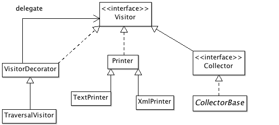
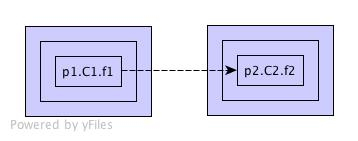
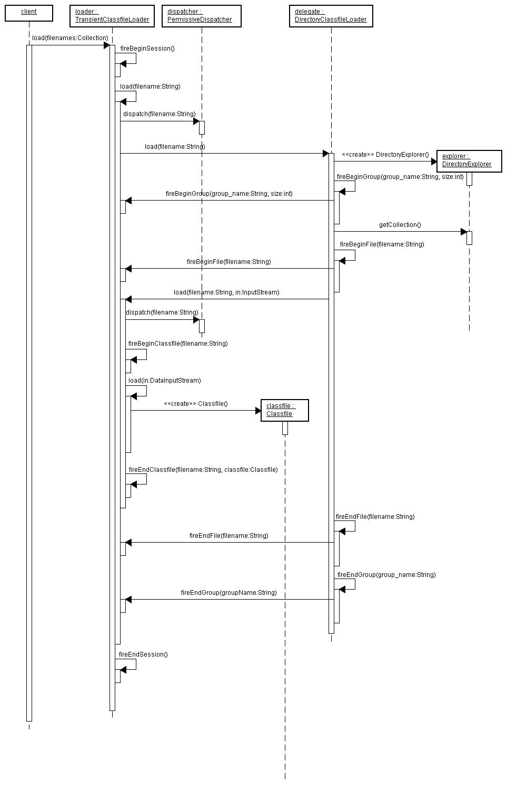
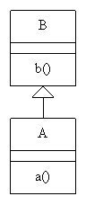
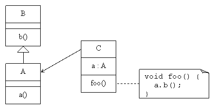
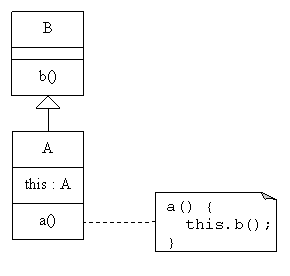
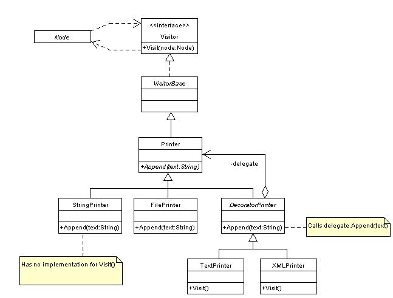
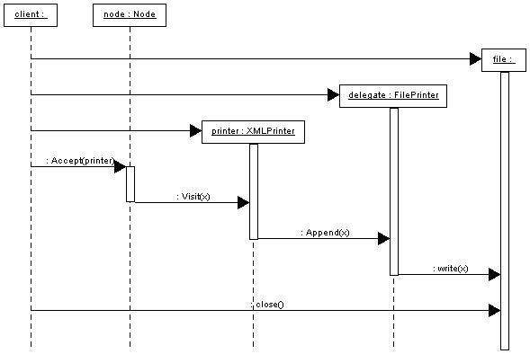
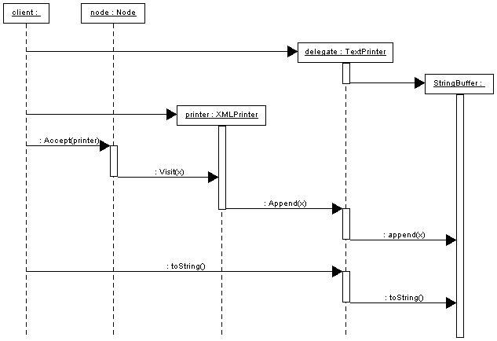
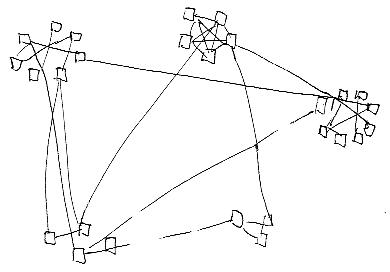

Jean's Journal |
|
I got an email today from a user who found a bug in Dependency Finder. It turns
out that I implemented the null check in Classfile.isInnerClass() in the wrong
direction. I looked for usages of this method but found none. Not even a test.
The shame.
I also discovered a 2 year old bug report about the access flags for inner classes. Given these classes:
public class Outer {
private class Inner {}
}
The bytecode for Outer has an access flag of 00000000 00100001: ACC_PUBLIC
and ACC_SUPER. The bytecode for Inner has an access flag of
00000000 00100000: only ACC_SUPER because it is not a public class. The
.class file format does not provide for other class-level visibility levels.
The modifiers of the inner class are covered in the InnerClass part of
InnerClasses_attribute. The bytecode for both Outer and Inner include
identical copies of InnerClass with an access flag of 00000000 00000010:
ACC_PRIVATE.
The bug report was trying to copy the InnerClass access flag to the
Classfile instance. This will not work because the meaning of each bit is
different between the two classes. The interfaces in
com.jeantessier.classreader are meant to provide an accurate representation of
the information in the bytecode. It is meant for people who think in terms of
the bytecode, not people who think in terms of the Java language. There is a
subtle difference. If you're dealing with an inner class, you have to get its
access level from the enclosed InnerClasses attribute.
To work on this problem, I fired up a grails shell in a Grails application
where I had copied DependencyFinder.jar. It was really cool to simply use
scripting to manipulate data. Java has so much boilerplate code, compared to
Groovy.
Grails already includes JAR files for
Log4J 1.2.15 and
Jakarta ORO 2.0.8, the same versions that
Dependency Finder uses. As an experiment, I created an empty Grails project and
copied only DependencyFinder.jar to its lib/ directory. I then started
grails shell and I was able to run the same operations as
DependencyExtractor by hand. No big surprise there, but it was cool.
I want to redo the webapp as a Grails application. I'm struggling with file
system issues, though. Should I create a directory under the current tree where
I would put the new app, next to web/ and =webwork/"? That would be
consistent, but the new app would get a name from that directory, which would
most likely be called grails. An alternative is to start a brand new tree
somewhere else, completely dissociated from the current Dependency Finder
development tree. There, the application can be called DependencyFinder or
some such. But I would have to start a new Git repository for it. In either
case, I'll have to be creative to manage DependencyFinder.jar as it evolves.
Upgraded the following development components:
IntelliJ IDEA : 9.0.1 CE -> 9.0.2 CE
My license for IntelliJ IDEA is about to expire. I haven't been able to work on Dependency Finder since I started working at ShopWell, so I don't know if they'll consider the project active enough to deserve a free license still. But JetBrains has a community edition that is free and does everything I need, so it is not a complete loss. I installed it tonight to try it out.
Upgraded the following development components:
IntelliJ IDEA : 9.0 -> 9.0.1 CE
A user was having difficulty accessing the DTDs. After investigating, I
realized SourceForge disabled automatic directory listings ... in 2008. They
left instructions on how to re-enable it, so I added .htaccess in the dtd/
folder to take care of it.
Tried to use Dependency Finder to analyze some Groovy code. But the way that Groovy mediates method calls so it can treat getters like properties makes it difficult (impossible?) for Dependency Finder to see the real dependency. Instead, it sees dependencies to Groovy's internal method resolution code.
I installed the latest version of
yEd only to find out
its XML parser cannot read the GraphML files I generate with
DependencyGraphToyEd. Something to do with forward references. I guess I'll
have to rewrite it to process write out all nodes before it writes edges.
I've been setting up another development on a new laptop. I couldn't find the
version of FitLibrary that I'm
using with Dependency Finder. I'm using FitLibraryRunner20060116, but the
oldest version available is FitLibraryRunner20070217. There were some API
changes, starting with this version, that are incompatible with my code and I
have not found a workaround. I am going to have to include my copy of the
2006-01-16 version with the source for Dependency Finder if people want to run
the Fit tests.
I'm thinking of replacing the web app with a Grails app instead.
Found some useful instructions on tying Git and SVN at the
online documentation for Git
for the
git-svn
command.
Fixed the WebWork-based web app, somewhat. It turns out that if I want to use Spring IoC, I need to add a few JAR files to the application and an empty Spring config. But maybe I just don't need Spring IoC.
Now, the web app starts, but nothing happens when I try to run extract.action.
I know the right method gets called because start and stop get assigned, but
ExtractAction does not look at the resources listed in source.
I tried to update the SVN repo first, in the hopes of copying the change to Git afterwards. This is probably a bad idea if I don't have access to the original Git client where I first fetched the SVN repo.
Converted the Subversion repository to Git, hosted on SourceForge. I'll try to keep them in sync for a while, but I might eventually switch only to Git and cancel the SVN repo, just like I did for CVS a while back.
Added sample data files for 1.2.1 beta releases.
Added build.cobertura.xml for computing code coverage using
Cobertura.
Worked on backlog of data files from 1.2.1 beta releases.
Released version 1.2.1 beta3.
Updated the release instructions.
Added missing flag values on Classfile parts when rendered in XML. I also
added comprehensive tests for all flag values.
ClassfilesyntheticannotationenumFieldenumMethodbridgevarargsInnerClassannotationenumUpdated the DTD too.
Found a bug with the latest release. When I added Google Collections, I forgot to update some of the Unix launch scripts. I'll probably cut a new release with the fixed scripts.
Upgraded the following development components:
HttpUnit : 1.6.2 -> 1.7
Added the output of JarJarDiff on
HttpUnit to the Samples page.
Going through the Groovy tutorial. It is a
nice scripting language, a cool extension of Java. You can name closure
parameters, just like Ruby, but it also has a default it if the closure needs
only one parameter. I was able to compile to bytecode, using groovyc, and run
Dependency Finder on it. But the code it generates is very hard to read, so
don't try it. Generated code is meant to stay hidden.
Speaking of generated code, I saw a presentation on IxEdit, a tool to generate JavaScript to tie controls on a page. While it is very slick for generating interactions, it generates code that you then cut and paste into the HTML page. I'm pretty sure this is not maintainable. The generated JavaScript is fairly opaque. The demo didn't cover how or if you could re-insert the code in the editor to refine interactions.
A friend mentioned the Groovy language. It is a scripting language built on top of Java. It compiles to bytecode and runs on the JVM, so I might be able to run Dependency Finder on it and see what comes out. :-)
Videos on Groovy:
The Groovy site mentions Cobertura to do code coverage. Its sample output looks nicer than what I'm using right now: Clover and Emma. I'll try to run it over Dependency Finder when I have a moment.
Released version 1.2.1 beta2.
The distribution file management has changed a lot since the last release. I need to update the release instructions. See release instructions on SourceForge in the meantime.
Pushed the logic for separating fully qualified class names into package name
and simple class name to the Class_info class, with tests. Added tests for
Classfile.locateField() and Classfile.locateMethod(), including proper
handling of inherited package-visible methods.
Added LoadAdapter, a no-op implementation of LoadListener, so
implementations don't have to duplicate no-op methods just to fulfill the
interface.
Started Google Collections in spite of my reservations regarding JSR 305. Next, I want to start using Guice too.
Added JarJarDiff output for EasyMock and its class extension.
I'm still debating whether interactions between visitors should use double
dispatch or not. Double dispatch is useful when you don't know the exact type
of the element being visited, so you cannot know which visit() method to use.
But when the decorating visitor is ready to dispatch to the decorated visitor,
it knows the concrete type of the visited element, so there is no need for
double dispatch. I'm still tempted to keep using double dispatch nonetheless,
since it is the normal mechanism for passing control to a visitor and it makes
the interactions with the decorated visitor seem more natural.
I have produced an alternate sequence diagram that shows the flow of control between three visitors composed visitor to render a dependency graph as text.

I also produced a matching version of the dependency graph for rendering a dependency closure as a call graph.

I really like sdedit for creating sequence diagrams.
Tried to used
Google Collections in
Classfile. I was hoping that Iterables.find() would simplify methods like
getField() and getMethod(), even with the added boilerplate for the
anonymous inner class for the Predicate. But find() throws an exeception
if it doesn't find a match whereas my code has been returning null. Once I
throw in the exception handling, the methods is much harder to read than the
simple for() loop I had before.
Google Collections uses the @Nullable annotation from
JSR 305. But the project doesn't have
any binaries, so I had to steal the JAR file from the
FindBugs project. It doesn't feel as
clean as I would want it. Maybe I need to let Google Collections to bake for a
little while longer.
Refactored Classfile to rework locateField() and locateMethod(). I now
have a special constructor to allow testing. I marked it with a comment while I
decide whether or not I want to pull
Google Collections into the
project so I can use its @VisibleForTesting annotation.
Finished a possible test for Classfile, using a test-only constructor. I
marked it @Deprecated until I figure out how I want to introduce the Google
Collections API.
I should rewrite Classfile.locateField() so it is similar to
Classfile.locateMethod(). For consistency.
Looked at how I'm using MaximumCapacityPatternCache and how its capacity()
method returns a hard-coded 20. This capacity serves to seed the expression
cache in ORO's Perl5Util. I'm thinking that most of the time, 20 is overkill.
And when I need more than 20, I need a lot more than 20. So it's never quite
the right number, but I cannot refine it without lots of experimentation. At
least, ORO's GenericCache.DEFAULT_CAPACITY is also 20, so somebody thinks
it's a sensible value. Maybe I should reference it instead of hard-coding a
mysterious 20.
Changed dependencies on java.io.DataInputStream to java.io.DataInput
instead.
Looked at Classfile.locateMethod() and I found something that seemd strange at
first glance: it will return a method defined on the class regardless of its
access priviledge, but will only return one that is inherited if it is public or
protected. This makes sense, since otherwise it would not be inherited. But it
is missing the case of a package-level method from a superclass or interface in
the same package. The expected behavior is not documented and there are no
tests to tell me what I had in mind when I first wrote it. So I tried to write
a test for it, but the constructor for Classfile does way too much work. It
reads a lot of data from the DataInput, including the constant pool and
interfaces and fields and methods and attributes. Specifying all of these in a
test is too brittle, I'd much rather supply mocks for all these collaborators.
If I used the
Google Collections, I could
have a special constructor and mark it @VisibleForTesting.
Tweaked tests to use is() matcher with assertThat() consistently.
Refactored com.jeantessier.metrics.TestMetricsGatherer so it uses mostly the
new assertThat() syntax from JUnit 4.5 intead of the various assertTrue()
and assertEquals() and so forth. I was able to simplify the tests drastically
with judicious uses of helper methods and Hamcrest's hasItems() matcher.
It is still more an integration test than a pure unit test. It is somewhat
brittle since it depends on an actual compiled class and lots of internal
details of com.jeantessier.metrics, but there is only so much I can do in one
pass. At least, it is very readalble now that I have removed all the
duplication.
Upgraded the following development components:
JUnit : 4.6 -> 4.7
The new JUnit introduces a new concept called
rules.
They are essentially interceptors for tests and a new extension mechanism for
JUnit, now that tests don't have to derive from TestCase anymore. This looks
promising. They re-implemented expected exceptions and you can now supply
matchers for more precise matching of exceptions thrown by the test methods.
Rules appear much more flexible, but they are still poorly documented. It is
unfortunate that the javadocs bundled with JUnit 4.7 do not include the
documentation of already provided rules.
Extracted styles from the Resources page.
Another example sequence diagram for the call flow across composed visitors to, this time to render a dependency closure as a call graph in text. Click the image for a better view. See also the source file.
I wanted to completely separate the textual rendering from the traversal of the
graph, but I may not be able to do that. The current TextPrinter makes
assumptions on the nature of the graph so it can remove "empty nodes". I am not
sure in this logic belongs in the rendering or the traversal or somewhere else
altogether. If it belongs somewhere else, this complicates the setup to do a
simple printout to text.
Found sdedit for creating sequence diagrams. Here is an example for the call flow across composed visitors to render a dependency graph as text. Click the image for a better view. See also the source file.

Adjusted the yEd transformation so it renders unconfirmed nodes a different color from the confirmed nodes.
Found some references to StackMap in the release notes for JDK 1.6. They
point to JSR 202, which itself points
to JSR 030 and JSR 139. It appears
StackMap is used to simplify class verification by splitting the process
between the compiler and the runtime. JSR 139 has an early specification where
the attribute is named "StackMap" instead of "StackMapTable". JSR 202 has the
full specification, so I will be able to use it to parse "StackMapTable"
attributes fully in com.jeantessier.classreader.
Had a discussion with Russ Rufer, Tracy Bialik, and Gene Volovich on my recent
experiment combining decorator and visitor patterns. Russ recommended that I
look at the code for ASM where he saw a way to
combine visitors and graph traversal that he liked. This might be inspirational
when I try to apply the same model to com.jeantessier.classreader.Visitor.
They also suggested that I could migrate Dependency Finder to ASM. This way, I wouldn't have to keep up with language developments. I vaguely remember taking a glance at ASM some time ago and finding it rather ugly. Maybe it's worth another look, if only to properly document why I don't like it. :-)
Found instructions for switching my MacBook Pro to JDK 1.6.
I was looking at CodeDependencyCollector and I noticed that some of the
visit...() methods were not calling their superclass counterparts like the
others. They were:
visitClass_info()visitFieldRef_info()visitMethodRef_info()visitInterfaceMethodRef_info()visitExceptionHandler()
I couldn't think of a reason they should not call to super, so I fixed them.
They all end up calling to VisitorBase which has all no-ops anyway. Strange,
nonetheless. This brings me back to a paper I wrote years ago for my M.Sc. on
what I called
Inherited Behavior
at the time.
Upgraded the following development components:
JUnit : 4.5 -> 4.6
I also noticed that the new SourceForge layout has a large download button on the project's home page and that it points to version 1.1.0-beta2, which is about 5 years old. It took a while to track down how to change it to the latest version, 1.2.1-beta1, and I don't know how long it will take for the change to propagate all the way to the project's home page. I don't know how long it's been this way. The download statistics at SourceForge show nothing for the last week. I hope it's just that their stats are down and not that nobody is downloading Dependency Finder!
Refactored SelectiveTraversalStrategy to create an actual
ComprehensiveTraversalStrategy to use in defaults instead of an unconfigured
SelectiveTraversalStrategy. I figure the indent is more explicit this way.
Changed SelectiveVisitor to reuse the superclass implementations when it is
appropriate. This meant changing the tests because the superclass was using
double dispatch to pass control to the delegate visitor and the original
implementation of SelectiveVisitor was calling the delegate directly.
I don't know what I was thinking when I first wrote VisitorDecorator. It was
calling the counterpart method on the delegate directly instead of using double
dispatch like I originally wanted to. I fixed the tests, mocking more things
along the way, and then fixed the code.
Cleaning up the interface, I added traverseInbound() and traverseOutbound()
to the Visitor interface. Almost all implementations already had them already
and the others ended up being no-ops.
I wrote a BasicTraversal visitor that uses a TraversalStrategy to do some
filtering, but I was not happy with it. It was not clear where scope versus
filter selections should happen. I felt like I needed a separate class to do
the scoping and the filtering, but the composition of decorators would become
non-trivial. Finally, I found a way to make it work and I got BasicTraversal
and SelectiveVisitor to be just the way I wanted.
I changed my IntelliJ IDEA configuration to use JDK 1.6 on my MacBook Pro. My shell is still stuck on JDK 1.5. I wonder how they will interact, when I happen to compile in IDEA and try to run some tool from the command line.
Started down the path of composite visitors. Wrote
com.jeantessier.dependency.VisitorDecorator to start composing visitors for
dependency graphs.
Fixed some tests. Some of the Fit tests needed better explanations. There was
one broken test in com.jeantessier.classreader.TestXMLPrinter. This last one
was checked in broken, after I made a last minute change to the XML format. I
need to be better disciplined at running all the tests before I check in code.
Fixed a typo in the web app's style.css.
Finished adding the label to the web app pages, complete with HttpUnit tests.
Adding a secondary title to the web app pages, called "label", and which can be
set from load.jsp or extract.jsp. The goal is to let automated graph
updates tack a label to the current data set, such as a revision number or a
timestamp. This lets users know which data their queries are running against.
Fixed CodeDependencyCollector to correctly track dependencies on classes and
enum values referenced in annotation values.
Found a bug: when CodeDependencyCollector visits the attributes of a class, it
attaches dependencies to the last method it visited instead of to the class
itself. Luckily, there is a handy hook called
VisitorBase.visitClassAnnotations() that lets me intercept control and restore
the current node right after visiting fields and methods and before visiting the
annotations.
Spiked on printing the call graph for closures as a chain of calls instead of a flat dependency graph.
Back on 2008-11-05, I troyed with the idea of using composition to deal with
sharing behavior in the com.jeantessier.classreader.Visitor hierarchy. At the
time, I was thinking of wrapping a TextPrinter inside a TraversalVisitor,
where the outer visitor would be responsible for traversing the structure and
would call on the inner visitor for specific processing at each node. This
created problems for XMLPrinter which needs to do both pre- and
post-processing on each node.
But what if the Printer was the outer visitor and the traversal was done by
the inner one? Then, the printer would have free reign in doing all the
"around" work it wants. It would call in to the inner visitor when it is ready
to traverse a nodes subsequent structure. The inner visitor would still have to
call out to the outer one whenever it moves to a new node, though. Reminds me
of cross recursion, somehow.

The code for visitMethod_info() would look something like:
public abstract class VisitorDecorator implements Visitor {
private Visitor delegate;
public Visitor getDelegate() {
return delegate;
}
public void setDelegate(Visitor delegate) {
this.delegate = delegate;
}
}
public class TraversalVisitor extends VisitorDecorator {
public void visitMethod_info(Method_info method) {
for(Attribute_info attribute : method.getAttributes()) {
attribute.accept(getDelegate());
}
}
}
public abstract class Printer extends VisitorDecorator {
...
}
public class TextPrinter extends Printer {
public void visitMethod_info(Method_info method) {
append(" ").append(method.getDeclaration()).append(";").eol();
method.accept(getDelegate());
}
}
public class XMLPrinter extends Printer {
public void visitMethod_info(Method_info method) {
indent().append("<method>").eol();
raiseIndent();
indent().append("<declaration>").append(method.getDeclaration()).append("</declaration>").eol();
method.accept(getDelegate());
lowerIndent();
indent().append("</method>").eol();
}
}
Notice how the printers call method.accept(getDelegate()) to get further
processing of the current node. The TraversalVisitor instead calls
attribute.accept(getDelegate()), moving the processing further along the
structure.
The flow of control would constantly pass back and forth between the two visitors. It all pretty much depends on which one starts the ball rolling.
The reason I'm revisiting this issue is because I find myself in need of a
com.jeantessier.dependency.Visitor that would traverse the graph depth-first
along inbound and outbound dimensions, instead of a the current shallow
traversal.
The code to use this would look like:
Printer printer = new TextPrinter(...);
Visitor traversal = new TraversalVisitor(...);
printer.setDelegate(traversal);
traversal.setDelegate(printer);
printer.traverseNodes(factory.getPackages().values());
And I could use it to print transitive closures, based on the start criteria.
I have been running an experiment to launch Dependency Finder as an instance of
Jetty with the web app UI. But Jetty seems flaky. It runs fine at first, but
after a while, it starts throwing messages that can cannot find classes that
are obviously in the JAR. I don't get it. I've reverted to using Tomcat for
now. I removed all the applications in its webapps folder and deployed
Dependency Finder as ROOT so I don't need a path element to access it.
Found another example of an annotation that takes array and class values even
closer to home in org.junit.Test and org.junit.runners.Suite.SuiteClasses.
And even better, TestAll has both of these, so all I need to do to find an
example is analyze TestAll.
I did a quick spike to try to track annotations as part of
com.jeantessier.classreader.MetricsGatherer. Early results are promissing,
but this was just a spike so I will have to trown away that code and redo it
properly, test-first.
Found a nice example of an annotation that takes array and class values in
org.testng.annotations.Test. Though, looking closer to home,
java.lang.annotations.Retention takes an enum value and
java.lang.annotations.Target takes an array of enum values. I can play with
these manually to validate the XML format for annotation information.
Fixed XML rendering of AnnotationDefault_attribute to remove the extraneous
<element-value> node around the actual element value.
Played with filtering out files directly from DependencyExtractor. I had
forgotten about FileFilteringLoadListener and
ClassfileFilteringLoadListener. At first, I thought of using
FileFilteringLoadListener to short-circuit even the parsing of unwanted
.class files, but that didn't work. It only filters the beginFile() and
endFile() events. It does not remove any of the logic that happens between
them, nor any beginClassfile() and endClassfile() event.
At the very least, I need to augment the tests for GroupFilteringLoadListener
and FileFilteringLoadListener so they at least suppress all events with
matching group or file names respectively. Not just their own begin ... end
events, but also those that happen in between. After that, maybe I'll consider
turning the begin event into something closer to a VetoableChangeListener,
where I can suppress processing between match begin and end events based on
the handling of the begin event.
The javadocs for LoadListener and LoadEvent are dreadfully out of date.
Fixed CodeDependencyCollector to correctly track dependencies on annotations.
For now, it only captures dependencies on the annotation itself, not on any
element values that it might contain. This will come next.
I implemented support for rendering elements of runtime annotations in
XMLPrinter.
I also modified EnumElementValue.getTypeName() and
ClassElementValue.getClassInfo() so they convert class names in path
notation to a proper class name. Internally, these class names are stored as
UTF-8 strings, not ClassInfo_attribute structures, so these classes have to
take care of converting strings containing encoded class names such as
"Lfoo/Bar;" to proper class names such as "foo.Bar".
Jens Dietrich uses Dependency Finder in his gpl4jung project.
Removed dependencies on toString() when getting the names of elements of
Classfile. It is much better to be explicit about which piece of data is
needed rather than rely on what an object's string represenation is. Also, it
is impossible to mock toString() using jMock.
Happy Canada Day!
Someone asked why Dependency Finder was not picking up dependencies on runtime
annotations. The answer is simple: I haven't implemented that part of Java 1.5
support yet. The code is there to read in annotations from the .class file
and include them in the Classfile structure, but I don't do anything with it
just yet.
I implemented support for rendering runtime annotations in XMLPrinter. It's
a start. I didn't get around to handling all the different types of element
values, though.
Tweaked the CSS used when converting dependency graphs to HTML (with XSLT).
Verified site ownership with Google Webmaster Tools by adding a meta tag on the site's home page.
Found out about the Google Visualization API.
Changed Classfile to track methods with a simple Collection instead of a
Map. This way, bridge methods don't trample each other. But I use a
LinkedList internally, so methods are no longer sorted by signature. All the
tests are passing for now, but suspect it will impact the logic in OOMetrics
and/or JarJarDiff.
I also tried to resurrect the WebWork web app, with limited success. I want to move it squarely into Struts2 instead of clinging to WebWork 2.2.6.
One user asked:
i have a project P that contains in some package Z a class C.
I want to know all of C's dependencies....
If all you want is C's direct dependencies, you can get them from analyzing the
compiled code in C.class. If you want the transitive closure, you sill need
to analyze all the classes along the way too. You can point Dependency Finder
to a folder and it will scan it and all its subfolders for possible Java code,
be it in JAR files, zip files, or loose .class files.
Here is how you would do it using the CLI. Start by extracting all dependencies
for project P and saving them in df.xml. You can add third party JARs to the
command if you want to drill into their dependencies too.
% cd [to P's output directory]
% DependencyExtractor -xml -out df.xml . [add third party JARs too]
Then, reduce all the dependencies in df.xml to class-to-class dependencies and
save them to c2c.df.xml.
% c2c -xml -out c2c.df.xml df.xml
Now, use DependencyClosure to list the first and second degree dependencies
from Z.C in the graph in c2c.df.xml. "Inbounds" are classes that depend on
Z.C whereas "outbounds" are classes that Z.C depends upon.
% DependencyClosure c2c.df.xml -class-start-includes /Z.C/ -maximum-inbound-depth 0 -maximum-outbound-depth 1
% DependencyClosure c2c.df.xml -class-start-includes /Z.C/ -maximum-inbound-depth 0 -maximum-outbound-depth 2
If you want to use the GUI instead, use the "Closure" tab and the
File >> Closure menu command. First, use
File >> Extract to extract dependencies for project P. Then
select the "Closure" tab. In the "Select programming elements" group of
controls, check "classes" and put /Z.C/ in the "including" box. In the "Show
dependencies (stop for closure), select "classes" but leave the textboxes empty.
Set "Follow inbounds" to 0 and set "Follow outbounds" to 1 to first degree or 2
for second degree dependencies. Click File >> Closure and
see the results in the large results area.
Looking at JavaCC as a potential help in
parsing Signature_attribute values. While looking for possible books on
JavaCC, I stumbled upon
Decompiling Java
quite by accident. It came out in 2008, so it might even be up-to-date, but the
reviews give me pause.
Reading up on Guice 2.0.
Wrapping my head around signatures. I based SignatureHelper on
DescriptorHelper, but that may not be enough. The strucure of signagtures is
much more complex and has a recursive nature. I may need a number of classes to
handle all the production rules in the JVM specification section 4.4.4.
A colleague pointed me to DepAn, another dependency analysis tool for Java. It seems to be built on the Eclipse platform and uses ASM for decompiling Java bytecode. It is distributed as a binary for the Linux platform. It won't work on my Mac and I couldn't get it to start on my Linux box either.
Looking into running DependencyFinder on Google App Engine or Amazon EC2. Users would have to upload their JAR files to the server, though.
Found a misnamed method. VisitorBase.visitClassfileAnnotations() should
have been called VisitorBase.visitClassfileAttributes().
Worked on Method_info.getSignature() to use the generic signature of a
Signature_attribute when it is available. In the process, I realized that I
never finished SignatureHelper.
Found out about Crap4J, but I'm having a hard time fine
tuning the sample build.xml file so I can run it on Dependency Finder. I
should add it to the Resources page.
I want to redo ClassList to simply use a LoadListener to collect class names
as they are being read in. Coupled with a lightweight Classfile, it would
reduce its memory footprint. Right now, it uses an AggregatingClassfileLoader
and parses an entire JAR completely before simply writing out class names. This
is a waste of time and memory and it hurts when dealing with really large JAR
files.
Someone found a typo in the documentation: -csv was written -cvs. It's
all fixed, now.
I fixed com.jeantessier.metrics.MetricsGatherer to use
Classfile.isSynthetic() to determine if a class is synthetic or not. It used
to look onl for the presence of a Synthetic_attribute, but in Java 1.5 the
synthetic property can be set in the ACCESS_LEVEL field of the .class file.
I will need to fix it for methods and fields too.
The deprecation level is computed the same way, by looking for the
Deprecated_attribute. But in Java 1.5, it can also be set via an annotation.
This will require more work.
Refactored CodeDependencyCollector.visitClassfile() so it calls
super.visitClassfile(classfile) to traverse the parts of the Classfile
instead of doing it explicitly. This means that it will now visit the
attributes of the Classfile in addition to its fields and methods. For now,
CodeDependencyFinder ignores the attributes that can be attached to a file,
but I'm tempted to collect dependencies from attributes such as:
EnclosingMethod_attributeInnerClasses_attributeSignature_attribute
EnclosingMethod_attribute is particularily interesting because it would be
the first time we have an explicit dependency going from a class to a feature.
I also noticed that com.jeantessier.metrics.MetricsGatherer only looks for a
class' Synthetic_attribute and does not look at the class' ACCESS_FLAG. I
need to fix this so it calls Classfile.isSynthetic() instead. The same
probably goes for other visitors and for other properties of things with
attributes.
I have been doing a lot of thinking about large projects that run out of memory
to hold the dependency graph. In one case, I have a very large JAR file with
all the project classes in it and even if I give DependencyExtractor over
1.5GB of memory, it still runs out. I could add scoping to the extractor, but
this feels like piling too many responsabilities on one tool, espcially when it
is already the purview of DependencyReporter. I could partition the graph
across many machines. I can already merge graphs, so the client could ask all
partitions (in parallel) and merge the results together. But now I'm facing
the problem of how to partition the graph and how to prevent parsing the
.class files multiple times. I am exploring the possibility of having
lightweight implementations of Classfile and its constituents to help with
deciding how to partition the graph, and how this plays with the notions of
group and file in a loading session.
I've been thinking about how to deal with very large projects that Dependency Finder cannot fit into memory. I could partition the dependency graph between multiple servers, query them in parallel, and merge the results together. I already have the merge logic. Next, I need a way to partition the graph efficiently.
I could do preprocessing of the codebase to determine the partitions automatically. I could use a variation on LCOM4 for this. Well, not really LCOM4, but more of a general graph partitioning algorithm. I could generate a directed package-to-package graph with a weight on each edge that tells how many classes are involved in that edge. Then, I do a normal graph partitioning but I only consider edges with weight greater than N. By varying N, I can find the optimal partitions, including which packages are in each one.
To do the preprocessing, I could simply have a DependencyListener listen in
and tally the dependencies. But CodeDependencyCollector, which triggers the
listeners, is way too tightly coupled to NodeFactory. I would like to run
CodeDependencyCollector without a NodeFactory so it would only generate
DependencyEvent messages, and those would have enough information to
distinguish between different kinds of dependencies. I could use some kind of
non-caching NodeFactory, or rather have some other class create the
dependencies so I can have a very lightweight graph in the factory while I just
tally information about the dependencies but not the dependencies themselves for
this specific analysis.
See also graph partition algorithms at The Stony Brook Algoritm Repository.
Fixed com.jeantessier.classreader.TextPrinter so it does not put a ";" after
a class' static initialization block.
Fixed bug 2663753 which deals with the signature for a class' static initializer.
I wrote a test (using JUnit 4) which exposed that Feature_info.getName() and
Feature_info.getSignature() were calling UTF8_info.toString() instead of
UTF8_info.getValue(), which tripped the mocks created by jMock. It also
forced me to change the signature of the Feature_info constructor to depend
on DataInput, an interface, instead of DataInputStream, a concrete class.
Because the new test is a JUnit 4 test, I switched all TestAll suites to use
the JUnit 4 mechanism for constructing suites. It lets me compose suites from
JUnit 3 and JUnit 4 suites and test, all mixed and matched. I was bring back
com.jeantessier.metrics.TestMetricsGatherer into a single test target for all
tests. The Fit tests are still in JUnit 3 suites. I will need to take a good
look at them to upgrade them too, but I am too tired for this right now.
Finally got around to fixing
bug 2663688
where com.jeantessier.classreader.TextPrinter might encounter a null
Code_attribute on abstract or native methods.
Tried to get a simple example of Guice working with Struts2 in Tomcat, but no matter what I tried, I couldn't get it to work. It's like it cannot find my bindings, for some reason. I would really love to use Guice and WebWork (now Struts2) in the webapp.
Got a presentation on FindBugs by Bill Pugh, the author himself. It is a really cool tool that uses bytecode analysis, just like Dependency Finder, but in a much more targeted way to find patterns in the code that are likely to be bugs.
Refactored the way APIDifferenceStrategy collects field names and method
signatures. I extracted a method that takes a function object, a poor cousin
to blocks in Ruby. At first, I used an inner interface inside
APIDifferenceStrategy and anonymous inner classes at the call sites. But
then I thought I might reuse it elsewhere, so I pulled everything out as
stand-alone classes in com.jeantessier.classreader: interface FeatureMapper
and implementations NameMapper and SignatureMapper. Don't confuse them
with PackageMapper which is completely different.
Considering moving the behavior from CodeDifferenceStrategy.isCodeDifferent()
to Code_attribute.equals() instead. This way, if I introduce a Null Object
pattern for Code_attribute, I can make sure that nothing equals the null
object. And the code in CodeDifferenceStrategy would become a simple:
public boolean isCodeDifferent(Code_attribute oldCode, Code_attribute newCode) {
return oldCode.equals(newCode);
}
This code assumes that oldCode is not null, or you'd get a
NullPointerException. I checked all the call sites for isCodeDifferent()
and they all verify that neither oldCode nor newCode is null, so this new
version should be perfectly safe.
Tried to replace MockDifferenceStrategy with jMock, but some of the tests are
too involved with real Classfile instances to make it practical. I will need
to rewrite those tests to use mock Classfile and associated structures
instead, which will take some time.
Minor changes to phrasing in the Tools page.
Added a link to Pivotal Tracker for Dependency Finder as one of the menu items on the site's left-hand panel. I also tried to make the "Download" like more proeminent by using a <strong> tag (I wanted to use <b> but IntelliJ IDEA complained that it was deprecated and suggested <strong> instead), but the effect may be too light still.
I made the Pivotal Tracker project public so everyone can see how it's doing.
Also, today, I found a
bug
in ClassReader. In text mode, when it encounters an abstract method, it
would throw a NullPointerException. The code in =TextPrinter] blindly calls
entry.getCode().accept(this) without checking that getCode() returned
something. I could use the Null Object pattern, but I'll have to check
everywhere I call getCode() first.
Playing with Jetty, I managed to make it serve a complete web app straight from the WAR file. This simple program takes a port number as the first parameter and a WAR file as the second.
public static void main(String[] args) throws Exception {
Server server = new Server(Integer.getValue(args[0]));
WebAppContext webapp = new WebAppContext();
webapp.setContextPath("/");
webapp.setWar(args[1]);
server.setHandler(webapp);
server.start();
server.join();
}
For now, the web app takes its configuration from the web.xml file that is
burried in the WAR file. I'll have to figure out a way to pass in the values
for the source and file context parameters.
Created a project on Pivotal Tracker to try and manage my effort on Dependency Finder. I know a few people at Pivotal Labs and they introduced me to Tracker a few years ago. It's a pretty cool tool, but I'm not sure how useful it will be on a single-person project with a very irregular schedule.
I am toying with the idea of using Jetty. With it, I could embed a webserver in the application instead of using Swing. This way, I can provide the user experience entirely from the web application instead of maintaining a separate Swing version.
Documentation on configuring Jetty with an existing web application is sketchy at best. I was hoping for a simple, fool-proof recipe, but it looks like I might have to do actual work to get this to work.
Reading a little more about this, it looks like Jetty already ships as part of WebWork. WebWork's QuickStart uses Jetty to provide a quick starting point for development. This QuickStart may not be the best approach for deploying an application, though.
Upgraded the following development components:
IntelliJ IDEA : 8.0.1 -> 8.1
Upgraded the following development components:
JUnit : 4.4 -> 4.5
I still haven't started converting all the test cases to JUnit 4.
Fixed targets in build.tomcat.xml that were not getting the right paths
because they were not depending on the init target.
Found a minor bug with ClassReader where it does not reset the internal
counter it uses to print a constant pool in text mode. If I ask it to print
two classes, the indices of the second class pick up where the first one left
off.
I tried to write an integration test first, but there is so much indirection
involved between TextVisitor and Classfile that it would have required quite
a bit of setup and would have ended up fairy brittle. So I settled for a small
unit test of VisitorBase.visitConstantPool() instead.
Fixed a constant duplication in data2atom.cgi where it was referencing
Journal.cgi directly instead of the more generic $DOCUMENT.cgi.
Updated the copyright notice to 2009.
Better escaping of & in Atom feed. Fixed some broken entity references in the Journal.
Looked at generating an Atom feed based on the Journal. In the process of
turning data2html.cgi into an Atom generator, I found a bug in data2html.cgi
when generating links to dated entries.
Upgraded the following development components:
IntelliJ IDEA : 8.0 -> 8.0.1
Added CodeFinder to replace the explicit iteration in Method_info.getCode().
Cleaned up how XMPrinter deals with instructions that have a value embedded in
them, such as bipush and iconst_1. Also made it show the destination
address of goto and jump instructions.
Augmented TextPrinter so it also shows the bytecode, similar to what
javap -c does, including the exception handling.
As I was looking at coverage reports to make sure I covered all the cases in
printing instructions, I was reminded that some ExceptionHandler structures do
not have a catch type, meaning they trap everything and apparently that is the
bytecode presentation of finally blocks.
I also realized that I was reading offset values for goto and branch
instructions as unsigned values, when they are actually signed. The same goes
for embedded values in bipush and sipush instructions.
Fixed the use of id attributes in classfile.dtd to use index instead. The
attribute id has special meaning in XML.
I realized that local variables can be active for only a portion of a method's
execution and that the VM can reuse positions in the local variable table for
different variables whose scope does not overlap. That significantly
complicated LocalVariableFinder. It had to take into account the position of
the instructions trying to locate a local variable and what local variables are
active at that position in the code. To complicate matters further,
instructions that set local variables, such as istore, are such that the
variable does not really exist at that instruction position but starts
immediately after. Couple that with the wide instruction and things get
pretty nasty pretty quickly.
Minor refactoring.
Added Instruction.getIndexedLocalVariable(), Instruction.getOffset(), and
Instruction.getValue() to help with text rendering of instructions. Used them
to make traces in Code_attribute and instruction data from XMLPrinter more
useful.
Simplified Instruction tests by using jMock and putting many of the tests
methods in one test class.
Bad news for Dependency Finder: I just got Tomb Raider: Underworld! >:-)
Wrote LocalVariableFinder to help find the LocalVariable of a
Code_attribute from its index in an Instruction.
Removed getCode() from the Instruction interface. The implementation can
still hold on to the Code_attribute, but that's an implementation detail, and
does not need to be part of the exposed interface.
Modified journal entries to turn dates into hyperlinks.
Extracted the implicit index from instructions xload_<i> and
xstore_<i> to be the value of <i>. Those values point
to entries in the local variable array of the current frame. I could use them
to provide better text rendering of instructions by naming the variable (when
there is a LocalVariableTable present in the Code_attribute).
Modified data2html.cgi to render dates as URLs to the corresponding journal
entry.
Simplified build.test.xml by grouping all JUnit tests under one target. With
junit-4.4.jar in $HOME/.ant/lib, it can run JUnit 4 tests too.
com.jeantessier.metrics.TestMetricsGatherer is a JUnit 4 test and it cannot
run as part of a JUnit 3 test suite.
Back on 2008-11-03, I simplified some constructors at the cost of less
useful debug traces. I was looking at traces from ClassMetrics to see how
Dependency Finder was dealing with annotations in the wild and I realized that
echoing only constant pool indices is not very helpful. I really need to
look up those values in the constant pool and include them in the trace
message.
Found a bug! It turns out that the constructor for AnnotationElementValue
was not passing the ConstantPool to its Annotation. Now that the
constructor for Annotation calls getType() for its debug trace, it forces
a constant pool look up, which exposed the problem. Hurray for tests!
Since Java 1.2, you can deprecate a programming element with the javadoc tag
@deprecated. It adds a Deprecated attribute to the programming element.
Since Java 1.5, you can deprecate a programming element with the runtime
annotation @Deprecated. I wrote a special Visitor, named
DeprecationDetector, that traverses the Classfile structure looking for
either one. I will use it to rewrite Deprecatable.isDeprecated() in
Classfile and Feature_info. This is part of a larger effort to reduce
dependencies by parts of the Classfile structure upon their containing
structures.
As I was working on DeprecationDetector, I realized that Annotation did not
expose its type property through its interface. It is odd that I did not
notice it earlier. And, I must admit, a bit scary. What else might I have
missed?
As I was trying ClassReader -xml, I realized that the elements of the constant
pool have an attribute id that gives their position in the pool. This is
unfortunate since id has a very specific meaning in XML. I should definitely
think of changing it to something more like index.
Upgraded the following development components:
IntelliJ IDEA : 8.0 Milestone 1 -> 8.0
Added visitor hooks for the substructures in *Annotations_attribute.
I've been thinking to move the com.jeantessier.classreader.Visitor hierarchy
to use more composition. I could have one class handle traversal of the
Classfile structure and delegate processing to another class that would just
focus on what needs to be done.

For instance, the visitMethod_info() methods would look like:
public class VisitorDecorator implements Visitor {
public void visitMethod_info(Method_info method) {
delegate.visitMethod_info(method);
}
}
public class TraversalVisitor extends VisitorDecorator {
public void visitMethod_info(Method_info method) {
super.visitMethod_info(method);
for(Attribute_info attribute : method.getAttributes()) {
attribute.accept(this);
}
}
}
public class TextPrinter extends Printer {
public void visitMethod_info(Method_info method) {
append(" ").append(method.getDeclaration()).append(";").eol();
}
}
But it does not work for XmlPrinter, which must generate output both before
and after processing the method's attributes.
public class XmlPrinter extends Printer {
public void visitMethod_info(Method_info method) {
append(" <method>").eol();
append(" <declaration>").append(method.getDeclaration()).append("</declaration>").eol();
// Attributes go here, somehow
append(" </method>").eol();
}
}
I could have hooks for pre- and post-traversal, but that's what led to all the
complexity in com.jeantessier.dependency.VisitorBase. So, I'm going to stick
with the inheritance-based design:

Now, the code looks like this:
public class VisitorBase implements Visitor {
public void visitMethod_info(Method_info method) {
for(Attribute_info attribute : method.getAttributes()) {
attribute.accept(this);
}
}
}
public class TextPrinter extends Printer {
public void visitMethod_info(Method_info method) {
append(" ").append(method.getDeclaration()).append(";").eol();
super.visitMethod_info(method);
}
}
and for XmlPrinter:
public class XmlPrinter extends Printer {
public void visitMethod_info(Method_info method) {
append(" <method>").eol();
append(" <declaration>").append(method.getDeclaration()).append("</declaration>").eol();
super.visitMethod_info(method);
append(" </method>").eol();
}
}
Maybe I should revisit com.jeantessier.dependency.VisitorBase, now.
Fixed a problem with IntelliJ IDEA. I am
using version 8.0M1 on a MacBook Pro. My laptop wouldn't wake up after going
to sleep yesterday, so I had to do a hard reboot. After that, IntelliJ
wouldn't recompile my classes. It kept clearing the classes directory and
then couldn't find classes to run the tests. I completely erased
~/Library/Caches/IntelliJIDEA80 and restarted IntelliJ and that seemed to do
the trick.
Added tests for Custom_attribute.
Added visitor hooks for *Annotations_attribute and
AnnotationDefault_attribute, but I did not get to their substructures, yet.
Removed ConstantPool from the public interface of *Annotations_attribute
components. The fact that some of them hold on to the constant pool and do
lookup at runtime is an implementation detail.
Fixed Parameter so it actually reads its annotations from the byte stream. I
also simplified its interface to remove the back reference to
RuntimeParameterAnnotations_attribute.
Added getAttributeName() to all attributes. I had to simplify some of the
constructors that were echoing the data as they read it in order to keep the
tests simple.
ConstantValue_attributeEnclosingMethod_attributeSignature_attributeSourceFile_attribute
But after trying it out on some sample code, I realized that it
hampers usability, so I will have to put them back in. I also removed
dependence on the behavior of toString() in a few places.
Addded AnnotationDefault_attribute.
Exclude abstract base classes for test classes from Ant target to run all tests.
More support for annotations.
Removed the back-reference from Annotation back to its containing
RuntimeAnnotations_attribute because it did not make sense in the case of an
annotation as an element value.
Rigged ElementValueFactory the same way I did for AttributeFactory.
I realized that most attributes hold on to a reference to the Classfile only
so that they can get the ConstantPool from it. So I changed the code to
inject the ConstantPool directly instead of the Classfile. This
refactoring touched 84 files.
More support for annotations.
I've built support for some of the annotation attributes and pretty much all
types of element value. Now, I need to figure out how to instantiate element
values based on the tag in the byte stream. Once I have that, I will be able
to finish ArrayElementValue and write ElementValuePair so I can then
finish Annotation. Then, I will have to rig it all up into
com.jeantessier.classreader.Visitor.
Added some tests for some structures that were not covered before:
InterfaceMethodRef_infoDeprecated_attributeSynthetic_attributeSourceDebugExtenstion_attributejMock is really helping create a stage where I can exercise the classes very easily.
More support for annotations. The way the class hierarchy in
com.jeantessier.classreader.impl shadows the interface hierarchy in
com.jeantessier.classreader is very tricky.
Started writing support for annotations, TDD-style. I found a cool way to use
jMock to mock the input stream from which data structures are read. This way,
I don't have to create an arbitrary bytestream, all I have to do is mock the
calls to readInt() and so forth on the data stream.
While I was trying to mock a DataInputStream, in which all methods are
final, I found out about the DataInput interface, which is much better
(and I can mock it, no problems).
Paired with Nicolas Wettstein to add filtering capability for LoadEvent
listeners. It was nice to pair program with someone on Dependency Finder for a
change.
The hierarchy looks like this:

This will help with filtering certain classes based on regular expressions.
The filters extend the decorator so they can be composed with other
LoadListener implementations, such as LoadListenerVisitorAdaptor, for
example.
Removed redundant field com.jeantessier.metrics.MetricsGatherer.projectName
and associated getter and constructor parameter. The MetricsFactory inside
MetricsGatherer already has the project name. Nobody was using this field on
MetricsGatherer.
Upgraded the following development components:
Testability-Explorer : 1.10RC1-r34 -> 1.2.0-r85
I have to rewrite the <testability> tasks in
build.testability-explorer.xml to bring it in line with their latest Ant
task.
Worked on logging from the webapp. I instrumented extract.jsp and load.jsp
to log progress both to Log4J and to the servlet container logs. But maybe
this logs too much data, so I will not submit this change just yet.
Cleaned up the command-line validation in Fit tests.
I was hesitating between check and reject and ensure rows, but I came up
with a system. I use ensure rows to show good, valid command-lines and
reject to show broken command-lines. I ended up using check for switches
-echo, -help, and -version because while they are allowed command-lines,
they do not lead to running the application but short-circuit it instead.
I've been having trouble with OOMetrics lately. When I use the -csv switch
and save the output with the -out switch, the value of the -out switch is
taken as the prefix for the multiple output files, one for each of project,
group, class, and method metrics. Since the output stream is opened by the
Command superclass, it doesn't know that it has a special meaning in
OOMetrics and creates a file named after the prefix during application
startup. But that file is never used and ends up being empty.
I encapsulated Command.out behind a getter and a setter so I can do lazy
initialization on it. This way, since OOMetrics never calls
Command.getOut(), the empty file is never created.
Amended the tech docs to add Google Docs to the list of possible consumers for CSV files.
Found a way to update the project website on SourceForge. I cannot SSH into SourceForge anymore, but I could upload files with SFTP. This is annoying. I was used to updating the project webpage direcly from Subversion. I remember a long time ago when I had it as a cron job that ran automatically at 3am. Now, I need to maintain a client and then upload files to the site. Some of the documentation on SourceForge about the new tools for administrators hint at a new cron-like service, so maybe there is still hope.
Added JarJarDiff report for jMock to the Samples area of the website.
Released version 1.2.1-beta1. It's been long overdue and I had to update the instructions on making a release.
A user contacted me asking how to collect the transitive closure of classes from some starting point so they could build a single JAR file with only what's needed. Here's my recipe.
Suppose you want to package the tools for the CLI together with all the classes
they require, but no other. First, get the total dependency graph for all the
JAR files in lib/ and save the graph somewhere convinient:
DependencyExtractor -xml -out dependencies.xml lib
Next, compute the outbound transitive closure from the
com.jeantessier.dependencyfinder.cli package:
DependencyClosure -xml -out closure.xml -start-includes /cli/ dependencies.xml
Next, reduce the closure to classes only, eliminating java.* and
pseudo-classes like array types. This step also removes the dependencies,
since we don't really need them anymore.
c2c -scope-excludes /^java/ -scope-excludes /\\[\\]/ -filter-excludes // closure.xml -xml -out closure.c2c.xml
Finally, extract the class names from the output from the previous command.
DependencyGraphToFullyQualifiedNames -in closure.c2c.xml -out classes.txt
Replace lib with your own JARs, and /cli/ with your own starting point, and
you should be well on your way.
Bear in mind the tricky behavior around computing closures. So you might want to reduce the dependency graph to class-to-class dependencies before you compute the closure.
Used the new jMock scripting feature
for custom actions in TestCodeDependencyCollectorUsingMocks.
Added named anchors to the entries in the Journal so I can create hyperlinks to specific entries.
Upgraded the following development components:
jMock : 2.4.0 -> 2.5.1
jMock's a() matcher is now deprecated, so I used any() instead.
Spiked to try out SLOC2, based on the minimum and maximum line numbers in a method and in a class. Runnning it on Dependency Finder, it yields extimates that are about 60% higher than SLOC. This is due in part to blank lines and comments, which it counts. Interestingly, it finds nothing for interfaces and abstract methods.
In the process, I got the idea to split the different concerns in
StatisticalMeasurement: collecting a bunch of values and running statistical
analysis on those values. To compute SLOC2, I needed a collection measurement
where I could collect the different line numbers and get the minimum and
maximum values. I used a SumMeasurement to compute max - min + 1. With
separate measurements for collecting values and doing statistics, it would make
the metrics config even more complex, so it may not be a win for the user.
I was using ListDiff and ListDiffToHTML for diff'ing lists of symbols when
I noticed ListDiffToHTML.xsl and ListDiffToText.xsl have template text made
explicitly for diff'ing published documentation lists. I will have to move
that text to another name and make these templates more generic.
I also have problems, under Linux, passing multi-word project names into
ListDiff. Somewhere between all the shell script invocations, I lose the
fact that more than one word makes a switch value and the tool ends up only
using the first word in the name. I have the same problem with the other tools
that take an arbitrary project name, such as OOMetrics.
Fixed tech docs for OOMetrics.
Looked into the possibility of estimating SLOC by looking at the minimum and
maximum values in LineNumberTable_attribute instances in a given class. One
problem I have, and this is true for the current SLOC calculation too, is that
fields that are initialized in initialization blocks (including constructors)
are counted twice. Also, looking at overall mininum line number versus maximum
line number takes into account vertical space as well and comments.
Spiked to adjust CodeDependencyCollector to filter parents in the dependency
graph too. If a parent does not match the filter criteria, it is not included
in the graph. I'm not sure this is the right thing to do. What triggered the
spike is that the tests around the filtering in CodeDependencyCollector were
broken when I started extracting inheritance information. The dependency on
the parent gets filtered correctly, but there is still an empty node for the
parent. I could leave it there to preserve the parent-child relationships or I
could leave it out because the filter expresses an intent to ignore it.
Fixed ListDiff so the -old-label switch defaults to the value of the -old
switch, the way it does for JarJarDiff. And the same for -new-label and
-new. Added tests for the Ant task versions of ListDiff and JarJarDiff
Refactored the changes to the CLI version of JarJarDiff by pulling them up to
the base class DiffCommand so they can be shared with ClassClassDiff.
Fixed tech docs accordingly.
Upgraded the following development components:
IntelliJ IDEA : 7.0.3 -> 8.0 Milestone 1
Added tests to CodeDependencyCollector to capture that exception handling
generates a feature-to-class dependency.
For a moment, I had the crazy idea that I could use raw class-to-class
dependencies instead of storing inheritance information seperately in the
dependency graph. By inheritance, I mean both generalization (extends) and
realization (implements). But that is not going to work because there could
be other reasons besides inheritance to have class-to-class dependencies, such
as collapsing the graph with DependencyReporter -c2c.
Changed FeatureResolver so it is no longer limited to unconfirmed features
but handles all overwritten features.
First pass at FeatureResolver. Added functionality to ClassNode and
FeatureNode to navigate the inheritance hierarchy to resolve feature names.
Fixed a typo in the Fit tests for LinkMaximizer and LinkMinimizer, but
checked them in the same commit as the FeatureResolver work by accident. Oh!
and I had the wrong commit message for that, to make matters worse.
Added Fit tests for LinkMaximizer and LinkMinimizer. This is in
preparation to writing a Visitor that attempts to resolve unconfirmed nodes
in the dependency graph by walking the inheritance hierarchy.
Store class hierarchy information in the dependency graph as part of
CodeDependencyCollector.
Upgraded the following development components:
Log4J : 1.2.14 -> 1.2.15
Extracted the regular expression parsing logic out of
RegularExpressionSelectionCriteria and put it in its own class,
RegularExpresisonParser, so I can reuse it the Ant version of ListSymbols.
Added FilteringSymbolGatheringStrategy to the Ant task version of
ListSymbols.
More clamping down on non-private fields, this time in MetricsReport.
Fixed some broken URLs for images in the Journal.
Still can't update the website because SourceForge's Shell service still cannot talk to the Subversion service. Grrr!
Fixed TestSymbolGathererStrategyDecorator so it tests the right class, and
not one of its descendants.
The fields of MaximumCapacityPatternCache were package-level instead of being
private for some reason. I suspect that a manual refactoring was the cause. I
made them private and neither the compiler nor the tests complained about it.
Finished FilteringSymbolGathererStrategy, including tests, and used it in the
CLI version of ListSymbols.
Normalized the names of tests for SymbolGathererStrategy implementations.
Clamped down on non-private fields, mostly in test classes. I used the new
functionality in ListSymbols.
$ ant -f build.test.xml compile
...
$ bin/ListSymbols -non-private-field-names classes
...
There were a few in test code, mostly oversights from promoting local variables to fields manually. There are still a few public fields in the code to support Fit test.
Updated documentation for the ListSymbols Ant task.
Added FilteringSymbolgathererStrategy to support inclusion and exclusion
regular expressions to ListSymbols.
Documented the new switches to ListSymbols on the the Tools page.
Fixed tests broken by new switches to ListSymbols.
Streamlined the building of CLASSPATH in junit and textjunit launcher
scripts under Unix.
Switched textjunit to use the normal JUnit 4.4 test runner instead of the old
junit.textui.TestRunner.
I noticed that the graphical UI launched by junit is now broken. It has most
likely been broken since I switched to the JUnit 4.4 binaries back on
2008-06-09 but I had not noticed. I might get rid of the graphical
launcher altogether if I cannot find a suitable replacement to
junit.swingui.TestRunner.
Brought the ListSymbols Ant task to feature parity with its CLI version.
Started to create tests for the Ant version of ListSymbols, but the Ant code
is not very testable. The Ant tasks have many trivial accessors that I do not
want to waste time testing. The interesting business logic is embeded in the
execute() method and I have to pull it out before I can write tests against
it.
The project's website is in SourceForge's Subversion repository and I update it from SourceForge's Shell service. I noticed today that the Shell service couldn't talk to the Subversion service for some reason. Someone else is having the same problem, so at least it's not just me. Apparently, SourceForge is in the process of moving its infrastructure, so maybe it's related somehow.
Worked with the CLI ListSymbols to list final methods and classes. I use
this to locate areas in the code that need special attention. I spent some
time around InnerClass to categorize types of inner classes: member classes,
anonymous inner classes, local classes. I still have to update the Ant task
and update the documentation.
Found interesting desriptions of the various types of inner classes on Gamelan.
Back from a lengthy vacation break.
Found and fixed a bug in load.jsp where it was setting the load timestamp and
duration in the application context using one name and reading it back using
another name. A reminder of the dangers of using explicit strings to save and
lookup values.
Fixed a bunch of URLs in the Journal.
Cleaned up straggling -all switches in sample code in the documentation.
Fixed some of the tools so they can read from standard input:
c2c
c2p
ClassCohesion
DependencyClosure
DependencyCycles
DependencyMetrics
DependencyReporter
f2f
p2p
This way, I can chain them on a command-line so the output of one becomes the input of the next one, just like typical Unix tools.
Found a bug with com.jeantessier.metrics.MetricsGatherer where it is not
accounting for final classes correctly. Filed it as
bug 2008537
Fixed it and added more tests.
While I was testing MetricsGatherer, I noticed some measurements are being
gathered both at the project and at the group level separately. I wanted to
remove the duplication because I could compute the one at the project level
from submetrics at the group level. This would work as long as groups matched
packages exactly. But it would breakdown if someone used group specifications
to add groups besides packages. This is why there is this duplication.
Added a CLI tool for computing class cohesion as per the LCOM4 metric. The current output is still a work in progress. It will need to ignore unconfirmed classes and possibly sort the output by LCOM4 value, both ascending and descending.
Fixed LCOM4Gatherer so it ignores constructors, as per LCOM4. I used
Perl5Util to match the feature name to a pattern, but I'm debating using
java.util.regex instead.
Code with Perl5Util:
private static final Perl5Util perl = new Perl5Util();
private boolean isConstructor(FeatureNode node) {
return perl.match("/(\\w+)\\.\\1\\(/", node.getName());
}
Code with java.util.regex:
private static final Pattern CONSTRUCTOR_PATTERN = Pattern.compile("(\\w+)\\.\\1\\(");
private boolean isConstructor(FeatureNode node) {
return CONSTRUCTOR_PATTERN.matcher(node.getName()).find();
}
For this check, I find the Perl5Util code easier to work with, and I already
use Perl5Util everywhere. But I feel java.util.regex might actually be
more efficient by using a native implementation in the JVM itself.
Maybe this logic belongs in FeatureNode instead of being replicated in a lot
of places. I guess I answered my own question.
Changed the signature of TraversalStrategy.order() so it returns the exact
same type that was passed in, using generics.
Found a better way to test for components from LCOM4Gatherer that is not
order-sensitive. Right now, the components are stored in a HashSet, so the
iteration order during tests would change depending on the implementation of
HashSet. The previous checks in the tests were assuming a specific order, so
the tests were brittle.
First attempt at computing LCOM4 from the dependency graph. Right now, the
data structure to store components of a class is simply
Collection<Collection<FeatureNode>> as I don't really have any
metadata that is not represented just as well by Collection.
Added support for inheritance data in the dependency graph. ClassNode will
point to its parents (classes and interfaces) and children. Other tools will
be able to use this information to navigate the inheritance tree when trying
to resolve dependencies.
Looked at capturing class hierarchy information in the dependency graph as part
of CodeDependencyCollector. It needs to keep track of the superclass as well
as interfaces the class implements, but maybe it does not need to distinguish
between the two.
Found a problem with my list of non-final fields and the methods that depend on them. A field may be protected and used by a subclass, but Dependency Finder will not flag it.
For example:
public class Superclass {
protected int count;
}
public class Derived extends Superclass {
public void increment() {
count++;
}
}
yields this dependency graph:
Derived
--> Superclass
Derived()
--> Superclass.Superclass()
count *
<-- Derived.increment()
increment()
--> Derived.count *
Superclass
<-- Derived
--> java.lang.Object *
Superclass()
<-- Derived.Derived()
--> java.lang.Object.Object() *
count
Here, Superclass.count is clearly a non-private field. But
Derived.increment() depends on Derived.count, not Superclass.count. The
dependency graph does not contain information about the class hierarchy, so
there is no way to discover that Derived.count is really Superclass.count.
Refactored SymbolGatherer to use a Strategy pattern when deciding which
symbols to gather or not. I want to write a custom strategy for collecting
non-private fields, which I couldn't do with the code before I extracted the
decision-making process into another object. I'm debating if SymbolGatherer
shouldn't use a collection of strategies instead, collecting symbols that
match at least one strategy.
Created a custom SymbolGathererStrategy for detecting non-private,
non-static, non-synthetic fields.
Added <synthetic> tags to fields, methods, and inner classes in the XML
representation of Classfile.
Refactored com.jeantessier.commandline.TestAliasSwitch and
com.jeantessier.classreader.TestVisitorBase to use jMock instead of custom
mocks. I was able to get 100% code coverage for
com.jeantessier.classreader.VisitorBase. I was also able to get rid
of com.jeantessier.commandline.MockVisitor.
With this in place, I was able to used Dependency Finder on another project to find dependencies on non-private fields.
$ DependencyExtractor -xml -out df.xml [JARs ...]
$ ListSymbols -non-private-field-names -out names.txt [JARs ...]
$ DependencyReporter -scope-includes-list names.txt -class-filter -show-inbounds -show-empty-nodes df.xml
I could then use these results to track where one class acceses the fields of another class and replace them with accessors.
Wrote an Ant build file for running Testability Explorer against Dependency Finder. I know the guys who work on it and it has some interesting ideas about testability behind it. I might start publishing its report along-side the coverage reports with the next release of Dependency Finder.
Upgraded the following development components:
JUnit : 3.8.2 -> 4.4
I haven't changed any of the test classes yet. I just ugrapded the JAR file
that I use in compilation. Everything should still work with older versions of
JUnit, except junit.bat and textjunit.bat which refer to the JAR file by
name explicitly.
Found a way to run my tests with JUnit 4.4 from the command-line. I found
[[http://www.devx.com/Java/Article/31983/0/page/3][this article on JUnit4] on
the web and modified textjunit accordingly, and it worked just fine.
Essentially, it is this command-line:
java org.junit.runner.JUnitCore $*
With a CLASSPATH that has all the right JARs on it.
Tried to compile and run the tests with JDK 1.6. Some of the tests fail
because of the new attribute StackMapTable, but other tests in
com.jeantessier.diff were also failing. It turns out that
APIDifferenceStrategy uses HashMap internally to accumulate symbols when
looking for differences. The iteration order is different between JDK 1.5 and
JDK 1.6, which results in the strategy using different code paths to decide
that two classes are different. This throws off MockDifferenceStrategy and
therefore breaks the test. APIDifferenceStrategy could use a TreeMap
instead, which would guarantee the iteration order. While I'm at it, I should
probably re-write those tests to use jMock instead of a hand-rolled mock and
data read from disk.
Replaced the explicit name of CLI commands, set in the constructor, with a call
to Class.getSimpleName(). This allowed me to get rid of all constructors
across the entire Command hierarchy. For some obscure reason,
Commnad.Command(name) declared throwing a CommandLineException, but none of
the constructors did anything other than set the command's name. It must have
been some leftover from ancient times. I removed cruft, yeah!
Extracted the default indent text of " " (four spaces)
to constants on the various Printer classes. I can now use these constants
to set the default value for all the -indent-text switches.
Wrote a better attempt at distinguishing inner classes of the current class from mere references to inner classes of other classes. Wrote more tests for inner classes.
In an effort to better understand the InnerClass structure in .class files,
I wrote a quick XSL transform that extract just their content from the XML
output of ClassReader. It's still a mess, though.
More test for MetricsGatherer using jMock in
TestMetricsGathererAccumulators, trying to cover InnerClass. But the logic
surrounding InnerClasses attributes and their InnerClass structure is
pretty convoluted. Each inner class has seems to have an InnerClass
structure referencing itself. In enum members, they also seem to reference
the first value in the enum. Then, the enclosing class has an InnerClass
structure for each inner class in contains. It is proving difficult to
understand what I am looking at when processing an arbitrary InnerClass
structure.
More test for MetricsGatherer using jMock in
TestMetricsGathererAccumulators, covering Synthetic_attribute on classes
and Deprecated_attribute on classes, fields, and methods.
Started rewriting TestMetricsGathererAccumulators using jMock. I got through
dealing with fields and most aspects of methods, so far.
Started modifying MetricsGatherer in a test-driven way. I will need to use
jMock if I want to get through this one. I started with some precompiled
classes, but there is just too much noise. Plus, the ones I have so far don't
exercise some of the corner cases that interest me.
Looked at a subset of metrics to compare how many final elements are in a
given codebase. I will need to list elements (fields, methods, etc.) in order
to make sense of it all. Right now, MetricsGatherer simply keeps counters
for all of these measurements and simply increments them by 1 as it traverses
the code. I will need to change MetricsGatherer to send the name along to
the measurements so I can start using NameListMeasurement to get a list of
element names.
I had to change my SourceForge password because I had forgotten it. A little while ago, my password expired on SourceForge and I had to pick a new one. Now, it's been a few weeks since I last used it and I couldn't recall what it was. So I changed it again to something new. Hopefully, I will remember it this time.
Figured out how to log from JSPs with Log4J while limiting the log contents to
only the JSP code, not all of Dependency Finder. My conversion patterns in
log4j.properties have "%c{2}", limiting class names to their last two
components. This was keeping me from seeing the fully qualified class names for
the generated JSP classes, and therefore I couldn't define loggers with the
right filtering level. I took out the "{2}" momentarily, long enough to see
the full package name (org.apache.jsp), and put it back along with a new
logger definition.
Played with better logging in the webapp. Right now, the application does not
log anything. I cannot get any usage statistics from Tomcat's logs, since they
are essentially empty. In a JSP, I can use applicationContext.log(), but it
writes no information about the context of the call. Each page would have to
identify itself in the message it's trying to log. I tried to use Log4J
instead, but I'm struggling with how to specify a package that only gets the
JSPs and not all of Dependency Finder.
Updated documentation for OOMetricsGUI to account for new
-enable-cross-class-measurements switch.
Modified OOMetricsGUI so it can use a TransientClassfileLoader to process
large code bases that don't all fit in memory. This is to bring it to feature
parity with the CLI equivalent.
Modified the Ant task for OOMetrics so it can use a TransientClassfileLoader
to process large code bases that don't all fit in memory. This is to bring it
to feature parity with the CLI equivalent.
Modified the CLI OOMetrics so it can use a TransientClassfileLoader to
process large code bases that don't all fit in memory.
Fixed the Fit test for ClassFinder. A colleague suggested that rather than
getting Fit to parse four spaces as four spaces for the expected value, I try
rewriting the actual value in the fixture instead. Now it works fine, even if
it is kind of an ugly hack. At first, I tried to have the replacement text as
"<em>four spaces</em>" so that it would render in the Fit HTML
page as "four spaces". But that didn't work on MacOS for some reason. So
I switched to the less pretty but also less controversial
"****four spaces****" instead.
Fixed some Fit tests that were missing the fit.Summary at the end.
Looked further into why Fit ignores a cell with only spaces in it. This is
causing the Fit tests for ClassFinder to fail because the -indent-text
switch has " " (four spaces) as its default value and Fit keeps thinking
the expected cell value is the empty string. It turns out that somewhere deep
inside Fit, it decides to use a ResultValueAdapterByStringCompare for this
column (getDefaultValue() returns Object), and it uses fit.Parse.text()
to parse the table cell, and text() calls String.trim() before returning
its value. Darn it! Now, I'll have to find a way to supply a custom
ValueAdapter instead that knows how to keep a cell value as explicit spaces.
Simplified CommandFixture.switches(). It does not need to wrap its return
value in an ArrayFixture, FitLibrary will take care of it for you.
Added -compact and -indent-text switches to ClassFinder. -indent-text
has four spaces as its default value, and it's throwing off the Fit test.
Changed ClassMatcher so that it uses the group information from the
endClassfile event instead of relying on the group stack maintained by
LoadListenerBase.
Back on 2006-03-13, I had put up "Related links" banners powered by Google to some of the pages. They stopped working a while back and they were only showing an empty box. But today, I noticed that they started saying "Error". So I took them down.
Upgraded the following development components:
IntelliJ IDEA : 7.0.2 -> 7.0.3
There are only a few dependencies from com.jeantessier.classreader to
com.jeantessier.classreader.impl:
com.jeantessier.classreader
AggregatingClassfileLoader
AggregatingClassfileLoader()
--> com.jeantessier.classreader.impl.DefaultClassfileFactory.DefaultClassfileFactory()
AggregatingClassfileLoader(com.jeantessier.classreader.ClassfileLoaderDispatcher)
--> com.jeantessier.classreader.impl.DefaultClassfileFactory.DefaultClassfileFactory()
TransientClassfileLoader
TransientClassfileLoader()
--> com.jeantessier.classreader.impl.DefaultClassfileFactory.DefaultClassfileFactory()
TransientClassfileLoader(com.jeantessier.classreader.ClassfileLoaderDispatcher)
--> com.jeantessier.classreader.impl.DefaultClassfileFactory.DefaultClassfileFactory()
These constructors use concrete classes for the default value of parameters. They should let the caller decide what to inject. Then, the caller is free to hardwire specific values or use a dependency injection framework to supply them to the loader.
Looking at production code, I see the following instantiators of these loaders:
com.jeantessier.classreader
AggregatingClassfileLoader
AggregatingClassfileLoader()
<-- com.jeantessier.dependencyfinder.ant
<-- com.jeantessier.dependencyfinder.cli
<-- com.jeantessier.dependencyfinder.gui
AggregatingClassfileLoader(com.jeantessier.classreader.ClassfileFactory)
AggregatingClassfileLoader(com.jeantessier.classreader.ClassfileFactory, com.jeantessier.classreader.ClassfileLoaderDispatcher)
AggregatingClassfileLoader(com.jeantessier.classreader.ClassfileLoaderDispatcher)
TransientClassfileLoader
TransientClassfileLoader()
<-- com.jeantessier.dependencyfinder.ant
<-- com.jeantessier.dependencyfinder.cli
TransientClassfileLoader(com.jeantessier.classreader.ClassfileFactory)
TransientClassfileLoader(com.jeantessier.classreader.ClassfileFactory, com.jeantessier.classreader.ClassfileLoaderDispatcher)
TransientClassfileLoader(com.jeantessier.classreader.ClassfileLoaderDispatcher)
<-- com.jeantessier.dependencyfinder.gui
<-- com.jeantessier.dependencyfinder.webwork
But a lot of the tests call them too. This is not going to be trivial.
Tried to generate GraphML where class-in-package and feature-in-class relationships were modeled using subgraphs instead of simple edges, but the resulting graph didn't look too good in yEd.
For example, take this simple dependency graph:
p1
C1
f1
--> p2.C2.f2
p2
C2
f2
<-- p1.C1.f1
Using edges to represent containement, I get this picture:

Whereas using subgraphs, I get this picture:

Clearly, this second form will not scale to classes with many features, or to packages with many classes.
A co-worker asked for means to determine what JARs are needed by a given JAR.
While Dependency Finder does not store the source of a class, such as its JAR
file, there are ways to get close to the answer. You can get the dependency
graph for a JAR with DependencyExtractor, roll it up to package-level
dependencies with p2p, and then list the unconfirmed packages from p2p's
output. Dependency Finder doesn't have a tool for this last step, but I was
able to put together an XSL stylesheet to do just that.
I also realized I did not document DependencyGraphToGraphML nor
DependencyGraphToyEd on the Tools page. So I took care of it at the same time
as I documented the new stylesheet for unconfirmed symbols:
DepedencyGraphToUnconfirmedFullyQualifiedNames.
Added edges for class-in-package and feature-in-class relationships to the stylesheet for yEd. I want to experiment with subgraphs too and see which will autolayout best.
Added a variation on DependencyGraphToGraphML.xsl for
yEd:
DependencyGraphToyEd.xsl. It can put labels on the nodes and uses dashed
arrows for dependencies using yWorks-specific extensions to GraphML.
Added a very early version of DependencyGraphToGraphML.xsl. It turns out
producing XML from XSLT is a non-issue (as you'd expect). Just use
<xsl:output method="xml"/>, which is kinda the default if the top
result node is not some variation of <html>, according to the
XSLT spec.
I cleaned up the XSL templates. I removed explicit
<xsl:output method="html"/> tags because these templates make it
obvious that they produce HTML. I wanted to remove <xsl:strip-space>
too, but that caused memory problems for large documents, so I kept them in. I
inlined unnecessary <xsl:variable> tags all over the place.
One issue I have with all of this is that I don't have any kind of automated tests for these XSL templates. I could run a transformation and use XPath to verify its output, but that would be tedious and brittle and hard to maintain. I could record golden outputs and compare the output of transformations to them, but that would also be brittle. This latter solution would nearly be the only way to test XSL transforms that produce text.
Tried to write an XSL transformation to convert a dependency graph from the XML
format of Dependency Finder to GraphML. So far, XSLT doesn't like for me to
define another <?xml?> tag inside the XSL template. So unless I can
find a way to circumvent this, I will have to create a full-blown Printer
instead.
Someone pointed me to Google Singleton Detector, a static analyzer that looks for singleton and produces nice graph output. They use GraphML to render the graphs and yEd to view them.
The same people that offer yEd also have a UML tool called yDoc, but you have to pay for that one.
Fixed MartinConfig.xml to remove extraneous value selectors. Both Ca and
CaComp aggregated class names from IEPM with these regular expressions:
IEPM /^(.*)\.[^\.]*\(.*\)$/
IEPM /^(.*)\.[\^.]*$/
The first one matches the class name portion of method names thanks to the
parentheses at the end. The second regular expression (forget the typo for a
moment) does not include the parenthesized argument type list, so it can only
match field names. But IEPM can only contain method names, never field names,
so this second regular expression is totally superfluous. So I removed it.
With just the first regular expression, Ca and CaComp end up collapsing
IEPM to a list of distinct class names, which is what they need.
Ran testability-metrics
against Dependency Finder for fun. With no surprise, the biggest cyclomatic
complexity culprits were com.jeantessier.dependencyfinder.gui.DependencyFinder
and com.jeantessier.dependencyfinder.gui.OOMetrics because of Swing. The
class with the biggest global state cost was Instruction because it stores so
much data in the static context.
Adjusted vocabulary in Fit tests to reflect Four-Phase Test pattern from the book xUnit Test Patterns.
Someone referred me to a Danny Diggs, from UIUC, who has a tool to detect
refactorings that are done to a library and can then replay them on client code
when new version of the library gets released. This goes one step further than
JarJarDiff who can tell you if the API you relied on got changed; it can
actually modify your code to bring it in line with the new version of the
library. A quick Google search didn't find any obvious matches for this tool,
though.
Someone pointed me to testability-metrics, a tool that looks at cyclomatic complexity as a way to estimate the cost of testing any given method. It works off of compiled bytecode, just like Dependency Finder, but uses ASM for decompiling bytecode.
Added a Fit test for MartinConfig.xml.
Replaced the names of basic measurements in Metrics with an enum called
BasicMeasurements.
Simplified the Measurement interface by using autoboxing for numerical values
instead of explicit add(*)
and *Value() methods.
Replaced dependencies on Collections.EMPTY_* to their corresponding
Collections.empty*() instead for stronger type checking.
Found a possible bug with MartinConfig.xml that was the result of a typo in a
regular expression. Where it says [\^.] (a caret or anything), it should have
said [^\.] (anything but a dot) instead. I will have to write some conclusive
tests to verify the behavior of this config before I can go ahead and fix it.
Worked on getting access to Signature_attribute information in relevant
programming elements (Classfile, Method_info, and Field_info, forgot
about possible InnerClass).
Added tests for index attribute of LocalVariable and LocalVariableType
and to make sure XMLPrinter renders it, using jMock.
Added information (and tests) about varargs methods.
Dependency Finder is now seven years old.
Adjusted the copyright notice for 2008. I found a few files whose copyright notice still said 2004!
Minor clean up: removing trailing spaces.
There was a feature added to JProgressBar in JDK 1.4 where you could put it in
an indeterminate state when you didn't know how long a task would be. Back in
January 2003, I commented out the calls to JProgressBar.setIndeterminate() in
OpenFileAction and MetricsExtractAction. I think it is safe to uncomment
them now.
Played a little bit with JUnit 4.4. It is perfectly backwards compatible, so
I could just upgrade to it and keep on writing tests like with the 3.8.2
version. The are moving to a new syntax that uses
Hamcrest Matcher classes, like jMock
so you can write assertions like assertThat(actualValue, is(expectedValue)).
While it makes the code closer to English, it also makes it farther from Java.
I'm not totally convinced this is a good thing. It is more expresive, that's
for sure. What I would really like to see is an automated way to build test
suites, without me having to hard-code which tests are in a given suite. I
haven't found the mechanism to do this in JUnit 4.
Looking for a specification of the StackMapTable attribute.
Found some interesting parallels to com.jeantessier.classreader in
Javassist. There might
inspiration on how to deal with annotation-related structures. See their
documentation for
AttributeInfo.
Add jMock libraries to CLASSPATH for JUnit launch scrits (junit and
textjunit, both on Windows and Unix).
Used jMock to rewrite TestLoadListenerVisitorAdapter.
Finished separating the classes that make up Classfile into interfaces and
a implementation classes in a sub-package.
Next, I want to break the visitor hierarchy in com.jeantessier.dependency to
use compisition instead of inheritance for separating graph traversal from the
specific functions. A wrapper will take care of traversal and delegate to
another visitor for the work to do. This way, I will be able to test traversal
logic with jMock instead of relying on a subclass.
Started separating the classes that make up Classfile into interfaces and
a implementation classes in a sub-package.
Clamped down on public constants for access modes in .class files structures.
I am very tempted to extract interfaces from all the classes that make up the
Classfile structure and put their implementation into a separate package. I
could possibly rewrite part of the tests with jMock and
have more control on what gets tested without having to jump through hoops to
create test classes that expose specific behavior.
Played with Ashcroft to see how
well-behaved my unit tests really were. Out of 1403 unit tests, 1224 did not
pass the test. This is not totally surprising since most tests get their data
from reading .class files. Also, I couldn't run the tests with Ant because
Ant tries to write test reports to files and Ashcroft won't let it open the
output file.
Ran Dependency Finder through FindBugs and found a
few quick fixes, including one clear bug in
com.jeantessier.dependencyfinder.cli.ListDiff where I was not closing a stream
when reading in a file. Twice. And two constants in TransitiveClosure that
were not marked final. But there were quite a few false positives too.
Finally got back to working on SignatureHelper to process the signature of
generics. For starters, I simply copied the code from DescriptorHelper and
modified it slightly. I will need to figure out how to extract common code
to a shared superclass. I also added Fit tests for DescriptorHelper and
SignatureHelper, to eventually replace the JUnit tests. It is easier to
test multiple operations on a given string using Fit tests than with JUnit,
which would require a certain amount of code duplication.
Upgraded the following development components:
WebWork : 2.2.4 -> 2.2.6
I also changed web.xml for both webapps to use JSP 2.1 with EL support. Not
that I'm using any of it yet, but just keeping up-to-date.
Played with JSTL to see if some of the tags in there could help with i18n for the webapp.
IntelliJ has really awesome support for making internationalized resource bundles. Makes me want to build one for the webapp so I can i18n it.
Upgraded the following development components:
IntelliJ IDEA : 7.0.1 -> 7.0.2
I looked into WebWork's OGNL stack and expression language. I cleaned some of the WebWork webapp files.
Upgraded my development machine to MacOS X 10.5 "Leopard".
Took a quick look at XRadar and how it uses
Dependency Finder. Interestingly, XRadar is implemented as a series of Ant
tasks and XSL stylesheets. One of the Ant tasks uses DependencyExtractor
and its output is processed by a specific XSL stylesheet. They are well
insulated from any API changes on my part.
Found out Dependency Finder is shipped as part of XRadar. Cool! I should check which part of the API they are calling. They are shipping a pretty old version: 1.1.0 dated December 2004.
A user contacted me because they are using Dependency Finder from behind a
firewall and the doctype of generated XML documents points to a SYSTEM DTD
that they cannot reach. They suggest using a PUBLIC DTD instead. I will
have to look into how that works and what the implications would be.
Added version information for Clover.
Fixed
bug 1822770
where a missing switch value on the command-line was throwing
CommandLine.parse() into an infinite loop. Thanks to
monperm for reporting the issue.
Finished tests in TestClassReport for non-ASCII characters.
Unit tests for excaping [ and ] in HTMLPrinter.
Unit tests for excaping [ and ] in HTMLPrinter.
Unit tests for excaping [ and ] in HTMLPrinter.
More work on bug 1800017.
In the process, I made the error reporting for bad regular expressions a little
more user-friendly. I tried using a checked exception at first, but the change
quickly spread everywhere. The exception class was in
com.jeantessier.dependency and as a result, every package suddenly depended
on it, including com.jeantessier.classreader, creating a circular dependency.
So I went back to an unchecked exception for the time being.
Added a test to TestQueryBase to check for properly escaped [ and ] in
order to fix
bug 1800017.
Code cleanup.
Found a bug in the web app where elements with [ or ] in them, like
main(String[]) for example, are not escaped correctly when creating likes to
them to refine queries and generate exceptions.
Moved the Tutorial from MS PowerPoint-generated HTML to the new Google Docs presentation.
Fixed the documentation for OOMetrics to remove references to the old -all
switch in the CLI.
Changed the path in the distribution archives so Dependency Finder extracts to
a folder that include the release label in its name. Distributions used to all
extract themselves to DependencyFinder and would overwrite each other. Now,
they extract to DependencyFinder-<version> instead, like
DependencyFinder-1.2.1 for instance. The previous naming scheme worked well
when I was developing on a Windows platform and changing the PATH was
tedious. But now that I work mostly on Mac and Unix, I can use a simple
symbolic link.
I also modified the installation instructions to include the current version number directly in the text. I was already injecting it to label the instructions at the top of the document. It was easy enough to replace the reference throughout the document.
Created some test data and a FIT test for tracking extra-package dependencies
using OOMetrics. Right now, it can control access to methods, including
constructors, but it does not handle fields. That would require a bigger
change in OOMetrics.
I'm also considering adding a filtering function similar to the one in
OOMetricsGUI. If I can find a way to extract symbols at a given access
level, I could then use them to filter the metrics report.
Someone was asking for a tool to track public methods that are not used outside
their package. They could use such a tool to narrow down the exposed interface
of a library. I started thinking how I could do this using Dependency Finder.
One problem is that most tools don't record the access level of programming
elements. JarJarDiff does it, but it doesn't know about dependencies.
OOMetrics keeps a count by access level, but does not keep track of the acces
level of individual methods. One possibility would be to get a list of public
and protected methods, maybe with ListSymbols, and pass them to OOMetrics
somehow. The -scope-includes-list switch to OOMetrics controls which
dependencies it tracks, not which metrics are reported. With the
-show-empty-metrics switch and a
<lower-threshold>1</lower-threshold> in the
configuration for the IEPM measurement, any method without any extra-package
dependency would stand out, but right now that includes private and package
methods.
Played with DOM and JAXP to try and figure out how non-ASCII characters get encoded by the platform. So far, they don't. I can generate an XML document using DOM that cannot be parsed back in.
I've started by renaming Report.toString() to Report.render(), just like I
did for ClassReport. Again, I am still not completely satisfied with it, but
it will do as a stop-gap measure.
I also took care of escaping special characters in <modified-fields>
tags. This introduced an interesting twitst. When the value is changed,
ClassReport includes it in the content of the tag where it may need to be
escaped too. But in tag content, I don't need to escape '"' or '''. In fact,
the content is more human-readable if I don't. So I split
ClassReport.escapeXMLCharacters() into
ClassReport.escapeXMLCharactersInTagContent() for tag content and
ClassReport.escapeXMLCharactersInAttributeValue(), a more thorough version
for attribute values.
Replaced of dependency on com.sun.org.apache.xpath.internal.XPathAPI, which
is internal and was giving me compiler warnings, with javax.xml.xpath. The
code is just as clear and this time uses supported interfaces.
Redesigning the Classfile hierarchy is proving more complex than I even
thought. For now, the easiest thing to do is for me to just add constants with
values that need escaping in ModifiedPackage.ModifiedClass in the
JarJarDiff test data folder and write tests that read .class files from the
filesystem. I'll revisit jMock or EasyMock for something else at some other
time.
I modified ClassReport to be a com.jeantessier.classreader.Visitor so I can
use double dispatch to escape string values but not numeric values. It makes
more sense to have a specific visitor choose the proper rendering based on the
output format than to blindly assume one. Still, Report and ClassReport
both join two responsibilities: organizing differences and rendering them in
XML. These should be split into separate classes, which would open the door to
rendering the reports in something other than XML without the need for XSLT.
Refactored the RemovableDifferences hierarchy. The concrete classes used
protected setters to save values in the state of the superclass. Instead, I
made the getters abstract so each subclass can implement it based on its own
state instead of polluting the state of the superclass. This way, I could get
rid of the setters altogether. Some of these getters, such as
ClassDifferences.get(Old|New)Declaration() and
FeatureDifferences.get(Old|New)Declaration(), are now slightly less efficient
but I hope it won't impact overall performance too much.
Refactored com.jeantessier.classreader.TestXMLPrinter to use XPath
expressions to test the contents of the generated XML. Since it already loaded
and processed the test data folder for JarJarDiff, it indirectly tests the
proper escaping of special characters. I find that I don't need to encode '"'
or ''' since all string values are in the body of tags and never in attributes.
The only exception is the name of custom attributes and I doubt these will use
quotes or apostrophes.
Tried to use EasyMock instead of
jMock. Whereas jMock can infer decent default return
values for methods, such as false for a boolean or "" for a string, I have
to specify everything explicitly with EasyMock. And it seems to have issues
with toString() too. I might as well stick with jMock for now.
Lessons learned:
Lesson 1: don't put overly complex logic in toString(). Tools like debuggers
rely on it to display feedback, so if there is a bug in toString(), it will
cripple your debugger. ClassReport.toString() does all the XML formatting,
and that is a bad thing.
Lesson 2: mock object frameworks like jMock and EasyMock are of no help when
the path you are mocking uses double dispatch in the middle of it. I haven't
found a way to tell the mock to call some other method when it receives a given
call. In my case, I am testing part of a Visitor where the graph it is
visiting has mocks in it. When the visitor calls accept() on a mock, that
mock should call visitX() back on the visitor. There seems to be no trivial
way to specify this on the mocks.
Lesson 3: I built the classes in com.jeantessier.classreader with the
assumption that they would read well formed .class files. This makes it hard
to test small portions of the structure in isolation. All the constructors
take a DataInputStream and expect valid bytes on the stream. Setting up unit
tests is extremely hard. I cannot create a custom mock by subclassing. There
are no interfaces for me to implement. The structure is too complex for jMock
or EasyMock. I'm stuck.
Action items:
ClassReport.toString() and Report.toString().Classfile and its dependants.toString() for rendering logic.
That should make things easier to work with and speed up some of the tests. I
would be able to build a graph of model objects for the tests instead of
reading dummy .class files from disk.
I've started by renaming ClassReport.toString() to ClassReport.render(). I
still not completely satisfied with it, but it will do as a stop-gap measure
for now.
Tried to use jMock to mock parts of an API difference
structure so I can test that ClassReport.breakdownDeclaration(Field_info)
does the proper encoding of XML characters in values of string constants. I am
struggling quite a bit. The method I want to test is private, so I have to go
through a path inside ClassReport that calls it, and that path makes quite a
few calls on other structures around the Field_info. Setting up the mocks is
a little ugly and takes over 75% of the test method. Plus, it looks like jMock
never mocks calls to toString(). Maybe there is something that I don't quite
get.
A short while ago, someone filed a bug against JarJarDiff because it doesn't
encode special characters in its XML output, like '<' embeded in string values.
I got a case of that today as I was comparing two versions of a library and one
of the strings contained a non-ASCII character that was not getting escaped.
I started by writing a test against com.jeantessier.classreader.XMLPrinter
and the '>' character, only to find out that this one XML generator actually
escape certain characters already. But it's the only one to do so and it only
handles '<', '>', and '&'.
The person who filed the bug proposed using an XMLUtil class copied from some
other open source software. I'm not a big fan of utility classes so we'll see
how it all turns out. Because of the way the printer hierarchy is organized,
I might have to duplicate the escaping code between them if I don't want to use
a utility class.
Played with Doxygen to generate UML diagrams. The documentation it generates looks nice and includes where symbols are referenced from. The diagrams are rather busy because they tend to include everything. If I want to make it part of the normal documentation build, it would require people to include Doxygen too. I'm not sure I want to take it that far just yet.
Refactored NbSubMetricsMeasurement to remove some duplication.
Added SourceDebugExtension_attribute.
Added counts for the various attribute types in ClassMetrics.
Played with JDK 1.6. It screwed up some of the tests because of changes in the
language and the .class file format. For instance, there is a new
StackMapTable attribute for which I could not find any description on the
Internet. Of course, the JDK 1.6 compiler puts one such attribute in the
bytecode for test.main(). Right now, Dependency Finder represents it using
Custom_attribute, but it threw off
TestVisitorBase.testVisitCode_attribute() which wasn't expecting custom
attributes. The few bits of text I could find on Sun's website that talk
about StackMapTable also refer to a StackMap attribute, which I had never
heard off before. Makes me wonder what else is lurking in the shadows.
Since I do most of my Dependency Finder development on a Mac these days, it will still be a while before I can deal with JDK 1.6 issues.
Someone found a bug with the XML generated by JarJarDiff. When it breaks
down the declaration of constants, it shows the value for that constant if it
can, which, in the case of strings, can contain characters that should be
escaped in XML. I suspect it might be an issue for other XML generators too.
Fixed an error in metrics.dtd. members was defined as a list of members
when it is actually a list of member elements, with no 's' at the end.
Finished reading the last Harry Potter book: Harry Potter and the Deathly Hallows. Now I can get back to Dependency Finder. :-)
Started reading the last Harry Potter book: Harry Potter and the Deathly Hallows. Won't be working on Dependency Finder for a little while.
Back from vacation.
Leaving for vacation in Cancun, Mexico. Won't be working on Dependency Finder for a little while.
Monitor is too aggressive when multiple versions of a class show up in a
codebase. This can happen on large projects that depend on many third-party
software that each depend, in turn, on some popular package. For example, both
GWT and HttpUnit come with their own version of Xerces; if my project uses
both, Monitor is going to see Xerces classes twice when I try to analyze my
project. When I designed Monitor, I was assuming that it wouldn't see the
same class name twice within a session. Now, I probably want to merge
dependencies within a session and still remove everything between sessions,
regardless of whether Monitor is setup for open or closed sessions.
Refactored Monitor to use parameterized generics. Removed code duplication
in TestMonitor.
I noticed that the mnemonic() column in Instruction.html was not turning
green or red as tests passed or failed. I was using an HTML class attribute
on the cell to give it a monospaced font, but that interfered with Fit's
coloring scheme, which also uses a class attribute on the cell. The browser
was using only the first class attribute and ignoring the one from Fit. I
took mine out; it doesn't look as pretty now, but it is much more useful this
way.
In OO, a signature is something that uniquely identifies a method, typically
it is its name and the type of each parameter, in order. But Java 1.5
introduced a different meaning to the word signature: the generic information
around a class, field, or method declaration. Java in general uses the work
descriptor to refer to the combination of return type and parameter types of
a method. The object model in com.jeantessier.classreader uses signature
in the OO sense and builds it from the method's name and decriptor information.
But I feel this may get confusing as I expose the Java 1.5 Signature_info
data. I am debating whether I should rename all my *Signature methods to
*Descriptor instead; maybe even going as far as leaving the method name out
of them and let callers combine them as appropriate. I'll need to look into
this more closely.
Feature_info already has a getDescriptor() method that returns the raw
string that describes the descriptor (in the Java sense).
Refactored classes in com.jeantessier.classreader to encapsulate knowledge of
field types and method signatures in the appropriate classes. I want to better
encapsulate use of DescriptorHelper. This is a little hairy because this
package has rather poor coverage from the tests.
Added a test generic method where some parameters are not generic and some are
simple types. I think I can use the optional Signature attribute in lieu of
the descriptor, instead of trying to merge them somehow.
Extracted common code from DependencyCycles, DependencyClosure, and
DependencyMetrics and put it into DependencyGraphCommand. They load and
merge all the graphs before they can start processing. DependencyReporter
benefited also, but to a lesser degree because it optimizes the processing of
graphs as they are being loaded instead of waiting for one big graph of
everything.
Extracted common code from ClassList and cie into DirectoryExplorerCommand.
Found a bug with DependencyExtractor. If I don't give it any parameters, it
is supposed to start exploring the current directory. Instead of that, I am
getting a UnsupportedOperationException in Collection.add() when the tool
adds "." to the parameters when the parameter list is empty. I opened a bug
against it:
Bug #1741810.
This impacts quite a few tools:
ClassFinderClassListClassMetricsDependencyExtractorListDeprecatedElementsListSymbolsOOMetrics
I also found a similar somewhat similar problem with ClassReader, but this
tool uses an AtLeastParameterStrategy and requires at least one parameter.
So it makes no sense to have a special case for when there are no parameters,
since this will never happen. I looked at previous versions of the tool and
this duality has been present for a long time, so I kept the
AtLeastParameterStrategy. ClassReader is not meant to run against a large
set of classes, it is intended for use against a small set so we can inspect
their internals.
The Tools page refers to two scripts that do not exist yet: CyclesToHTML and
CyclesToText. Either I never wrote them or I somehow forgot them in some
Subversion client somewhere. I will have to dig around for them or write them
from scratch eventually.
Plugged into Google Analytics.
Fixed tests so they could run without a network connection.
MetricsConfigurationLoader takes an optional boolean as to whether or not
validate XML documents against their DTD. When runnning the tests without a
network connection, you can set the DF_VALIDATE environment variable to
anything but the string "true" to set the Java property
DEPENDENCYFINDERTESTSVALIDATE which in turn controls what gets passed to
MetricsConfigurationLoader. Some new tests that verify the behavior of
*.XMLPrinter also try to parse the resulting XML and need to turn off the
validation feature of the parser when the network connection is not available.
Fixed the command-line test launchers to account for the latest versions of
WebWork and Tomcat, which have changed the name and/or location of their JARs.
Note that junit and junit.bat require that you pass them -noloading for
the HttpUnit-based tests to work. They don't seem to like the classloader that
JUnit uses to reload classes between tests.
Fixed documentation.
Added isSynthetic(), isAnnotation(), and isEnum() to InnerClass. I was
even able to test isEnum()!
Rev'ed up the release number to 1.2.1 (-beta1) and adjusted the Release Plan.
Renamed SignatureHelper to DescriptorHelper. I used the word signature
in its non-java sense of a method's identifier and argument types and order.
But Java 1.5 has a specific structure in the .class file named signature to
represent information about type parameters of generics. Since my previous
SignatureHelper was manipulating descriptor constructs, I renamed it
DescriptorHelper to prevent confusion. I will introduce a new
SignatureHelper later to deal with the new signature constructs.
I took this opportunity to move some of the functionality that only dealt with
class names to the new helper ClassNameHelper. I suspect that
SignatureHelper will need it too, so it makes sense to have it in some shared
location instead of tying DescriptorHelper and SignatureHelper together
somehow.
Fixed the copyright notice that was missing from some of the newest files.
Added Signature_attribute, LocalVariableTypeTable_attribute, and
LocalVariableType to support generics.
Got a new IntelliJ license from JetBrains. Thanks Jetbrains!
Removed extra-class dependencies on access level constants in Feature_info
and Classfile and used accessors instead.
Used specialized generics in ClassMetrics.
Asked JetBrains to renew my open source license for IntelliJ.
Added Field_info.isEnum().
Fixed Feature_info to account for the new "synthetic" access flag for fields
and methods.
Moved ClassfileLoaderDispatcher actions to a first-class enum instead of an
inner class.
Implemented EnclosingMethod_attribute to handle "EnclosingMethod" attributes
of classes. Changed the classfile DTD to reflect the new attribute.
Fixed some tests that dealt with the ldc instruction.
Added a test for Classfile.isAnnotation(), including a sample annotation
class that the tests can use.
Renamed the test data class TestEnum to testenum to highlight that it is
not a regular class but just a construct to test parsing of .class files.
Added support for enum and annotation access modifiers for classes. I put
together a test for the ACC_ENUM flag, but not for the ACC_ANNOTATION
flag yet. A lot of this Java 1.5 support work is not going to be tested: it is
just too hard to generate all the possible byte streams for all the structures.
Changed AttributeFactory to use a Java enum instead of string constants when
deciding which Attribute_info subclass to instantiate. Right now, the enum
is a public standalone enum and AttributeFactory is only one static method.
I'm thinking of combining them somehow, maybe make the enum a private enum of
AttributeFactory.
Made Code_attribute implement Iterable so I can use Java 1.5's for-each
loop to iterate over instructions.
Moved processing of Instruction in XMLPrinter out of visitCode_attribute()
and in to where it belongs: visitInstruction().
Modified com.jeantessier.classreader.XMLPrinter so it shows custom attributes
and their contents.
Fixed the documentation for JarJarDiff (both CLI and Ant task) and
ClassClassDiff. I also realized I had not updated the documentation of the
Ant tasks that is on the website, so I fixed it too.
I have been using jMock at work and it is very interesting. The syntax takes some getting used to, but I might actually consider using it on Dependency Finder.
Fixed Ant build files to place the WebWork webapp WAR file in the dist
directory, next to the other distribution files.
Added a Fit test for the merging behavior of NodeFactory.
Figured a way to set properties for Ant targets within IntelliJ. On other platforms I've used, Windows and Linux, IntelliJ IDEA gets the environment variables, but not on Mac OS X for some reason. On the Mac, I have to set them explicitly in the project.
Also on Mac OS X, FitLibrary tests have trouble copying some of the images in
the files subfolder, which has a .svn subfolder with Subversion-related
files. Some of these are read-only and subsequent runs of the test suite has
trouble overwriting them again and again. I had to add a <chmod>
task in build.test.xml to circumvent this.
Finally, the Mac OS X has timestamps on files with a resolution to the second. One test was waiting only 50msec and so was failing on this platform. I've raised the sleep time to a full second, but I'm a little concerned at making the tests take even longer.
Released version 1.2.0.
Upgraded the following development components:
IntelliJ IDEA : 6.0.4 -> 6.0.5
But it seems IntelliJ IDEA on a Mac doesn't get the environment variables the way it does on Windows or Linux. As a result, Ant targets don't execute correctly.
Found a bug with OOMetricsGUI where the names of packages, classes, and
features are all prefixed with "com.jeantessier.metrics.Metrics". It turns out
the cell renderer from Swing calls toString() on the object being redered, in
my case they are Metrics objects and their toString() method adds a lot of
debug information to the string. I modified OOMetricsTableModel to insert
only the name of the Metrics in the first column instead of the Metrics
itself.
This bug was in Release 1.1.1 and has been around for almost two years before I noticed it.
Used an Enum for the actions in ClassfileLoaderDispatcher so test error
messages would be more significative. Previously, they were integers.
Downgraded the following development components:
FitLibrary : 20070217 -> 20060116
I'm having a hard time getting all the tests to work with the new FitLibrary. I'm thinking of reverting it for now. I'll figure it out after I've launched version 1.2.0 of Dependency Finder.
Upgraded the following development components:
Log4J : 1.2.13 -> 1.2.14 Tomcat : 5.5.17 -> 6.0.10
Accessing fields of other classes is bad. Even those of your superclasses. I
just got bit by this with some of my DoFixture subclasses. They called
setSystemUnderTest() to set it, but were accessing systemUnderTest directly
instead of calling getSystemUnderTest() like they should. Of course, the
latest version of FitLibrary tightened access to this field and now my code is
broken. Luckily, the easy fix is to get it through the accessor and everything
becomes alright.
Upgraded the following development components:
FitLibrary : 20060116 -> 20070217
I tried to upgrade Tomcat and FitLibrary as part of setting up my environment
on MacOS X. Tomcat changed its directory structure between versions 5.5.17 and
6.0.10. FitLibrary changed some of its code so my code no longer compiles
against the latest version, FitLibraryRunner20070217.
I got a Mac for my next laptop. I'm going to switch development back and forth between my Windows desktop and my Mac laptop.
Refactored CycleDetector to have better logging so maybe I can find what's
the problem when looking for cycles in large graphs. I also simplified Cycle
slightly.
Finished documentation for ClassClassDiff and DependencyGraphToRDF in Tools
docs.
Refactored common parts of com.jeantessier.diff to use specialized generic
structures instead of unqualified ones.
Added documentation for ClassClassDiff and DependencyGraphToRDF to the
Tools docs.
Refactored common parts of ClassClassDiff and JarJarDiff into a new
abstract base class.
Fixed DependencyGraphToRDF so at least it runs and generates some output. I
still have no way to verify the validity of its output.
Tech docs. Still need to document:
ClassClassDiff
DependencyGraphToRDF
DependencyGraphToRDF appears broken and I have no way to verify the validity
of its output.
Use the new (in JDK 1.5) Class.getSimpleName() instead of cutting it out
myself as I used to. I also added a similar method on objects that tend to
model classes, like Class_info, Classfile, and ClassNode.
I noticed that calling CLI commands with the -version switch when the command
has mandatory parameters or switches resulted in an error message and no
version information. I reorganized the command-line parsing logic so it
collects error messages in a manner that does not prevent processing a
-version or a -help switch.
Fixed the ParameterStraregy for ClassReader, DependencyClosure,
DependencyCycles, DependencyMetrics, and DependencyReporter. When I
refactored the CLI into Command subclasses, I inadvertently removed the
constraint that these tools require at least one file to work on. I looked at
the dependencies on ParameterStrategy constructors between version 1.1.1 and
the latest code and I could determine which CLI commands needed a different
strategy from the others.
Created a launch script for Log4J's Chainsaw. Between times that I actually need to look at logs to debug something, I keep forgettting how to start it. This way, I don't have to remember anything.
Tech doc for CLI version of DependencyCycles. Changed scope
switches / attributes to start ones instead, similar to DependencyClosure.
Changed CommandLine.getSwitch() to throw an IllegalArgumentException
instead of a checked CommandLineException when it cannot resolve a switch
name. This simplified the signature of many methods that deal with setting up
the CommandLine object in the CLI.
Fixed a bug in DependencyCycles where it was opening its own writer instead
of using the one setup by its superclass. Revised all writer usage across CLI.
Minor refactoring in the GUI code to remove warnings.
Modified extract.jsp so the webapp can filter out dependencies at extraction
time too. I also changed the default values of showSource and showFile to
true. It makes more sense to show these values while someone is trying to
configure Dependency Finder and hide them later, if needed.
Someone raised a problem with JarJarDiff and PublishedDiffToHTML.xsl. I
was able to reproduce their problem, but when I looked how it works in the
latest version, I found some bad text in the Tools documentation as well as
the documentation of the matching Ant task. I want to remind everyone that in
version 1.2.0, you won't use XSLT to narrow down the diff report but do it
right inside JarJarDiff instead with the level switch.
Worked on documenting the new AliasSwitch.
Found another competitor, and curiously enough, they're called JarJar. There are even instructions on how to use it to find JAR-to-JAR dependencies.
Changed the next version number from 1.1.2 to 1.2.0. The scope of changes warrants a higher version number.
Added package comment to com.jeantessier.dependency to give an overview of
the package hierarchy. Maybe that would better belong in an overview.html
file, I have fully made up my mind, yet.
New -echo command-line switch for all CLI commands.
Received praise for Dependency Finder from Peter Lenahan, Technical Director, Information Builder, Inc. I've added it to the website.
Upgraded the following development components:
IntelliJ IDEA : 6.0.2 -> 6.0.4
Updated the copyright notice to 2007.
Working on release instructions with Subversion instead of CVS.
Added sample graphs as XML documents for one example in the Developer Guide and for the graph used by the webapp tests.
Fixed some of the build files so running Clover analysis doesn't clear Emma reports, or vice versa.
Finished refactoring the CLI commands. Made some fixed to the tools documentation in the process.
Adapted the build file for Clover for Clover 1.3 and streamlined the flow to generate a coverage analysis report. Emma copies instrumented files to a separate directory, but I can't seem to get Clover to do the same. Since some of the metrics and API difference tests operate on compiled Dependency Finder classes themselves, the instrumentation throws them off. But the resulting code coverage analysis seems close enough just the same.
Validate -maximize and -minimize switches to DependencyExtractor, just
like in DependencyReporter, complete with Fit tests.
Clean up Ant targets across build files and clean up documentation. In the process, I found a typo where a '*' was not escaped properly and the HTML generator could not replace the encoded sequence with a '*' in the output.
Listed third-party packages in the Developer Guide, including some tentative version numbers that are known to work with Dependency Finder.
Looked at fixing the Clover code coverage build file. Got rid of the section on jcoverage, since I can't seem to find a version of it that does not require Eclipse.
Added a link to my LinkedIn profile at the top of my "Jean's Journal" blog.

New AliasSwitch to handle command-line switches that are simply an alias for
a collection of other switches. This way, com.jeantessier.commandline can
handle aliases and their rendering in usage messages instead of each individual
CLI command. I modified DependencyReporter and DependencyMetrics to use
the new aliasing mechanism. I had to modify CommandFixture so I could test
command-line parsing and alias configurations as part of the Fit tests.
I refactored the buffer handling in com.jeantessier.commandline.Printer to a
new class com.jeantessier.text.PrinterBuffer. Other printers will be able
to use it too to remove code duplication between them. I already modified
com.jeantessier.diff.Printer and com.jeantessier.diff.ListDiffPrinter.
Other printers will take longer because they are wrappers around PrintWriter
instead of StringBuffer.
Figured out how to exclude sample classes that are only test data from Emma
reports. I cleaned up build.emma.xml and the procedure for running the
coverage report to make it much simpler. I no longer need to inovke a separate
target from build.text.xml to generate the rest of the test data.
Unit tests for MultipleValuesSwitch.
Refactoring CommandLine to verify satisfaction of command-line switches.
Unit tests around command-line parsing to prepare for upcoming support for aliasing.
Push isSatisfied() behavior in CommandLineSwitch implementations.
Refactored DependencyMetrics as part of the grand CLI refactoring.
Refactored the control flow for parsing and validating the command-line in
Command. One problem I still have is that multiple errors trigger multiple
printing of the usage text.
Refactored DependencyClosure, DependencyCycles, and DependencyReporter
as part of the grand CLI refactoring.
Emma recommends that you use an enabled
attribute on <emma> tags to control whether instrumentation is done or not.
The attribute takes its value from a flag property in the build.xml file
under a special target that you put on the command-line, before the intrument
or report targets. This way, the flag gets set in the emma target so that
it enables the <emma> tags in other other targets.
My Emma-related Ant tasks are dedicated to doing code coverage, so I end up
always calling them with emma on the command-line. Since I never turn the
flag off, I removed it altogether and got rid of the emma target. Now, I
will be able to trigger the code coverage targets from within IntelliJ.
Refactored Command to remove duplication when populating groups of related
switches, such as for start and stop criteria and for filtering.
Reorganzied the build files to get all test reports in one location.
Refactored ClassMetrics as part of the grand CLI refactoring.
When I reorganized build.xml, I changed the project's name from
"DependencyFinder" to "Dependency Finder" with a space. Now, I use the project
name to build the name of the JAR file when creating a distribution, so now the
JAR file had a space in its name. Yuck! So I changed the name back to
"DependencyFinder", without the space.
Refactored ClassFinder and ClassList as part of the grand CLI refactoring.
Cleaned up dependencies between Ant targets for Emma coverage analysis.
Reorganized build.xml into a number of build file. This way, someone can
compile Dependency Finder with a minimum of third-party libraries, namely
the Servlets API and WebWork, instead of needing all the libraries used for
testing like Fit and HttpUnit.
I should get rid of the CVS report tasks eventually, now that everything is in Subversion. I don't know if I will create equivalent reports like Subversion, given that SourceForge already has some statistics on source control.
Finally got Emma to run. Looking at the
coverage data, I found some test classes that were not included in the
appropriate TestAll class.
Experimented with Emma for code coverage.
Tried to run the code coverage analysis with jcoverage, but my version (1.0.5) does not generate valid Java 5 code when it instruments the code. I was not able to find a more recent version; the jcoverage website only mentions Eclipse plugins. I am going to try using Emma instead.
Fixed test for ClassClassDiff. Had to move -xml switch out of Command
and back into ClassReader and DependencyExtractor to account for tools that
will not support multiple output formats, namely ClassClassDiff and
JarJarDiff that only output XML.
Major refactoring of ClassClassDiff to use common code from Command.
Better use of the facilities in FitLibrary to minimize the amount of fixture code and maximize reuse.
Major refactoring of DependencyExtractor and ClassReader to pull common
code into the new base class Command.
Started refactoring the CLI classes, with the help of FIT tests. It hints that
more refactoring is needed in com.jeantessier.commandline.
Refactored com.jentessier.commandline to simplify printers for usage and
echo of parsed command-line. The latter still doesn't echo parameters; it
only does switches at this time.
Refactored com.jentessier.commandline to store parameters in the
ParameterStrategy instances instead of the CommandLine. Just like switch
values are stored in the CommandLineSwitch objects, now the parameters are
also store outside the CommandLine object.
Cleaned up classes in the CLI and Ant tasks packages.
Upgraded the following development components:
IntelliJ IDEA : 6.0.1 -> 6.0.2
Added com.jeantessier.commandline.TextPrinter to echo the command-line, as
perceived by a program. Some recent problems with the CLI stemmed from
improper escaping of shell metacharacters. I hope that with some kind of
-echo switch users will be able to see what values made it into the program.
I had to rework CommandLineSwitch so each switch contained its own name.
This gave me the occasion to add unit tests to that package.
Added filtering to DependencyExtractor. This came at the suggestion of a
user that it might help deal with very large graphs by removing dependencies
that do not really bring new information, like dependencies on classes in the
JDK for instance. I added the functionality to both the CLI and the Ant task,
but I will also need to do something about the webapp and the GUI.
Simplified the command-line switch processing for DependencyFinder,
DependencyCycles, and DependencyMetrics. I need to build aliasing support
in com.jeantessier.commandline instead of handling aliases in each CLI tool's
main() method.
I also adjusted the output form DependencyMetrics so it does not show NaN or
infinity when ratios involve a zero.
I am seeing again the case where the report from DependencyMetrics shows
strange numbers. The number under "outbound link(s)" is the sum of the
breakdown under "inbound link(s)" and vice versa. I remember looking into this
a while back and somehow convincing myself that this was right, but I am still
confused, which probably means I need to fix these sections so they are more
intuitive.
I also removed the -all switch from the CLI OOMetrics.
Removed -all and -show-all switches from DependencyReporter,
DependencyMetrics, and DependencyCycles. I also removed their equivalent
in the matching Ant tasks (DependencyCycles doesn't have an Ant task yet).
Now, they act as if -all is on unless the user explicitly specifies at least
one of the scope or filter switches (-package-scope, etc.). The same logic
applies to -show-all: DependencyReporter will show everything unless the
user explicitly requests only certain things. This means that if you give now
switches to DependencyReporter, it will print out the input graph as is (but
in text instead of XML). I believe these defaults make more sense than the
previous ones that would print nothing unless you remembered to actually ask
for something.
I want to write tests for the improvements I did to XMLPrinter for
Instruction and to CodeDependencyCollector, but the classes in
com.jeantessier.classreader were among the first I wrote for Dependency
Finder and they are not easy to test. Their constructor takes a
DataInputStream with the binary data for a complete class. This makes it
very hard to get test data without building actual Java classes and compiling
them. Especially when trying to test specific instructions. I will need to
change all of them so I can construct temporary structures in tests, but that
will take a while and I don't want to delay the upcoming release more than I
have to.
I have half a mind to unify the HTML styles for dependency graphs in the webapp versus the XSLT transform used by the CLI and the Ant tasks. I think the style in the webapp looks better in the end.
It turns out the problem with closures comes down to Windows batch files strip
'^' characters from parameters. So if you want to filter out java.* with a
regular espression /^java/, the Java program only gets /java/ and filters
everything with "java" anywhere in it. I filed a
bug report (1592817) for it.
For now, the best solution is to enclose regular expressions in double quotes,
such as "/^java/", so the shell and script don't strip anything. Similarily
under Unix, if you regular expression contains many meta-characters like '\',
'(', or '[', you need to escape them properly. Maybe there is no fix for it
besides education. I should add a note on this in the documentation.
Came upon an interesting consequence of using JDK 1.5+. Take this simple class:
package test;
public class Test {
public void test() {
Class[] array = new Class[1];
array[0] = String.class;
}
}
If I compile it using JDK 1.4 and then run DependencyExtractor on it, I get:
java.lang *
Class *
<-- test.Test.class$(java.lang.String)
<-- test.Test.class$java$lang$String
<-- test.Test.test()
forName(java.lang.String) *
<-- test.Test.class$(java.lang.String)
ClassNotFoundException *
<-- test.Test.class$(java.lang.String)
getMessage() *
<-- test.Test.class$(java.lang.String)
NoClassDefFoundError *
NoClassDefFoundError(java.lang.String) *
<-- test.Test.class$(java.lang.String)
Object *
<-- test.Test
Object() *
<-- test.Test.Test()
String *
<-- test.Test.class$(java.lang.String)
<-- test.Test.test()
test
Test
--> java.lang.Object *
Test()
--> java.lang.Object.Object() *
class$(java.lang.String)
--> java.lang.Class *
--> java.lang.Class.forName(java.lang.String) *
--> java.lang.ClassNotFoundException *
--> java.lang.ClassNotFoundException.getMessage() *
--> java.lang.NoClassDefFoundError.NoClassDefFoundError(java.lang.String) *
--> java.lang.String *
<-- test.Test.test()
class$java$lang$String
--> java.lang.Class *
<-- test.Test.test()
test()
--> java.lang.Class *
--> java.lang.String *
--> test.Test.class$(java.lang.String)
--> test.Test.class$java$lang$String
The compiler created synthetic features to store the reference to
String.class. All this machinery adds a lot of complexity to the dependency
graph.
In JDK 1.5, they expanded the VM instructions to handle this case and now the
compiler can generate much simpler bytecode. If I compile the class with JDK
1.5 and then run DependencyExtractor on it, I now get:
java.lang *
Class *
<-- test.Test.test()
Object *
<-- test.Test
Object() *
<-- test.Test.Test()
test
Test
--> java.lang.Object *
Test()
--> java.lang.Object.Object() *
test()
--> java.lang.Class *
Notice the conspicuous absence of java.lang.String from the graph. This is
because Dependency Finder does not understand the Java 1.5 features of the
bytecode, yet.
I make a quick change to CodeDependencyCollector so it could at least
account for the new behavior of two VM instructions (ldc and ldc_w) in
Java 1.5. With this change, DependencyExtractor now gives this much simpler,
yet accurate graph:
java.lang *
Class *
<-- test.Test.test()
Object *
<-- test.Test
Object() *
<-- test.Test.Test()
String *
<-- test.Test.test()
test
Test
--> java.lang.Object *
Test()
--> java.lang.Object.Object() *
test()
--> java.lang.Class *
--> java.lang.String *
While working on ldc and ldc_w handling, I also realized the XML output for
instructions wasn't descriptive enough to let me know which entry they are
referencing in the constant pool. In the case I was looking at, the
instruction could point to a class_info structure or to a Utf8_info
structure and I couldn't tell which one it was. So I added an index
attribute to the <instruction> tag so whoever reads the file can see
exactly what the instruction is referencing.
Someone contacted me with an issue regarding closures. Apparently, filtering is not working correctly. I tried to recreate the problem, but it worked just fine for me. These kinds of bugs are always annoying to work on since I cannot reproduce it to examine it.
Tried to convert the tutorial to HTML using OpenOffice instead of PowerPoint. The resulting HTML works in more browsers, but the embedded images look crappy.
Did a quick study of the download rates for Dependency Finder, based on the statistics from SourceForge. It's nice how downloads flow from one release to the next, except that every once in a while, some of the old releases still get downloads even when there are multiple new releases after them. I wonder what could motivate someone to fetch an old release. Release 1.1.1 is holding up at over 300 downloads per month; I'm happy.
Cleaned up HTMLCyclePrinter.
More closure functional tests to test hyperlinks in the HTML. Also created
some functional tests for cycle detection and metrics. I added an HTML
implementation of CyclePrinter to provide hyperlinks for the cycle detector
portion of the webapp.
Someone complained that the Tutorial only works on Microsoft products and I should move it to open source technologies. I'll try OpenOffice when I have some time.
More closure functional tests.
Upgraded the following development components:
WebWork : 2.2 -> 2.2.4
Clean up extraneous logging in TestQueryBase.
Clean up warnings in JSPs.
Created preliminary tests for closure.jsp.
Upgraded the following development components:
IntelliJ IDEA : 6.0 -> 6.0.1
Added hyperlinks on scoped node names in HTMLPrinter for the web app so the
user can narrow down the scope to a single package, class, or feature. It is
not perfect, and sometimes behaves in surprising ways, but it is as good (or
bad) as the hyperlink on dependency names. Note that each link simply forces
the scope-includes field to a certain prefix; it does not change the flags
for what is in scope, whether it's packages, classes, and/or features.
Suppose a query result has lots of packages, classes, and features. You can click on a class name reduces the scope to elements prefixed with that name. In the query result, if you click on the package's name, it will expand the scope of the query back to all elements in the package.
Modified advancedquery.jsp so it uses HTMLPrinter. Refactored TestQuery
to share tests between query.jsp and advancedquery.jsp. I also added tests
that actually follow the hyperlinks to verify they do the right thing.
Fixed bug where if the scope was reduced to an inferred feature of a confirmed
class, the class and its package ended up unconfirmed in the resulting
sub-graph. GraphCopier and GraphSummarizer were using the current node's
confirmation status when copying a node a propagating it to its parent nodes
instead of creating accurate copies of the parent nodes in the first place.
Fixed the webapp's CSS stylesheet to treat visited links to inferred nodes
correctly. The rules for a:visited and a:hover trump an explicit style
assigned via the class attribute. I had to create explicit descriptions for
a:visited.inferred and a:hover.visited.
Adjusted dependecy printout in HTMLPrinter so the '*' for inferred
dependencies is not inside the <a> tag. Also used CSS to highlight
scoped node names and subdue inferred nodes (both scoped nodes and
dependencies).
Upgraded the following development components:
IntelliJ IDEA : 5.1.2 -> 6.0
Fixed CLASSPATH in the launch scripts for JUnit to include WebWork libraries.
Changed classes in the com.jeantessier.dependency.Printer hierarchy to use
separate methods for printing scoped node names from dependency node names.
This lets me put scoped nodes in bold in the HTML output and leave dependency
names in regular font. I should probably use CSS instead of hard-coding the
bold using <b> tags, though.
Fixed CLASSPATH in the launch scripts for JUnit to include all the libraries
needed by HttpUnit. For the Windows batch file, I had to list all JARs
explicitly because I don't have a good way to detecting *.jar like I have in
Bash shell scripts.
There is a weird interaction between the JARs that breaks Commons-Logging when
using the Swing UI of JUnit. If I don't use the automatic class reload
feature, it works just fine. I tried playing with
tests/junit/runner/excluded.properties so JUnit would not reload the obvious
candidates (Commons-Logging, Jasper, even ServletUnit), but to no avail.
Added an id attribute to <a> tags from HTMLPrinter to help with
testing.
Made some progress with ServletUnit. It really helped to read through the
tutorial.
Step 3
had the piece I was missing to correctly submit forms and navigate between
pages.
I starting to lose patience with ServletUnit. This is a case where I can do
something in 10 minutes, but it is taking me weeks to get it under test. This
is frustrating. If I don't find a way to get ServletUnit to work soon, I
will have to drop it and go without test for the outermost layer of the UI.
I took a look at JUnit 4.1. It uses annotations to mark the test methods and the fixture setup and tear down code. It would be a significant effort to switch to JUnit 4. Plus, I hear that support in IntelliJ and Ant is still behind. I think I'll stick with JUnit 3.8.2 for now.
I tried to fix the broken test with ServletUnit, but to no avail. Instead of
navigating to the page I want by following links, I tried setting the request
parameters directly from the test, but that doesn't seem to work either. I log
the HTML that comes back in the response, and it is as if I hadn't set any
parameters. Something still escapes me when it comes to using ServletUnit.
Minor fix to data2html.cgi to remove target attribute from generated
<a> tags.
Got my first ServletUnit tests to pass. As long as I just request a single
page, it works fine. But when I use the controls on a page (submit button) to
navigate to another page, I get a strange NullPointerException from deep
within the framework. Sigh.
Started writing tests using ServletUnit, but I can't seem to get it right.
Searched the web for examples of how to use ServletUnit.
Good news for Dependency Finder: I finally finished Half-Life 2! >:-)
Downloaded HttpUnit and checked the
documentation for ServletUnit. It doesn't seem as trivial to use as I would
have hoped.
I want to finish putting web links in the results of the webapp, but how am I
going to test them? I searched for "testing servlets" and "testing jsp out of
container" and found references to ServletUnit, a part of
HttpUnit.
Investigated a little more the problems with closure.jsp, but I cannot seem
to reproduce the original problem. I tried simple graphs, I tried working from
com.jeantessier.dependency.NodeFactory.createClass(), they all seem to work
just fine.
Played a bit with TeamCity, by the
makers of IntelliJ IDEA. While I was trying to set it up for Dependency
Finder, I was confronted with the fact that I create the distribution files in
the same folder as the build.xml file. I should really put them in their
own folder, like dist/, so TeamCity can recognize them as build artifacts.
It would also align my build better with the best practices out there.
Fixed HTMLPrinter to properly escape the '$' in inner class names. Since '$'
has special meaning in Perl regular expressions, it must be escaped otherwise
the regular expression does not match anything and you get empty results.
Came back from a three-week vacation.
Upgraded the following development components:
IntelliJ IDEA : 5.1.1 -> 5.1.2
Looked at fixing closure.jsp so that it always match packages and also match
classes when looking for features. It's not quite there yet; I will need to
think harder about this problem and why closure.jsp is sometimes unresponsive
or plain wrong.
Use specialized collections in package com.jeantessier.dependency.
Looked a little at closure.jsp and tried to figure out why it returns an
empty closure when I give it a perfectly valid starting point. The classes
involved with TransitiveClosureEngine are not instrumented with Log4J, which
hinders me a little. I will have to take care of that before I can
investigate further. I also need to come up with sample data that reproduces
the problem. I tried a trivial graph a.A.a() --> b.B.b() --> c.C.c() but
that one worked just fine.
I was discussing the com.jeantessier.dependency.Visitor hierarchy with a
colleague and complained about the complicated contract for children of
VisitorBase, especially for the printers. During the discussion, it dawned
on me that I could try composition instead of inheritance. The visitors would
delegate traversal to a stragegy, the way they do now, but they could also
delegate processing of each node to another collaborator. The contract with
the processor would still be fairly complex to preserve flexibility, but
might be easier to manage.
A user raised an issue with DependencyClosure as they were trying to compute
a class-level outbound closure. Some classes at the edges were missing unless
they used -maximize during extraction. Without looking, it looks
suspiciously related to some
tricky behavior
I documented in the Manual already.
Functional tests for com.jeantessier.dependency.MetricsGatherer.
I decided against having CycleDetector summarize the graph to do
class-to-class cycle determinations. For the CLI and Ant users, they can use
DependencyReporter to reduce the graph explicitly. For the GUI and web app
versions, I will hard-code the reduction in the commands themselves. I'll have
to see if it takes too long, maybe I can cache the reduced graph instead of
recomputing it for every call.
For some reason, I cannot compute closures with the web app anymore. I will
have to investigate further. query.jsp finds the node I'm interested in and
shows dependencies in and out of it. metrics.jsp also sees it and can
compute measurements about it. But when I try the same regular expression in
closure.jsp, I get an empty result.
There is a problem with DependencyMetrics. The sub-heading under outbound
add up to the total for inbound and vice versa. Sure enough, that's what the
code is computing. I'll have to study my own code again to figure out what was
the original intent. Maybe I can write some tests, this time around, to
document what it is supposed to do.
Today is 6/6/6!!!
Wrote a functional test to investigate finding dependency cycles at the class
or package level with a graph that goes down to the feature level. The fact
that CycleDetector extends VisitorBase, with all its baggage, will not make
it easy to sort it all out.
Opened a ticket (1499643) with SourceForge about my commit problem. Apparently, I am not the only one. I found at least one other ticket (1499575) with the same problem and others are also having trouble commiting but get different error messages.
Fixed my issue with table width in the new webapp pages for dependency cycles.
I tried to load the webapp with the dependency graph for Dependency Finder and
find class-level cycles starting at com.jeantessier.classreader.Visitor,
specifying it a maximum cycle length of 5. The CPU went to 100% for over two
hours and never came back. In the end, I had to kill Tomcat. I'll have to
investigate why this happened and if it is a bug or just that CycleDetector
is not really useful in real life.
Found out SourceForge added a new permission on user accounts for Subversion access. I granted myself permission but it didn't work right away. I guess there is a propagation delay between the user management system and the permission system. It's all better now.
Upgraded the following development components:
Tomcat : 5.5.15 -> 5.5.17
Wrote a page for dependency cycles in the webapp. I still have only a minor issue with the layout of a table.
Cannot commit to SourceForge's Subversion for some reason. I am getting a
403 Forbidden error code.
Wrote an Ant task for dependency cycles.
Added code to specify the indentation text on CyclePrinter classes and stream
data to a Writer.
Wrote a CLI tool for dependency cycles. Next will be an Ant task, a webapp page, and a GUI tab, not necessarily in that order.
Wrote a quick XML renderer for Cycle and an initial DTD.
Fixed a bug with name length-related metrics. It was assuming method names with parentheses in them and some of the tests were using plain names like "foo". I reworked the name computation so it is more reliable, for features and for classes alike.
Re-did the text rendering of Cycle from scratch. This time, I created unit
tests around TextCyclePrinter. Getting Fit to process text somewhat properly
was more difficult than I expected. At first, I tried using check rows, but
it got confused by \r\n versus \n line terminations. Then, I tried using and
ArrayFixture to break down the lines of the text, but when Fit reads in the
expected cells, it strips the leading whitespace, which again breaks text
comparison. For now, I check indentation in unit tests and general order of
the lines in Fit.
Added the IntelliJ logo on the website, at the request of JetBrains. They asked for it as a small favor and I like IntelliJ so much that it was a no-brainer to put it up. I really think it's the best Java IDE around at this time.
Started working on text representation of Cycle.
Added Structure 101 to the Resources page. I think this might be the latest incarnation of reView. Both come from the same company and reView is no longer on their website.
Use specialized collections in com.jeantessier.dependency.Cycle and related
classes.
Added acceptance tests and code to pass a SelectionCriteria to
CycleDetector so I can use scope specifiers when looking for cycles.
More Fit tests to show how closures behave in the presence of a stop condition.
Created initial acceptance tests for dependency closures.
My license for InteliJ IDEA will expire soon. I must renew it. I hope they still give out free licenses to open source projects.
Someone complained that the behavior of the closure engine was not intuitive. I think I will write some acceptance tests to nail down the current behavior and consider some of the improvements they suggested.
Added character count and word count for method names. I added all the word
and character count measurements to the default OOMetrics configuration.
The online documentation of the Ant tasks had fallen behind. I updated it to version 1.1.1.
Reduced the scope for version 1.1.2 so I can get it out the door sooner, and maybe even soon.
Started working on WordCounter to count the number of words in identifiers,
including package names. Adjusted MetricsFactory to use it in computing the
number of words in package and class names. I still need to deal with method
names.
I might have to start creating metrics for individual fields. That might be quite a bit of work.
Cleaned up MaximumCapacityPatternCache and its tests to remove unsued imports
and use specialized version of collections.
Fixed JUnit run scripts to have correct FitLibrary in their CLASSPATH.
Upgraded the following development components:
IntelliJ IDEA : 5.1 -> 5.1.1
Finished converting all my development environments to Subversion.
Fixed TestDirectoryExplorer to use dedicated temporary files instead of some
arbitrary folder within the project. The tests would break everytime that
folder would gain or lose files. With the switch to Subversion, there was an
explosion of ancillary files that finally decided me to do something about this
test.
Got FitLibrary's FolderRunner to run under JUnit.
Tried Subversion for version control. With TortoiseSVN, a Windows Explorer plug-in, I can checkout the project just fine. With the official, command-line client, it kept dropping the connection. I tried the integration in IntelliJ and SmartSVN, but they were having difficulties too. Strange, and annoying. Now, I wonder if I wouldn't be better staying with CVS.
Moved Fit test images to files folder so FolderRunner can copy it to the
reports folder.
SourceForge's CVS is back online. Time to merge the development lines I've been taking on three different computers.
Worked on the name character count and word count for packages and classes.
Upgraded the following development components:
Fit : 1.1 -> none FitLibrary : 15Feb2005 -> 20060116
Use specialized collections in com.jeantessier.metrics.
Worked on MetricsGathererFixture, trying to find a good way to represent
metrics in a fixture.
I tried to use FitLibraryRunner20060110, which seems to be the latest version
of FitLibrary, but it eludes me. DoFixture has changed package. The HTML
pages now use CSS to manage colors and state and it seems I have to copy the
stylesheet myself between the folder with the input files and the folder with
the output files. And apparently, DoFixture now works differently, because
I can many complaints about methods not being found, whereas it used to find
them just fine using introspection on my classes.
I tried FitLibraryRunner20060110 because there was an incompatibility between FitLibraryForFit15Feb2005 and the latest fit-java-1.1. I was able to do a small change to FitLibrary and recompile it againt Fit 1.1, but I'm not sure how the versioning of FitLibrary works. The new FitLibraryRunner20060110 has all the Fit classes inside of it, so I only need one JAR file. But it seems some of the semantics have changed along the way and I haven't seen any documentation so far. I'll have to dig some more.
SourceForge's CVS repository was down yesterday and today.
I signed up for a migration to Subversion. I have been heading some good about
it and it looks like the switch is easy. Even though SourecForge's CVS is
down, they were able to migrate my project and I could browse it using ViewVC.
But when I tried to check it out, it failed. IntelliJ did not report any
error, but didn't create the project either and the checkout only had website
and was missing DependencyFinder. I tried with SmartSVN, but didn't get any
further, except that it complained about a bad socket read at some point.
Maybe if I have them migrate it again, after CVS is operational again, it will
work better. Subversion would be nice: it has atomic checkins and it knows
about folders, so you can move or rename parts of the filesystem and retain the
history.
Started working on Fit tests for metrics for identifier length. I want to compute the length of package names, class names, and method names, both in number of characters and number of words.
I want to add metrics to find long identifiers. I could have length, in characters, of class names, package names, and feature names. With some clever parsing, I could also compute length in number of words.
Modified code using ClassfileLoader and CommandLine to use the generics
version of Collection classes so they can use the new for() loop to iterate
over collections.
Created a Fit test to try to capture the dependency cycle in the Visitor
pattern. Adjusted CycleDetector to drill down packages and classes in its
search for cycles.
Added CycleComparator to order cycles within a detector to ease testing.
Short cycles come before long ones. Cycles of the same length are ordered
according to the lexical ordering of the nodes in their path.
Augmented CycleDetector to detect cycles at the class level.
Added Fit tests for cycles at the class or feature levels. Next, I will need to look for cycles that span levels, like in the Visitor pattern.

BaseClass
accept(Visitor)
--> Visitor
ClassA
--> BaseClass
accept(Visitor)
--> Visitor
--> Visitor.visitClassA(ClassA)
ClassB
--> BaseClass
accept(Visitor)
--> Visitor
--> Visitor.visitClassB(ClassB)
Visitor
visitClassA(ClassA)
--> ClassA
visitClassB(ClassB)
--> ClassB
These cycles go from some feature to a class and continues through the features
of that class. For this to work, CycleDetector would have to look at lower
levels when seeking cycles from a node. It would have to drill down from
PackageNode to ClassNode and from ClassNode to FeatureNode as
appropriate.
I also fixed the image links in the Journal. Since I switched to a CGI script,
the URL is no longer a prefix of the images/ folder where the images are.
Links to images must now be prefixed with ../.
Added Fit tests to the all tests suite. I don't know why I had not done it before.
I figured out how to test each individual path for cycles in Fit tests.
Added more tests.
Created a Fit test for detecting dependency cycles. I think I got the basis
for a simple fixture to trigger the CycleDetector. But I still need to work
on verifying the cycles it detected.
Wrote a little more explanation around Perl regular expressions in the Manual.
Added new experimental "Related links" banner from Google to selected pages on the website. It does not pay like Google's AdSense, but it might provide useful links to people who visit the site. I added it to the following pages to start with:
I also added a copy of the open source license for Dependency Finder on the website. Someone was inquiring and they couldn't find it on the web. It has always been included in the distributions, but it can't hurt to have it posted visibly too.
Upgraded the following development components:
JUnit : 3.8.1 -> 3.8.2
Fixed ModifiedOnlyDispatcher to only ignore .class files and delegate
everything else, including JAR and ZIP files. This fixes the problem I had
been having when pointing the webapp to a collection of JARs instead of
unbundled .class files.
A user was asking questions about Monitor and how to reload a graph and pick
up new classes. I augmented the Developer Guide to describe how you would use
a Monitor and a ModifiedOnlyDispatcher with a ClassfileLoader to support
reloading the graph and picking up changes.
As I was writting this, I realized that the monitor and the dispatcher are not linked to one another. This means that if the dispatcher decides to ignore a JAR file that hasn't changed, the monitor will not know about the classes in it and will remove them from the graph if it uses closed sessions.
I had experienced this behavior before, when using the webpp with a collection
of JAR files instead of the loose .class files I was used to. I'm thinking
that if I let the dispatcher travers collections of classes, like JAR or ZIP
files, it would let the monitor know about all the .class files and the
monitor would not remove them from the graph. That's already what
ModifiedOnlyDispather does with directories.
Augmented DependencyMetrics to report the number of confirmed packages,
classes, and features in the graph.
A friend of mine brought Structure 101 to my attention. They have a really nice user interface. Maybe some day I'll have something just as nice.
Wrote a long Fit test to check name, length, and index calculation for every instrunction in the VM's instruction set.
I fixed a mispelling of dup_x2 (0x5B) and the reserved opcode breakpoint
(0xCA).
I also added the new Java 1.5 instruction invokedynamic (0xBA).
Updated dependencies.dtd on the website. It appears I had forgotten to do so
when I released 1.1.1.
Tied Instruction more closely to Code_attribute so that some of the
instruction processing could be centralized there. Instruction is now a
Visitable and VisitorBase automatically traverses them when processing a
Code_attribute. So I was able to pull the code for iterating over bytecode
from the various visitors into the abstract base class. Also, now that
individual Instruction instances know about their corresponding
Code_attribute and its Classfile and its ConstantPool, those that
represent opcodes with indices into the constant pool can retrieve the correct
ConstantPoolEntry themselves, instead of relying on client code to do it.
These two changes together simplified greatly the various operations that walk
the bytecode.
Instruction knows whether or not it holds an index into the constant pool.
For now, I simply used the list from CodeDependencyCollector, but I will need
to take a close look at the entire instruction set to make sure I have a
complete solution.
I also take this knowledge into account when comparing instructions in
Instruction.equals() and in computing Instruction.hashCode(). If the
instruction actually refers to a ConstantPoolEntry, equals() and
hashCode() will use the entry's equals() and hashCode() as part of their
computation. Otherwise, they just do a byte-to-byte comparision of the
instruction's data.
With these new tools, I revisited the case a user had brought to my attention
on 2006-02-21. At the time, JarJarDiff only did byte-to-byte comparision
when checking for code changes in methods. The user complained that they had
changed only one method but JarJarDiff was flagging them all as different
after a recompile. It turns out the constant pool was reordered between the two
compilations, resulting in different indices and therefore different bytes in
the bytecode. Now, instructions are isolated from any shuffling in the constant
pool, so I expect that only the modified method will show up in the JarJarDiff
report.
There were three. One was the method that had been modified, it had extra
instructions. I was able to run ClassReader on the classes to compare
the actual instructions for the other two. In both cases, the reordering of
the constant pool had pushed the index of a reference beyond 255 and required
an ldc_w instruction of 3 bytes instead of a simple ldc instruction of 2
bytes. I could introduce special treatment to equate ldc with ldc_w, but
I feel this could lead to fairly convoluted comparison rules.
Cleaned up some dead or duplicated code.
Upgraded my wireless LAN from 802.11b to 802.11g. Larger bandwidth and somehow a larger range too.
Changed CodeDifferenceStrategy to compare instructions instead of the raw
bytes. The next step will be to make instruction comparison smarter.
Also added Hex.toString(byte[]) to make it easy to log byte arrays.
Previously, Hex could only write to OutputStream or Writer, which
forced traces to write bytecode to a StringWriter in order to log it. Now,
Hex uses a StringBuffer instead, which should speed things up a bit.
Played a little with smarter code difference determination, using the
CodeIterator and Instruction classes. Instruction is not tied to its
Classfile, so it cannot access the constant pool and lookup indices in the
bytecode. I will have to tie it tighter to the object tree if I want it to
compare the actual parameter to an instruction when deciding if something is
different or not.
I found something interesting. In the compiled code I received from a user
yesterday, there is and ldc_w instruction that points to a
CONSTANT_class entry in the constant pool. Now,
the spec clearly says
it has to point to a either an int, a float, or a string. I wonder if
maybe they used a non-compliant compiler or something.
Instrumented more debug info in the processing of bytecode from methods, when
reading it and when comparing it in JarJarDiff.
Did a massive refactoring to use the new Java 5 for() loop in
com.jeantessier.classreader, which meant using specialized versions of the
Collections API. I'm not madly in love with generics, but the new for() is
really cool.
A user complained that JarJarDiff flagged all methods as having code changes
when only one methods had changed. They sent me the classes so I could
investigate.
I took a quick look. The constant pool is different for the two classes. The
compiler didn't put the entries at the same offset in each case. The bytecode
makes heavy use of references to the constant pool, so the indices in the
bytecode are different because the offsets in the constant pool are different.
The way JarJarDiff looks for differences in the bytecode is a simple
byte-to-byte comparison; it doesn't interpret the bytecode to see if they are
the same instructions with the same parameters. It just compares the byte
arrays for each corresponding method together and makes the method as having
changed if any single byte is different.
I could probably make it a lot smarter, but that would mean it would have to analyze the bytecode and understand each instruction and its parameters and compare entries in the constant pool to see that they are the same even though they have different offsets. That could take a while, as there are many instructions. I have other tasks that I must finish first before I can think of tackling this one.
If this is critical for you, I might reconsider... Code-level differences is a new feature and I wouldn't want it to start in a useless state. At the same time, I'd like to ship at some point, so if this is not critical, maybe it can wait a future point release. I guess I'll sleep on it for a while...
Fixed default value for level in the Ant version of JarJarDiff. Somebody
brought to my attention that it wasn't initialized and caused a
NullPointerException if you didn't specify it in the <jarjardiff>
tag. I also fixed its documentation.
Fixed typos in Manual around examples for extracting with the CLI.
Cleaned up ExtractAction.
Tested actual extraction in new WebWork-based ExtractAction.
Dependency Finder is now five years old.
I have been wondering how to replicate the current behavior of extract.jsp
under WebWork. A WebWork action
terminates before the JSP tied to its result is even started. The action has
no way to stream data that would end up embedded in the result, the way
extract.jsp streams parsing information to keep the user notified of its
progress.
But I found that the JSP can use the <ww:action> tag to invoke another
action while the JSP is rendered. Maybe I can use this to have a dummy action
launch the extract.jsp and from within it, call the real action that extracts
the graph and stream progress to the output stream.
Added a new XSL stylesheet, DiffToFullyQualifiedNames.xsl, to extract symbols
from diff reports generated by JarJarDiff. Someone suggested that they could
use these symbols to start an upstream closure to find which tests would
possibly exercise the modified code. Apparently, their suites take a very
long time to run and this would allow them to quickly run some regression to
see that they haven't broken anything. Sounds interesting, I'm curious to
see how it turns out.
I added start-includes-list and stop-includes-list switches to
DependencyClosure, similar to scope-includes-list on DependencyReporter.
This way, DependencyClosure can work from an explicit set of symbols instead
of regular expressions. In the process, I had to do quite a bit of code
duplication between the two CLI tools, which I don't like very much.
JarJarDiff currently only lists the names of removed/new packages, classes,
and interfaces, without any of their internal details. For this trick to
work, maybe it would help if it listed all the classes and features in a
removed package.
There was already a ListFullyQualifiedNames that operated on dependency
graphs. I renamed it DependencyGraphToFullyQualifiedNames to align it with
the new DiffToFullyQualifiedNames.
Edited the Developer Guide to clarify the source of dependency events and how Dependency Finder removes duplicates.
Incremented the date in the copyright to 2006.
Started writing tests for ExtractAction. The WebWork people did a great job
of encapsulating things to make it easy to test. Kudos to them.
Started redoing the webapp using WebWork.
Added the following development components:
WebWork : none -> 2.2
Played a bit with WebWork. I have been toying with the idea of rewriting the webapp using WebWork, but since it is merging with Struts now, I'm not so sure anymore. I don't want the webapp to bloat just because it needs a whole bunch of infrastructure JARs. ALready, the default type of WebWork webapp requires 1MB of JARs before you've even started doing anything.
Upgraded the following development components:
Tomcat : 5.5.12 -> 5.5.15
Built a CGI script to rebuild the Journal from the individual text entries. I had to do a fair bit of scrubbing of the text files.
Studied the impact of logging a little further. If I remove all
logging in CodeDependencyCollector, I can save about 15%.
Worked at breaking down the Journal into individual wiki-like files. The large, single file HTML was becoming too unwieldy. IntelliJ IDEA was stalling every time I opened a new tag. With the wiki-like notation, it will make writing entries a little easier since I won't have to type all those HTML tags anymore. I still need to figure out how to rebuild the HTML file from the individual pieces.
Took another look at the impact of logging. When analyzing Dependency
Finder itself with all logging turned on, some of the lines from
VisitorBase are over 300 KB long! But these logging calls are
guarded by calls to Logger.isDebugEnabled(), so those 300K lines
usually aren't generated.
Cleaned up build.xml.
Making the switch to Java 5.0. If you're still running it with the JDK 1.4, let me know ASAP.
Trying to compile for Java 1.4 with the 1.5 compiler is just too risky. It catches uses of the new language constructs, but not uses of new API elements. Relying on the compiler to keep me straight is just not reliable. And I'm tired of keeping multiple versions of the JDK just so I can compile Dependency Finder in near-obsolete technology.
Removed JARs for Xalan. I'll rely on the version what ships with
the JDK. It means that dependencies shift from org.apache
packages to com.sun.org.apache packages, which seems a
little fishy, especially since some of those have internal
in their name. I'll have to read some more documentation about how
we're supposed to use those XSL-related classes. On the plus side, I
can now use the default XMLReaderFactory.createXMLReader()
method instead of hard-coding the Apache implementation.
Upgraded the following development components:
Xalan : 2.6.0 -> none
Fixed the Manual section on JarJarDiff.
Fixed the Manual section on JarJarDiff.
Cleaned up build.xml. I had been running the tests
from my IDE for too long and some of the targets had gotten broken.
Finally settled to a format for my Fit tests. I got rid of my early experimentations and kept only the most comprehensive ones. I also posted a suggestion for a fix to FitLibrary to bring it in line with Fit 1.1. We'll see how that goes and if it gets incorporated.
Upgraded the following development components:
Log4J : 1.2.8 -> 1.2.13
Augmenting the Developer Guide to incorporate the extra explanations
from yesterday's email. I also want to explain how
com.jeantessier.dependency.VisitorBase uses multiple
cases of the Template pattern to present a generic graph traversal
mechanism with multiple extension points. And I do mean
multiple.
Sent a long email to a user who was asking how to use the classes in the Dependency Finder library to extract dependencies and how to operate on the graph. I should work that into the Developer Guide.
Tech docs around the event-based processing when loading a
.class file using a ClassfileLoder.
Enhanced NodeFactoryFixture so I can test both inbound
and outbound dependencies in a single Fit table.
Tech docs to describe the ClassfileLoder hierarchy.
Came up with a new subclass of DoFixture to help me
test dependency graphs as part of Fit tables.
Got a bunch of questions from a user on how to use the various
classes in the Dependency Finder library to process .class
files and generate dependency graphs ready for further processing.
I finally figured out why Fit behaved differently between my desktop
and my laptop. It turns out they had a different version of Fit. I
must have downloaded Fit 1.0 to my laptop by accident. Anyway, I
tried diff'ing the fit.jar and noticed they were
different. I followed up with a quick run of JarJarDiff, just to be
sure, and there it was, lots of signature and code changes. I copied
Fit from my desktop back onto my laptop and voilà! it
now works like a charm.
Also wrangled DoFixture into doing what I wanted it to
do. It works great for dealing with simple values. Now, I need to
figure out how to call Node.addDependency() and pass
Node values from the Fit tables. I guess I will need one
of those fabled TypeAdapter.
Wrote Fit tests using fit.DoFixture so I don't need to
write custom fixture classes. The book and the documentation are a
little sketchy and I need quite a few trial and errors to get it to do
what I want. Or, at least, almost what I want.
Fit still behaves differently between my desktop and my laptop. I am still baffled.
Wrote FitTestSuite and FitTest to run Fit
tests with JUnit. I got it to automatically pickup HTML files in a
given folder and to have tests fail when there are failures in one of
the tables in an HTML document. Now, I can subclass
FitTestSuite and give it a folder name in
suite() to have it process a given folder.
Fit automatically compacts phrases like is confirmed into
camel-case identifiers like isConfirmed. It works on my
desktop but not on my laptop. The Fit version is the same, pretty much
everything is the same. Maybe the JVM patch version is different, but
that's it. I am baffled.
Started writing Fit tests for creating dependency graphs. I hope that using tables to create test setup will be easier. I still have to figure out how to run them automatically using Ant.
Started reading about the Fit testing framework.
Refactored the code to instantiate the strategy in
JarJarDiff into private utility methods. This helps
clean up the main code.
Also cleaned up some of the JSPs in the webapp. Now, both
extract.jsp and load.jsp highlight missing
files.
For now, I'll treat typed arrays as independent classes. We'll see how it goes.
Continued work on the circular dependency detector. Dealt with comparing and ordering cycles.
Added a maximum cycle length to CycleDetector.
Healed tests for
com.jeantessier.dependency.TestHTMLPrinter. It had been
a while since all the tests ran green.
In Java 5.0, some code compiles to strange forms. Enums have an
implicit values() method that attempts to copy the
internal array of the enum's values. It does this copying by calling
the array's clone() method, but the array is typed with
the enum's type, so it looks like a call to
MyEnum[].clone() and I can't seem to decide what kind of
dependency that is. I need to investigate further.
Started a new com.jeantessier.dependency.Visitor to look for cycles in the
dependency graph. It seems that many people out there who are interested in
dependencies really want to detect cycles. I still think that not all cycles
are necessarily bad, but maybe at least listing them can be of some use. You
definitely want to avoid circular dependencies between large-scale components,
but one component might be implemented as many, tightly coupled, packages.
Since Dependency Finder is not aware of organizing principles beyond the
package, it's usefulness at detecting unwanted cycles will be limited.
Further refined the webapp's style.css.
Posted Dependency Finder on Google Base.
Experimented with the webapp's style.css so hyperlinks
don't stand out too much.
Fixed ClassReport so it does not show modified
declarations for classes whose declaration has not changed, according
to the strategy in use.
Merged the published_API branch back into the trunk.
Fixed file count based tests.
Fixed interaction between DifferencesStrategy and its
DifferenceStrategy so we can overlook class differences
when the stategy dictates that we do. This is to support the case when
a class has a backwards compatible change to its declaration but some
of its features have non-backwards compatible changes. I still want to
report the feature changes, but I want to ignore the class declaration
difference.
Fixed JarJarDiff so the -level switch that takes a possible class name can
look for a constructor that takes a DifferenceStrategy before it falls back
on the default constructor. This way, users can specify strategies that extend
DifferenceStrategyDecorator and have them decorate the same basic strategy
that APIDifferenceStrategy and IncompatibleDifferenceStrategy do.
I want to do the same thing for printers, too.
JUnit launch scripts for Unix. I have had the Windows .bat files since
forever, but only got around to writing Unix equivalents last year. I finally
checked them in.
Last tests for IncompatibleDifferenceStragegy.
More tests for IncompatibleDifferenceStragegy. I am
done with class-level tests and starting field-level tests. Then, I
will have to do constructor and method level tests. It's gonna be a
while, still.
More tests for IncompatibleDifferenceStragegy. I had a
little bout of analysis paralysis, but I think I'm out of it now.
Refactored of tests for
IncompatibleDifferenceStragegy. Not done yet.
Reworked the entire DifferenceStragegy hierarchy. For
a short time, I considered using a chain of responsibility pattern,
but setting it up in a flexible way, from the command-line, was just
too complicated. So I will stay with decorators and some limited
combinations, based on command-line parameters.
I'm going to make IncompatibleDifferenceStragegy a
subclass of DifferenceStrategyDecorator.
I read that JDK 1.5 has JMX instrumentation to help with profiling. I should look further into it to help with performance issues with regard to logging.
More test data and initial tests for
IncompatibleDifferenceStrategy.
More test data and new IncompatibleDifferenceStrategy
to replace PublishedDiffToHTML.xsl.
Created some more test data to test the new
DifferenceStrategy to replace
PublishedDiffToHTML.xsl.
Reworked the way DifferencesFactory determines code
differences. It is now all done by the strategy and the factory only
sets a flag in the appropriate CodeDifferences instance.
I had to adjust DifferenceStrategy in order to expose
isCodeDifference(). I eventually would like for constant
value and code differences to have their own instance of
Differences instead of just being flags. Objects can
hold information about the nature of the difference.
I had an idea of using a chain of command pattern instead of my
current strategy pattern for DifferencesFactory, but that
would make it much more complicated to insert user-defined strategies.
So I'll stick with my current design for now.
Removed obsolete method Differences.isEmpty().
Got rid of the Validator hierarchy. The only one that
was used at all was ListBasedValidator which I turned into
a decorator for DiffereneStrategy. The resulting design
is much cleaner and it makes DifferencesFactory that much
simpler. One last strategy for backward-compatibility-breaking changes
and I'll be done with this development item.
Changed all the JarJarDiff variations to use the new
DifferenceStrategy. Each has a new level
parameter to tell it which strategy to use. Level can either be a
predefined constant, api for
APIOnlyDifferenceStrategy or code for
ComprehensiveDifferenceStrategy. In addition, users can
set it to the name of a class that implements
DifferenceStrategy and that has a default constructor;
the program will instantiate it and use the instance to analyze
API differences. I might so the same thing for the selection of
printers in many of the tools.
Finished APIOnlyDifferenceStrategy. Now, I need a
switch in JarJarDiff to select the strategy at runtime.
Introduced APIOnlyDifferenceStrategy to compute API
differences without regard for code-only variations. I also want it to
not show the value of constants, but that will require more tweaking.
At least, I now have tests in place.
Tracking value differences for constants via their declaration is too sensitive. I will want cases where I only look at changes that could break backward compatibility and these will show up. I'm back to finding a way to distinguish declaration changes separately from value changes.
I'm seriously considering simply switching to Java 1.5. It will let
me use all the features from the library and also some of the new
enhancements in the language, notably the new for() loop
for iterating over a collection. At a place I used to work, we wrote
software that customers would run as part of their operation. Some
customers were still using Java 1.3, so our build environment was
limited to 1.3 on purpose so we could detect any change that would not
be compatible with 1.3. In order to run Dependency Finder reports as
part of the build, it had to run under 1.3. I figured there might be
other installations with similar constraints, so it would be nice if
they could still benefit from Dependency Finder and I have kept it at
Java 1.3 ever since. But it is starting to hurt, and I don't care
quite as much anymore. Java 1.3 is approaching retirement, so it
should be safe to move up to Java 1.4. But Java 1.5 is even better and
it has been out for a while now. Surely anybody serious about Java
development has moved to it by now!
If you're using Dependency Finder in an environment that requires Java 1.4, let me know. Otherwise, I'm just going to move up to Java 1.5 and ease my own suffering. :-)
Implemented equals() and hashCode() in subclasses of ConstantPoolEntry to
help in discovering API differences. It started with the need to compare
constant values to detect when they change between versions. Since those make
up the majority of this hierarchy, I decided to do it all.
One interesting point is when comparing two values of either Float_info or
Double_info, where I need to compare float or double values respectively.
I cannot use operator because rounding errors could make it fail when the
values are otherwise the same. Since Java 1.4, I can use
Float.compare(float, float) and Double.compare(double, double), but not in
Java 1.3. So far, my policy has been to keep the code runnable on a Java 1.3
virtual machine. I used to do it by compiling the release version with JDK 1.3,
but as of 2004-06-18, I use the source and target attributes to the
<javac> Ant task in build.xml. This way, I only need JDK 1.5 on my
machine. But this control mechanism does not guard against calling features
that were not in JDK 1.3, like those compare() methods. The compiler compiles
them just fine, and the code runs fine until JarJarDiff hits a float or double
constant that didn't change and it tries to call my new equals() method to
verify it. It then explodes with a NoSuchMethodError for either
Float.compare(float, float) or Double.compare(double, double).
Introduced DifferencesStrategy and started using it in
DifferencesFactory. In the process, I noticed that I
never modified FieldDifferences to take into account the
change in value for constants. I fixed it, but I'll have to also fix
ClassReport and the XSL stylesheet in
DiffToHTML.xsl.
Upgraded the following development components:
Tomcat : 5.5.9 -> 5.5.12
Started using PackageMapper in
DifferencesFactory.
Created PackageMapper to have one place where a
collection of classfiles get mapped to packages. Reworked its use into
ComprehensiveDifferencesStrategy.
Renamed JarDifferences to
ProjectDifferences, since it deals with the entire project
and not any single JAR file.
Finished ComprehensiveDifferenceStrategy. Now I have
to use it in DifferencesFactory.
Continued work on DifferenceStrategy to encapsulate the
behavior behind Differences.isEmpty(). Got through the
tests for packages. Now, I need to handle entire projects and create a
subclass for backward-compatilibity breaking changes.
Continued work on DifferenceStrategy to encapsulate the
behavior behind Differences.isEmpty(). Got through the
tests for classes and interfaces.
It turns out that constants have their value embedded directly into their field entry. I adjusted the new difference engine to look at those values too (the old one was ignoring them).
Started work on DifferenceStrategy to encapsulate the
behavior behind Differences.isEmpty(). Got through the
simple tests for fields, constructors, and methods.
Ran a quick test with a large JAR file: removing all calls to Log4J reduces extraction time by 50%. I should look into more discretionary use of logging to make the application more responsive, specially for large codebases.
After staring at the code for some time, I am finally convinced the
various subclasses of Differences each expose enough
information that I can come up with a strategy object that can look at
each one and determine if it is empty or not. At first, I had
thought of using a visitor, but that would mean either changing the
Visitor interface to have a return value, or make the
visitors stateful. Neither is appealing to me, so I'll stick with my
idea of using the Strategy pattern instead.
Fixed RemovableDifferences that was directly
referencing fields internally instead of going though accessors. Since
the places it was doing the accessing will move to a strategy, it made
sense to go through an accessor instead so the calling code will be
easier to move later on.
I am stuck. On two fronts. With JarJarDiff, I can't seem to see a way to insert some kind of strategy in the difference engine to choose between all differences and only those I judge might break backward compatibility. With the HTML-ization of the web app output, I can't seem to find a clean way to go from preformatted text output to hyperlinked HTML. This is frustrating.
Fixed a typo in the manual.
Tried to create an HTMLPrinter for the webapp so
dependencies can be hyperlinks to further queries. Right now, it is
just a quick hack. It will need more work to make it pretty and
generic enough.
Turns out my manual tests for JarJarDiff's filtering
were using the wrong filter files. I am glad to report that the
filtering function is working just fine. And now, I have tests to
prove it.
Upgraded the following development components:
IntelliJ IDEA : 5.0 -> 5.0.1
Toyed with the idea of removing deprecation-related entries from
JarJarDiff reports, in addition to the
documentation-related ones I removed two days ago. In the end, I
decided to keep them since they impact the compilation messages you get
when building code.
Further modified JarJarDiff to use
Validator as a filter instead of the two documentation
parameters it had before. Now, it uses a new
ComprehensiveValidator by default but if supplied with
the -filter switch, it uses a
ListBaSedValidator instead to limit the report to
selected elements. I have to modify ListBaSedValidator to
throw an exception when its input file is missing. I am not finished
yet. There are no tests for filtering and when I pass in the switch,
the resulting report is empty. This shouldn't take too long to sort
out.
For some obscure reason, my laptop won't let me start SmartCVS anymore. It complains that I don't have Java 1.4 or later installed. I have JDK 1.5! I tried everything, up to and including uninstalling both SmartCVS and JDK and reinstalling them, to no avail. I figured I'd use the CVS support in IntelliJ IDEA, but the branch only exists on the source code and not on the website module, which confused my IDE for a little while.
Upgraded the following development components:
SmartCVS : 4.0.5 -> 4.0.6
Started fixing JarJarDiff to remove all the parts that
dealt with the level of documentation as separate entries in the XML
report. The next step will be to use the lists from
-old-validator and -new-validator to trim the
report itself, not with an XSL stylesheet. I will do this work on a
separate branch and merge it in when I'm done. The branch is named
published_API.
Fixed textjunit.bat and junit.bat to allow
for spaces in the JAVA_HOME environment variable.
Found more ideas for object-oriented metrics from the works of Kenneth L. Morris. I will have to research it a little further.
Thought about my current dilemma regarding what to display in
JarJarDiff reports between entire APIs, published ones
only, and selective display. I thought I could do it with XSL
transformations, but those are becoming too complex. Plus, there is an
issue with using function calls in predicates that I still haven't
resolved. I'm starting to think I'd better generate different reports
from JarJarDiff and have a single stylesheet to render
them in HTML. I might do the same for the stylesheets that narrow
down dependency graphs instead of using
DependencyReporter.
Upgraded the following development components:
JDK : 1.5.0_01 -> 1.5.0_04 IntelliJ IDEA : 4.5 -> 5.0
Back from vacation (yeah, it was three weeks).
Fixed typos in Manual for UNIX installation instructions.
Gone on vacation.
Finished support for negative closure.
Checked in a "cleaned up" version of
DependencyGraphToRDF.xsl and associated script.
Gave some thoughts to computing negative closures using the tools that are already there. All I really need is a new stylesheet to extract the fully qualified node names from the XML graph without any indentation.
I started to reorganize the package
com.jeantessier.dependency (on paper) to separate the
classes that deal exclusively with the graph from those that deal in
terms of dependencies (from those about transitive closures). Maybe
it's not as bad as I think.
Started looking at how Java 5.0 stores some of its more exotic constructs, like variable argument methods and generics. I found some links to the updated JVM specification. I have some work ahead of me. The good news is that its all new special attributes and new access flags, so everything kinds works already. It's just that they are not really accounted for when extracting dependencies or computing metrics.
Moved Hex from package
com.jeantessier.dependencyfinder to package
com.jeantessier.text so classes in other packages can use
it to dump binary data to log files, like Custom_attribute
when logging the content of unknown attributes.
Somebody suggested using Dependency Finder to generate data flow
graphs. They asked if inbound dependencies on fields couldn't map to
setting the value and outbound dependencies to reading the value. The
goals are different between dependency graphs and data flow graps. But
this got me thinking that maybe just having a different collector could
do the trick. The Node class and its related classes are
generic enough to represent any kind of relationships. It is up to the
consumer of the graph to infer meaning from things like "inbound" and
"outbound" nodes.
Upgraded the following development components:
Ant : 1.6.2 -> 1.6.5 JDK : 1.4.2 -> 1.5.0 Tomcat : 5.0.28 -> 5.5.9
Took one more look at using JDK 1.5 to generate the code for JDK 1.3 instead of JDK 1.3 itself. The differences are very minor, from what I could see. Mostly, it has to do with how JDK 1.3 was resolving method calls to their latest definition, while from JDK 1.4 forward they are resolved to the most specific class of the reference. This has no ill effect on running the code in the JDK 1.3 virtual machine.
Worked a little more on SelectedDiffToHTML.
A coworker requested that pages from the web app be bookmarkable.
The easy solution is to replace the "method" attribute of
<form> tags in the JSPs. The URLs can get pretty
large. Just the parameter names for advancedquery make it
600 characters long. With web proxies that can truncate URLs at 1K,
that leaves about 400 characters for specifying regular expressions. I
haven't checked it in yet.
Added code difference information to the XML reports that come out of JarJarDiff. The XSL stylesheets are giving me trouble. They can't seem to pick up the new XML tags. Strange.
It turns out that my CVS configuration in IDEA missed two test data files the other day. I guess I'll stick to SmartCVS for checkins.
Started on computing code differences for methods that have not changed otherwise.
Working with IntelliJ IDEA and all its refactorings is really nice. I still have a little difficulty configuring the project just right, especially with support for JSPs without turning the entire project into a web app.
SourceForge stats are back and WOW! they're great. Check it out! Release 1.1.0 got over 1000 downloads and Release 1.1.1 is already past 250 after just two weeks. This is awesome. I'm really happy.
Still looking at tracking changes in the bytecode as part of
JarJarDiff report.
A few additional fixes from IDEA's analysis.
Started looking at tracking changes in the bytecode as part of
JarJarDiff report.
Installed IntelliJ IDEA. Ran the built-in analysis tool and found a few places where signatures included exceptions that were no longer thrown and some unused parameters. I'm used to IDEA on the Mac, so I need to adapt to the key bindings on Windows.
Updated the code coverage analyses on the website with runs against Release 1.1.1.
Got my free license for IntelliJ IDEA.
Googled for "Dependency Finder", out of curiosity, and found two interesting hits.
The first one was reView. I had already stumbled on it a while back and I must say the demo on their website was pretty impressive. It has a lot of what I'd want to see in a graphical UI for Dependency Finder. They sell licenses for $1,999 each. Whew! Their brochure has a lot of great arguments for managing dependencies from a financial point of view. And since Dependency Finder is free, it's an even better deal.
The second one was
Hackystat.
This one is a metrics framework that has Dependency Finder as one of
its tools for getting information about a codebase. It is from the
University of Hawaii. They use a dependency graph, which they post-
process, to extract coupling information about programming elements. I
think they might have an easier time collecting their data if they used
OOMetrics instead. I'll have to get in touch with them
and see if see if that is the case.
Updated the website with data regarding Release 1.1.1.
Applied for a free license for IntelliJ IDEA as part of their Open Source License program. I may finally move away from Emacs. It does have a lot more refactories and a lot of smart features. We'll see.
Generated some of the data for the Samples regarding Release 1.1.1.
Release 1.1.1.
Also found about a new graphics package for rendering graphs: JUNG.
Looked at using JDK 1.5 to compile Dependency Finder for the 1.3
runtime. I can use source and target
attributes on the Ant targets, but the .class files are
different from the ones compiled with JDK 1.3. I need to investigate
further to make sure they will run fine with the 1.3 runtime.
Tech docs.
Finished release 1.1.1.
Considered merging ClassFinder and
ClassList into a single tool. But in other areas, I have
simple tools that each do one thing only, so I might as well let these
two follow the same pattern.
Tech docs.
Someone brought Ivy to my attention. It is a package for analyzing dependencies and producing reports with integration into Ant, Maven, Cruise Control, and even Eclipse. I couldn't understand the sample reports on the website, and I don't think it offers the same kind of dynamic interaction capabilities as Dependency Finder. It is good that there is slowly more and more tools to support object-oriented design.
Tech docs.
Tech docs.
Realized I had mistakenly swapped the current CVSDiff and CVSChangelog reports when I last updated them.
Adjusted the JSPs that manage the graph in memory to keep track
of extrat, update, and load times separately. This way,
extract.jsp limits itself to extract and update times, as
appropriate, while load.jsp takes care of load times.
Dependency Finder: social networking for your code!
Cleared up the documentation regarding the web application and how to get a dependency graph loaded.
Also changed the obscure delta application variable
to the more aplty named duration. It tells how long the
last extraction or loading took. In the case of extracting a graph,
I should probably have separate numbers for the last full extraction
and the last update only.
On my new PC, I can't seem to start Tomcat on port 8080. It keeps complaining that port 8080 is already in use, but I can't figure out by what. I've changed the default config to port 8000 in the meantime and it seems to work just fine.
Started working on a new printer for transitive closures. This will
be harder than I thought.
com.jeantessier.dependency.Printer has way too much
machinery geared solely at printing graphs to be useful. I also need
to figure out a way to find the closure's starting point after
the engine has computed it and possibly after the graph has been
reduced possibly as far as package-to-package.
Tech docs for closures.
Someone is having problems computing closures and finding paths
between components. Can't blame them, the output from
DependencyClosure is very hard to follow.
They claim that in JDK 1.3.1, there is a path from
JTree to Toolkit through
MouseEvent. DependencyClosure found one
through Component and I looked at the source for
MouseEvent from 1.3.1_09 and there is no mention of
Toolkit in there. There is in JDK 1.4 but not in
1.3.
At the time, I didn't have rt.jar handy to repeat the
tests, so I used DependencyFinder.jar instead. At first,
I tried to find a closure from
com.jeantessier.dependencyfinder.cli.DependencyExtractor
to com.jeantessier.commandline.MultipleValuesSwitch. I
thought it called CommandLine.addMultipleValuesSwitch()
and would then find MultipleValuesSwitch from there, but
it doesn't. Of course, DependencyExtractor does not have
multiple value switches, so there is no feature-to-feature path from
it to MultipleValuesSwitch. I will need to document this
situation, in case someone else comes upon it too.
Gave some more thought to a specialized printer for transitive closures.
Finishing the documentation shouldn't take too long. Definitely not long enough to justify having a beta release while we're waiting.
Uploaded screenshots to SourceForge.
Adjusting wording on the GUI to make it a little more intuitive. Also played with fonts to get something close to Courier in graph displays.
Had a "teachable moment" with a colleague today. I think he finally saw the benefits of using Dependency Finder when dealing with a large, intricate codebase.
I'm going to make a beta release while I finish the updating the documentation.
I also need to start working on a new printer for closures. The normal graph printer makes results too difficult to read.
Talked to a former coworker who is still using
JarJarDiff. He mentioned that having it also report on
methods whose implementation changed without impacting their
signature. This is the same as Request for Enhancement #900448. So
don't despair, it'll come one day.
Checked in fix for case where group is a single .class
file.
Fixed the ClassfileLoaderEventSource to record the
first dispatch call and use it when dealing with a group of a single
.class file.
Wrote a sequence diagram of what happens when you call
ClassfileLoader.load(). This will help me figure out
how to handle the case where processing a group consisting of a single
.class file.

Wrote a unit test to replicate the problem with groups of a single
.class file.
Found a problem when analyzing individual .class files.
For some reason, the GUI keeps on skipping them. It turns out the
dispatcher gets called twice: once when initiating the group processing
and a second time to deal with the file as part of the group. The
GUI uses a ModifiedOnlyDispatcher, which instructs the
ClassfileLoader to ignore the file after the first time,
so the file is never read. The intricate collaboration between the
various ClassfileLoader subclasses will make this hard to
figure out.
There is a problem with DependencyFinder: it ignores
.class files passed in explicitly. Somehow, the
dispatcher seems to think it should ignore the files. This is because
the dispatcher is asked twice about the file: once as a group and once
as an individual file. Since the file hasn't changed between being
looked at as a group and as a single file, the
ModifiedOnlyDispatcher tells the loader to ignore it the
second time around. Maybe ClassfileLoaderDispatcher
needs both a dispatchGroup() method and a
dispatchFile() method instead of the current single
dispatch() method.
Looking into setting Font for UI elements in the
GUI.
Finished adjusting all the remaining dependency graph-related stylesheets to use the new information about inferred versus confirmed nodes. I took the opportunity to update all the HTML stylesheets to use the CSS styles instead of hard-coded HTML tags.
Fixed NodeHandler to use the new confirmed
attribute in the XML description of graphs. In the process, I added
new tests for NodeHandler and NodeLoader,
which will help a little with the code coverage of the test suite.
Copied confirmed status when computing transitive closures.
Adjusted dependency graph-related stylesheets to use the new information about inferred versus confirmed nodes. More to come.
Added support in the dependency graph's TextPrinter and
XMLPrinter to show inferred versus confirmed status of
nodes. I had done most of it during a spike back in January, but I
didn't have any tests for it. Now, I need to fix the DTD and the XSL
transformations. And NodeHandler too.
Added windowtitle to <javadoc> target so the Javadocs have a proper
window title when viewed with a browser.
Final clean up for using logoicon.gif.
Since October, I've been struggling for a good term to distinguish nodes in the dependency graph that match elements that were actually extracted versus those that were merely referenced, but not extracted per se. Back on 2004-10-08, I came up with referenced versus concrete. Both are troublesome because they have other accepted meanings in closely related contexts, such as concrete class. Today, I finally came up with a better replacement: unconfirmed references produce inferred nodes until the element is actually extracted, at which point the node gets promoted to confirmed.
Made sure that GraphCopier and GraphSummarizer maintain a node's confirmed
vs. inferred status across graph copies.
Finished setting up a favicon.ico for the documentation
and the website.
Final checks for switching from TABs to spaces.
Switched from using a combination of TABs and spaces for indentation to using spaces only. This way, the code will look the same no matter what is used to view it, especially in SourceForge's ViewCVS.
Added a checkbox to extract.jsp to choose between
updating the current graph (using Monitor) or extracting a
new graph from scratch.
Started putting a favicon.ico in the web application
and on the website. I tried to cheat by using
logoicon.gif and using <link> tags in
the HTML. It works fine with Firefox but I couldn't get it to work
with Internet Explorer. I tried to create a .ico file
with some free editor, but I still couldn't get it to work. Maybe it
is a caching problem.
Fine tuned spaces in JSPs for the web application.
Finished installing Monitor in the GUI. The
Monitor now has a notion of open vs. closed sessions.
An open session keeps accumulating data across load sessions. It never
tries to remove files that were "not visited". A closed session works
like the previous version of Monitor and follows closely
the load sessions, removing classes from files that were not visited in
the latest session.
Worked on better integration between Monitor and
DependencyFinder in the GUI.
Someone raised an interesting problem. Say class
MySuperClass defines methods m1() and
m2() where m1() calls m2(),
introducing a dependency m1() --> m2().
Now imagine a subclass SomeSubclass that overrides
m2() and defines a method m0() that calls
m1(). Because m1() depends on
m2(), which is redefined in SomeSubclass,
m0() really depends on SomeSubclass.m2()
and not MySuperclass.m2(). But the dependency graph
does not know about this. It looks at all dependencies from a very
narrow context and does not see the bigger picture. This is
unfortunate, but it will stay that way for the foreseeable future. It
would take a lot of work to have Dependency Finder walk through
the program's logic, almost simulating a program run, and I just don't
have the resources to get into it.
Finished revamping of JSPs. I changed the labels around the
controls for showing inbound or outbound dependencies. Instead of
saying "inbounds" and "outbounds", they now show "<--"
and "-->" respectively. Hopefully, this will make it
a little clearer what each one does. I will need to find a way to do
the same in the GUI.
Continued revamping of JSPs. Tested using title
attributes to make popup hints; they seem to work great, but the amount
of text I can put in them varies by browser. I'll have to keep it
short and get rid of the sample Perl expressions, I'm afraid.
Someone asked how to find which JAR contains a class using
Dependency Finder. I created a new tool, ClassFinder that
uses the group stack from VerboseListenerBase to collect
that information and print it out.
They also asked for the same information for packages.
Found out about using title attributes to make popup
hints in HTML instead of weird Javascript. I'll make it part of the
redesign of the JSP pages.
Bad news for Dependency Finder: I just got Half-Life 2! >:-)
Bad news for Dependency Finder: I just got Doom 3! >:-)
Started to revamp the JSPs in the web application to use
<fieldset> and <legend> tags to
group UI elements, instead of twisted <table>
tags. This is going to take a while and there is way too much
duplication between the JSPs.
Fixed DependencyFinder to use the new
Monitor when re-extracting .class file. In
the process, I fixed it so it retains all extracted locations instead
of just the last one, like it used to do. I had to make changes to
many of the action classes, but overall the structure has improved a
little. It still needs more testing.
Adjusted load.jsp to remove the monitor and dispatcher
when loading the graph from XML files.
Updated the code coverage reports, both jcoverage and Clover. The last time went all the way back to 2003-07-20. The number have improved a bit but they are still rather laughable. I added the procedure for generating them to the Developer Guide.
Upgraded my testing environment from Clover 1.3_01 to 1.3.4.
Fixed build.xml to use <junit> and
<junitreport> tasks to run the unit tests and get a
nice HTML report. It works fine on MacOS, but not on Windows XP, for
some reason. I get an OutOfMemoryError no matter how much
memory I put in ANT_OPTS.
I'm also going to use spaces only for indenting
build.xml. I was using combinations of tabs and spaces,
but it looks very strange in some editors that show tabs as four
spaces. Eventually, I might do the same in Java files, too.
Adjusted OpenFileAction so it gets its
NodeFactory from the model instead of creating its own.
This is in preparation to having it use a Monitor
instead.
Started to work out how to have DependencyFinder use
the new Monitor. That GUI code is a mess!
Compiles and passes all tests with JDK 1.5.0 on Alienware. Compiles in 15 seconds and tests run in 10.203 secs. My laptop, with JDK 1.4.2, would take 31 seconds to compile it and the tests would take 20 secs. to run.
Started thinking about reorganizing the build process to compile
everything into a build directory, like many other
projects do. I must investigate further what the current Ant best
practices are like.
New hardware: Alienware.
Dependency Finder is now four years old.
It turns out the problem with re-extracting graphs had to do with
CodeDependencyCollector not setting concreteness
correctly. That would throw off DeletingVistor when
rolling back a class during re-extraction. One problem fixed.
Now, I need to get the GUI to use the new Monitor
too.
Finally got Monitor to behave properly. But now, it's
the DeletingVisitor that seems to be missing some
dependencies. I extract a graph, change a space in one file,
recompile, and re-extract (just the one file) and all of a sudden, the
graph has different numbers of inbound and outbound dependencies.
Worse, if I remove all .class files and re-extract,
effectively removing the entire graph, I end up with a partial graph
with no outbound dependencies but some inbound ones left. Puzzling
Started coding Monitor, but I keep on missing some
aspect of tracking files because the behavior is not quite there
yet.
Further design for Monitor (on paper only).
Worked on a possible design for an object that could monitor what
files are being read and what classes are in them, so it can roll back
changes to the dependency graph from a class before it is re-read. I
don't have a name for it yet, so I'll just call it Monitor
in the meantime.
It's one of those bugs. The moment I put in logging statements, the
ModifiedOnlyDispatcher suddenly starts to work. Well, now
the classfile loader is loading the correct files.
Used ModifiedOnlyDispatcher in
DependencyFinder. But along with
extract.jsp, it does not yet adjust its dependency graph
correctly. I need to make them keep the old graph, remove reloaded
classes, and somehow remove classes that have altogether disappeared.
More work ahead.
Tried ModifiedOnlyDispatcher with
extract.jsp. It was a little overeager, skipping
directories without even looking if files in them had changed. So I
modified it to not do anything special with directories and always
delegate to the underlying dispatcher. Somehow, it doesn't seem to
really skip unmodified files, so I'll have to investigate further.
Added more tests for DeletingVisitor to make sure that
deleting nodes with inbound dependencies does not remove them from the
graph but only makes them as referenced elements.
Added flags to the web application to control whether or not to
display the source and file parameters on
extract.jsp and load.jsp respectively. This
can help in debugging where a given installation is getting its data
from.
Finished te support for removing nodes from the dependency graph.
It turns out the logic was so twisted that I had to resort to using a
visitor in the end. The new class is called
DeletingVisitor. It traverses the graph and removes
specified nodes and cleans up after them.
Found a bug in the Unix script for OOMetricsGUI. It
tried to be clever and use a local variable based on the named under
which the script was invoked to determine the class name to start. It
works for all other scripts, but in this case, the class name is
different from the script name. The script OOMetrics
starts com.jeantessier.dependencyfinder.cli.OOMetrics
and the script OOMetricsGUI starts
com.jeantessier.dependencyfinder.gui.OOMetrics.
I fixed the bug and issued patch #1100722.
Fixed the bug using a CVS branch: bug-1100131.
The logic to pull out nodes is too complex. I'm getting lost in all the bookkeeping required.
Started putting support in NodeFactory to remove nodes.
I still need to handle the dependendcies themselves.
Stated implementing a ClassfileLoaderDispatcher
decorator to support reloading only .class files that have
changed.
Amended the User Manual to have the simpler way of narrowing down an API diff to the subset actually used.
Incremented the date in the copyright to 2005. Incremented the working version number to 1.1.1.
Came up with a much better way to narrow down a diff to the API
actually used by some software. I use ListSymbols first
on the library and then use the symbols to extract a subgraph from the
calling software. By using
DependencyReporter -show-empty-nodes, the graph only has
the nodes for used symbols. Converting this subgraph from XML to text
with DependencyGraphToText gives me the subset of symbols
that are used in the software. Pass this shorter list to
PublishedDiffToHTML and that is all there is to it.
Finally got around to cleaning up some of the HTML on the website.
The documents say they use HTML 4.01, but I try to follow XHTML as much
as possible. This sometimes yields strange results on some browsers.
For instance, I like to have empty named anchors as
<a name"someName" />= but some browsers won't see
the empty tag but a start tag instead and proceed to underline all text
after it. So I have to write it as
<a name"someName"></a>=. But that doesn't
work for <br> or <hr> because
they do not allow any content and therefore the notations
<br></br> and
<hr></hr> are illegal. For those, I can still
write <br /> or <hr /> because
the browser doesn't expect any content and simply ignores the trailing
/. So my rule has been to write closing tags for elements
that can have content, and the XML empty notation when the elements
cannot have content. That should fix it for most people.
Release 1.1.0.
Updated CVS diff and change log data.
Generated some CVS statistics using StatCVS.
Adjusted tech docs in the User Manual.
Updated version number to 1.1.0. I'm ready for the release.
Adjusted tech docs in the User Manual.
Reviewed latest additions to the User Manual.
Wrote examples of using OOMetrics for tracking usage of
deprecated elements and computing the D' metric in the User Manual.
Wrote a section of the User Manual to describe how you can keep
track of usage of deprecated programming elements using
DependencyReporter.
Wrote a section of the User Manual to describe how you can limit the API diff report of a third-party library to the subset of that API that you are using in your code.
Found a bug with the CLI scripts. When I generated the template for 1.1.0 beta3, I used an example that lacked the Xerces libraries. This means that all tools that need to read XML coudn't find a proper parser. Since no one has complained yet, I guess they all use the GUI or the Ant tasks. I won't write a patch for this since the official 1.1.0 release is very close and will have the correct scripts.
Had a similar problem with the XSL scripts, but in reverse. Most of
them are straightforward XSL transformations and only require Xalan
JARs. But PublishedDiffToHTML.xsl uses some custom code
and needs Dependency Finder's JARs. I changed the template to include
them all the time, just like the Unix template was doing.
Figured out how to detect if a file has changed since it was last
extracted. I'll use the decorator pattern to wrap the
ClassfileLoaderDispatcher of the
ClassfileLoader with a decorator that will remember the
modification date of files and instruct the loader to ignore files that
have not been modified. By using a decorator, I don't have to change
any interfaces and I get to intercept the call to the real dispatcher
before it gets made. Other solutions, like a common super class for
dispatchers, had the problem that the subclass method was being called
first. This would necessitate some kind of communication between the
subclass and its superclass to get the new behavior. A decorator is a
simpler, more elegant solution.
This will not go in the 1.1.0 release, but most likely the very next one.
Got an idea for undoing extraction of a single class on the graph. If I can do that, then I can re-extract a single class that I just recompiled and see it's effect on the graph without re-extracting the whole graph. I'm still strugling with detecting if a file has changed since it was last extracted, so I can launch a re-extraction on a whole codebase and have it pick only the files that have changed.
Added a section to the User Manual to deal with very large codebase by breaking them up and analysing the pieces separetely.
Added version information to the documentation.
Fixed binary files for version 1.1.0 beta3 which had been compiled with JDK 1.4 by accident. I recompiled them with JDK 1.3 and uploaded them again to SourceForge. I'm curious if anyone noticed.
Removed some old sample files that dated prior to version 1.0.
Updated <cvstagdiff> and
<cvschangelog> reports to account for the release of
version 1.1.0 beta3.
Third beta release for version 1.1.0.
Finished updating the documentation to account for the Unix
distribution. I also used this occasion to update the documentation
for the web application and explain load.jsp.
Tested the Unix distribution on MacOS X. Also changed the
distribution to have .zip files for Windows and
.tar.gz and .tar.bz2 for Unix. I also have
matching archives for source code.
I've been struggling for some time with how to deal with start scripts for Unix. I also find it tedious to maintain a large number of scripts that are identical except for one identifier. At first, I thought of having some kind of install program that could link up the right version of the right script, but I was hesitant at making the installation procedure more complex. A friend suggested to generate the scripts at build-time. This solves two problems: maintaining nearly identical files and having start scripts for Unix. Now, I can generate both and select which ones get in the ZIP file for Windows and which ones get in a new compressed TAR file for Unix.
Right now, I'm generating a ZIP file with .bat scripts
only and a separate compressed TAR file with shell scripts with no
extension only. Neither one has all the scripts but they are otherwise
identical. I could have the two files be identical and have both sets
of scripts, and possibly give the shell scripts a .sh
extension. But I hesitate since I don't think this is the standard in
Unix-land yet.
Code contribution!
Joe Fisher submitted a new version of the GUI's
SaveFileAction so it reports its progress to the user. I
have incorporated it into the codebase, it will ship with the next
release. Thanks, Joe. You get to be the very first external
contributor to the project.
Moved the detailed dependency-related measurement explanations from the Developer Guide to the Manual. Finalized the documentation for measurements, at least for now.
Renamed SymbolList to ListSymbols.
Finished its documentation and wrote a corresponding Ant task.
Started looking at FitNesse and the FIT framework again. One thing I don't understand is how to set these up as part of an automated build and put the contents under source control. Someone on the FitNesse Yahoo! group gets weird behavior when they put the contents of the FitNesse wiki under CVS and the gurus don't seem to have an easy solution. One option is to use the FIT framework by itself, but how do I run all the tests automatically and have them report that everything went fine or not?
Fixed the Unix script for OOMetrics and
OOMetricsGUI. Because they were symbolic links to one
script used by all other tools, they were missing their mandatory
-default-configuration switch. Now, they are their own
scripts, shared by no one else.
Tech docs around metrics and dependency-related measurements.
Fixed DependencyMetrics in both the CLI and Ant task.
It used to process each graph input file as it was loaded, which could
result in some nodes being counted more than once if they show up in
more than one file. By reading all graphs beforehand, they get merged
together before the measurements are taken, preventing double
count.
I decided not to mess with the UI on the GUI application. It would require massive reorganization to account for the different semantics of the UI elements between closures and the other functions. I will need to rework it anyway when I have a new renderer for closures, I'll take care of it then. I want to finish this release.
Also cleaned up the build file a little more.
Adjusted the UI for closure.jsp and
advancedclosure.jsp to use radio buttons when specifying
the degree of summarization to apply to the closure.
Adjusted build.xml to use Tomcat's manager when
deploying the web application. At the same time, I extracted some of
the properties to external properties files, such as those dealing with
Tomcat or CVS tasks.
Added better examples to the documentation of the
dependencyclosure Ant task.
Fixed the Tools docs and Ant task documentation to account for new
switches to DependencyClosure. I also started reworking
the UI for closure.jsp and
advancedclosure.jsp, but I'm going to need some more time
to finalize it and apply it to the GUI too.
It turns out the problem with the switch
-start-includes /^com.jeantessier.dependency.NodeFactory/
was related to the DOS command interpreter. It somehow stripped the
caret from the regular expression. Putting double quotes around it
fixed it.
Fixed the parameters for DependencyClosure in both the
CLI and Ant task. But at least the CLI version seems to still have
problems: the switch
-start-includes /^com.jeantessier.dependency.NodeFactory/
still matches anything with NodeFactory in it, as opposed
to only names beginning with it.
Someone filed bug
#1058905
where PublishedDiffToHTML.xsl still uses the old method
names from before the naming change. I fixed the bug and issued patch
#1060021.
Thought of a new feature for transitive closures. I was tracking calls that go through an interface-implementation transition a few times. Because of the dependency severing nature of those transitions, I could not compute the closure for the whole call sequence automatially. This got me the idea that if the dependency graph were to keep track of inheritance and implementation information, the tools would be able to cross the interface-implementation transition and compute larger sequences. This will take some while.
Fixed the broken link to Perl help in the web app.
Fixed extract.jsp where I had forgotten to account for
the fact that CodeDependencyCollector was no longer a
LoadListener.
Fixed a number of setters that were mistakenly named
getXXX() when I changed the naming scheme.
Checked in the new version of TransitiveClosure that
uses the new TransitiveClosureEngine. All the unit tests
are now passing, for the first time in nearly two years. I still need
to fix the UI and documentation of the transitive closure tools.
Changed GraphSummarizer so it does not create
extraneous dependencies, going from
a.A.a --> b.B.b to
a.A --> b.B and
a --> b unnecessarily.
Adjusted TransitiveClosure to use two engines, one for
upstream and one for downstream closures. The two engines share the
same factory, so the results are all in a single graph, like it used
to be with the old processing. Still, a lot of tests are broken and it
will take some time to fix them.
I was able to test my theories about separate summarization on
TestTransitiveClosureWithTestClass. Mostly successful,
but one test ends up with too many dependencies because
GraphSummarizer is a little too eager.
Thought up of a way to have TransitiveClosure work on
the raw graph and do the summarization separately. This works fine for
CLI and Ant tasks, but is awkward for the GUI and web application where
the user cannot easily save intermediary results. These last two will
need to include the summarization function internally and rework their
UI accordingly.
Retrofitted TransitiveClosure to use the new
TransitiveClosureEngine. Many tests are now broken
because it used to include summarization capabilities that are no
longer there.
More tests in preparation for retrofitting
TransitiveClosure to use the new
TransitiveClosureEngine.
Found java.net and took initial steps to have Dependnecy Finder listed there too.
Found an interesting article by a group at CERN who built a dependency analyzer for looking at their software: large C++ systems used in high-energy physics. This was really interesting since they had roughly the same motivations I had to come up with Dependency Finder. They have a nice introduction as to why you need to manage dependencies very closely and how painful it can be if you don't automate the whole thing.
Build initial support for distinguishing between referenced versus
concrete nodes in the dependency graph. NodeFactory now
has versions of its createX() methods that take a boolean
parameter to mark nodes as concrete. The default is for them to be
marked as referenced only. Marking a node as concrete makes its
ancestors concrete, but not its sibblings nor descendants.
Came up with a name! Nodes are referenced by default, until the dependency extractor actually encounters them in analyzed code and then marks them as concrete.
Thought about categorizing dependency nodes some more. I was
concerned that dependencies on things that are not part of the body of
code under analysis might muddy things up and that everything might end
up in Object somehow. If I find a non-visited feature in
a visited class node, and I start walking up the inheritance tree to
locate where that feature is actually defined (wait a minute, I will
need to store inheritance information too), I might not find the
definition if it is in some third party library.
Got an idea to characterize nodes in the dependency graph between nodes that represent elements that are only referenced by analyzed code versus nodes that represent elements that underwent analysis. I was trying to track dependencies in a piece of software and hit a wall when I tried to see if anybody accessed private methods of an implementation class. All the other methods it inherited from superclasses kept showing up too.
Under JDK 1.4, dependencies are resolved to the exact type of the reference. For example, in the case of the Template Method pattern, if the client calls the template method on the concrete subclass, it creates a dependency to a shadow template method on the subclass, not the actual template method in the abstract superclass. This is a new form of interface polution where a class can have symbols that it does not necessarily define but that it rather inherits from a superclass. These can create false impressions when running dependency analysis because you can miss actual calls to a method that are attributed an hypothetically overriden version in a subclass.
I could have Dependency Finder figure it out, somehow.
Finished LoadListenerVisitorAdapter.
I also noticed that I have quite a few tools that do similar things.
I need to align the naming of all these tools.
ListDeprecatedElements lists symbols from compiled code.
It focuses solely on elements marked as deprecated. It uses a
Printer to print elements as it finds them.
SymbolList lists symbols from compiled code. You can
choose between class names and feature names, but it offers no
filtering. It uses a Collector to assemble the output and
prints it as a separate operation. ListDocumentedElements
lists symbols from source code by filtering of special javadoc tags.
As I developed SymbolList, I realized that the way it
ties a LoadListener and a Visitor was common
to a few classes and that each one was reimplementing it, always in the
same manner. I decided to get rid of this code duplication by putting
it in a LoadListenerVisitorAdapter. From now on, if you
want a visitor to get called as classfiles are loaded, you will be able
to wrap the visitor in a LoadListenerVisitorAdapter and
then register it as a load listener.
For some reason, I thought Log4J had moved to Jakarta Commons as the Logging library. But after a little bit of investigation, I realized that was not the case. And there are no new version of Log4J yet.
Started looking at Maven.
Discovered that new versions of Ant have a <war>
task to help creating .war files.
Second beta release for version 1.1.0. I opened the developer discussion forum for people who use the API to write extensions or custom processors. Hopefully, the familiarity of Java camel-case names will outweigh the pain of moving their code to the new method names.
Generated a few finer-grained CVS reports to show changes between beta releases for 1.1.0.
Upgraded the following development components:
Ant : 1.6.1 -> 1.6.2
Revived the CVS diff reports using Ant's CvsTagDiff task. I'm also
trying to have Ant generate change log reports, but the
ssh authentication is getting in the way. I need to use
pserver access but it seems cvs won't let me
use it on a directory that was not checked out with
pserver. So now I have to keep two copies of the
development tree just so I can generate reports. This is annoying.
I also looked at StatCvs from SourceForge. It still
needs its own copy of everything, so it might not help all that much.
But it has nice little charts. :-)
Phase IX: assess work to change naming in test code.
Phase X: fixed test code. I'm done.
Phase VIII: fix the JSP files for the web app.
Wrote a new tool to list all symbolic names in a codebase:
SymbolList. It shows all class names, all methods' full
signature, and all fields' full signature. In addition, if the code
was compiled with -g and retained its local variables
table, the tool can list method parameters and local variables too.
Phase VI: find what previous phases might have missed.
Phase VII: fix what previous phases had missed.
Phase V: everything else under src/. Now I have to
deal with tests/ and straggling parameters and local
variables.
Phase IV: finished com.jeantessier.dependency.
Phase II: finished com.jeantessier.classreader.
Phase III: did com.jeantessier.commandline and started
com.jeantessier.dependency.
Looking a little further into renaming symbols. There are over
3,000 methods, but from those I can remove constructors, which will
retain their initial capital, and methods that already follow the Java
convention, such as toString() and
equals(java.lang.Object). But I must also account for
fields, where I use all lowercase with underscore to separate words.
Constants in all caps don't count, and fields with only one word are
just fine. So I wrote a little Perl script to list what's left and
ended up with 2,611 symbols that need renaming.
That still leaves local variable to take care of. I'll need to
tweak com.jeantessier.metrics.MetricsGatherer to find a
way to list them. It currently counts them, but doesn't keep track of
their names. Then again, maybe a simple classfile printer could do the
trick.
Phase I: got started on com.jeantessier.classreader.
I'll check it in, and when I'm done, I'll release beta 2 and see the
reaction it gathers.
Toying with the idea of changing the naming convention to adopt the
regular Java convention instead of my beloved C++ convention. This
would mean renaming accessors to getX() and
setX() and renaming all methods and fields so they
start with a lowercase letter and use camel case. That's a lot of
work and will obviously break the code of anyone who's be programming
to the API. Is it acceptable, if it brings the code in line with what
people expect of Java code? And it's quite an undertaking: 239 classes
and over 3,000 methods.
Configuring FitNesse and HtmlFixture still eludes me. I need some kind of tutorial on how to set them up together. And once that is done, how do I put the tests under source control? Let alone running them automatically from an Ant script? That includes starting a web container, deploying the web app, and connecting to it.
Started looking at FitNesse in combination with its HtmlFixture to test the web app.
At work, we're using HtmlUnit to test a web app through a browser. I really like the way it simulates the user connection and allows you to query the resulting HTML, including following hyperlinks and submiting forms. This could be very helpful in testing Dependency Finder's web app.
Had a baby boy. Work on Dependency Finder will have to slow down for a little while.
Someone pointed out that the HTML in the website have a
DOCTYPE for HTML 4.01 but actually contain XHTML
markup. Things like <br /> and
<a name"..." />=. This last one is specially
troublesome since most browsers start looking for the closing
</a> tag and consider everything past the opening
tag a hyperlink. I should change them to
<a name"..." ></a>= instead. I'll try to fix
them shortly.
Some more thoughts about combining selection criteria.
So the target boolean expression is:
(include1 || include2) && (!exclude1 && !exclude2)
Which we can generalize and rewrite as:
(include1 || include2 || ...) && !(exclude1 || exclude2 || ...)
Now, most of the time, there is only a single include clause and a single exclude clause. Especially in the GUI and the web application, where I have limited the range of options and where responsiveness is critical. It does not feel right to have all this overhead for traversing composite lists of one subcriteria. In the case where there is only one subcriteria, I should be able to use it directly and forgo all of the composite overhead. But I will need some kind of builder pattern to get to that point, somewhere I can encapsulate the decision of which classes to instantiate as I figure out what the selection expression is going to look like.
I realized that my approach to combining regular-expression-based and collection-based selection criteria is flawed. Each one verifies that a given node matches its include terms and does not match its exclude terms. That is, it satisfies the boolean expression:
(include && !exclude)
But if I combine two criteria with an AND, I get:
(include1 && !exclude1) && (include2 && !exclude2)
That is, the node must match both includes and neither
excludes. What I want, is for the node to match either
includes, so I might try combining criteria with an
OR:
(include1 && !exclude1) || (include2 && !exclude2)
But this fails to ensure that the node matches neither excludes. What I really need is:
(include1 || include2) && (!exclude1 && !exclude2)
That is, I want it to match either includes but none of the
excludes. To do this, I will need to split the current criteria
classes between include and exclude classes. I will
also need a NotCompositeSelectionCriteria.
Attended a session at JavaOne on the new annotation mechanism in the
upcoming JDK 5.0. This is going to be interesting, from the point of
view of parsing .class files and defining language
constructs.
Attended a session at JavaOne on sorting and filtering in Swing
JTables. They had a nice approach to combine multiple levels of
sorting and filter on multiple columns. I'll try to incorporate it
into OOMetrics when I get a chance.
Checked in the new composite selection criteria. Now, I need to put them to good use in the CLI and the appropriate Ant tasks.
Extracted common behavior from AndCompositeSelectionCriteria and
OrCompositeSelectionCriteria into a common abstract base
class CompositeSelectionCriteria
Read a white paper on dependency management by Jorn Bettin. It is very formal when talking about dependencies and complexity, but provides some interesting rationales for controling dependencies. Basically, without strict, mechanized monitoring of dependencies, the project's complexity will spiral out of control and maintainability will go out the door. And what better tool to mechanically look at dependencies than Dependency Finder!
Created OrCompositeSelectionCriteria with either / or
logic. I think that's the one I want to use. I'll keep
AndCompositeSelectionCriteria around as a curiosity. It
might come in handy eventually.
Created AndCompositeSelectionCriteria so I can combine
regular expression-based and list-based selection criteria. This will
only be useful for CLI and Ant tasks, since the GUI and the web app do
not support list-based selection.
Fixed CollectionSelectionCriteria so it has separate
include and exclude lists. This way, I can leave the include list as
null to indicate a wildcard and explicitly exclude names
from a list. The previous implementation applied the the excluded
list to a predefined inclusion list, preventing me from doing
"anything but ..." type of logic.
Next, I'll need to combine regular expression-based with list-based selection criteria for maximum flexibility. This will mean some kind of AndSelectionCriteria.
Checked the help discussion on the project page in SourceForge and found a few new messages since the last time I checked. Somehow, I don't receive emails from that discussion anymore, even though SourceForge still says I'm monitoring it.
Discussed possible new icons with my friend who worked on Shrek 2. We brainstormed some ideas around a possible theme and made some promising sketches. I'm eager to see what he'll come up with.
As I was tryin to explain scoping and filtering to someone, I came upon a new way of explaining it. The graph really has two dimensions: aggregation betweeen packages, classes, and features, and dependencies between the nodes as a separate dimension. Scoping select specific nodes along the aggregation dimention, while filtering selects specific dependencies along the other dimension. Maybe that will make it a little easier for people to understand what I mean and how to use regular expressions in either context.
There was also some confusion around the
com.jeantessier.dependency.Visitor classes. Most of them
traverse a graph and leave it intact, but LinkMaximizer
and LinkMinimizer actually modify the graph in-place.
This means that if you run either one of them on the nodes in a given
factory, you can access the maximized or minimized graph through that
same factory. But if you use a GraphCopier to get a
subgraph, you need to go to the copier's internal factory to get at the
subgraph.
Fixed documentation for DependencyReporter to include
the switches that control what gets shown in the output graph or
not.
Finished moving my office to the next room down the hall. I do have quite a few books!
Someone asked me how to tie additional information to
com.jeantessier.dependency.Node objects for their
application. My answer to them is to use the Node
instances as keys in a java.util.Map. It implements
equals() and hashCode() based on the name of
the node, so comparisons will match just fine. This allows you to
associate any arbitrary data to nodes without introducing any
additional dependencies in the node classes.
Started moving my home office to the next room down the hall. Got all the hardware and wiring done.
Upgraded the following development components:
Tomcat : 5.0.16 -> 5.0.25
I also came upon a new UML tool called Jude. It has decent sequence diagrams but only supports UML 1.4 yet, not UML 2.0 with the nice ball and socket notation for interfaces. Maybe I can use Poseidon for clas diagrams and Jude for sequence diagram, at the cost of maintaining two models.
My neighbor works for DreamWorks and did the illustrations during the rolling credits at the end of Shrek 2. They look like medieval vignettes of various activities, but he somehow managed to have them represent modern activities of moviemaking, such as sound mixing and such.
I asked him if he could do icons for Dependency Finder in the same style and he said he'd look into it. So I put together a list of the icons and how they're used for him to look at. I hope it works out, it would be very cool.
New beta release for version 1.1.0. And I forgot to mention, I relabeled 1.0.2 to 1.1.0. I figured the changes to the tools, with the introduction of list-based scoping and filtering warranted a higher version number change.
I tried to generate a distribution that didn't include Xalan or Xerces and relied on what is provided by JDK 1.4.2, but I hit a wall when it came to creating SAX readers. Right now, I explicitly name a reader class from Xerces, which allows me to use custom attributes to trigger validation of the XML. But this custom class is part of Xerces while JDK 1.4.2 ships with Crimson; almost the same, but my reader is not in there. Once I had found the corresponding reader class, the custom attributes didn't match, so I was stuck. Changing reader might lock the code into JDK 1.4.2, which I am still reluctant to do. People relying on prior version of the JDK should still be able to just get the source, get Xerces and Xalan, and simply recompile.
I also tried to package the documentation in a separate JAR file. At one point, the main distribution file was about 800 KB instead of the current 5+ MB, once Xalan and Xerces and the documentation were removed. But since I cannot get rid of Xerces and Xalan just yet, I will wait a little longer before separating the documentation too. Right now, the difference is not worth the added complexity of downloading two files for people who want the documentation.
I don't know what SourceForge changed in their system, but their advice for my CVS problems were to get the latest version of my client. I did, and now everything's fine. I find it very hard to believe that they would change something as important as their CVS support without telling anyone. But what can you do.
Upgraded the following development components:
SmartCVS : 2.4.2 -> 3 rc
I was finally able to check in my most recent changes, including
documentation of new switches on Ant tasks and use of long names for
measurements when writing to .csv files.
Finally got around to updating my copyright notices to 2004.
I want to do a beta release for the next release, tentatively 1.1, compiled only for JDK 1.4.2 and above. This will allow me to see if anyone cares for me to stick with lower versions of the JDK. If enough people complain, I'll do the real release with JDK 1.3 again. Or, they could simply get the source code and compile it themselves with JDK 1.3 and track Xalan on their own, but I would have to stick with Log4J and Jakarta-ORO for this to work.
Upgraded the following development components:
Ant : 1.6.0 -> 1.6.1
Opened a new trouble ticket with SourceForge. I haven't been able to contact the CVS repository for over a week now.
I could depend only on JDK 1.4.2 instead of 1.3. This way, I would not have to ship Xalan with Dependency Finder. I could even go further and use Java Logging and Regex instead of Log4J and ORO respectively. Then, Dependency Finder wouldn't need any third party software.
A while back, I compared Log4J with Java's Logging API and preferred Log4J. It is more flexible and easier to configure. It would feel strange to move away from it now.
I chose ORO because it supports pretty much all of Perl's very rich regular expression language. From what I understand, its coverage even outdoes Java's Regex. But Dependency Finder only uses a small subset of that language, which is equally covered by both package, so I could easily switch.
So switching to JDK 1.4.2 would give me access to both the Logging and Regex APIs. It also includes a complete copy of Xalan. JDK 1.4.1 had a bug in its Xalan, but 1.4.2 is all better.
I wonder how many people out there currently use JDK 1.3 or a version of 1.4 that is below 1.4.2. If I switch now, how many users will not be able to follow? If I don't switch, then I need to keep dragging Log4J and ORO along.
CVS on SourceForge is still out.
Documented the new attributes of theDependencyReporter
and OOMetrics Ant tasks.
Adjusted the metrics's CSV printer to include each measurement's long name, in addition to their short name, to reduce confusion.
CVS on SourceForge is out. Again.
Documented the new switches on DependencyReporter and
OOMetrics.
CVS on SourceForge is back.
Deleted DeprecationReporter.
Updated the UML diagrams for the package
com.jeantessier.metrics.
Fixed javadocs for DocumentableDifference.
CVS on SourceForge is out again. Grrr.
CVS on SourceForge is finally back.
Cleaned up MartinConfig.xml to compute Robert C.
Martin's D' metric. I also drew a diagram of the various
measurements and how they feed into each other. This might be useful
documentation.
CVS on SourceForge is still down. This is annoying. I don't want to have too much code not checked in; it's not safe.
Added scope lists for OOMetrics similar to its current
filter lists. I don't know what good they could serve yet, since any
such filtering could already be achieved by extracting only the desired
classes.
Added -show-all-metrics switch to
OOMetrics to show metrics for classes that were not
extracted. This is so I can list metrics regarding inbound
dependencies on classes outside the examined codebase, so I can group
dependencies on deprecated symbols by those same deprecated symbols.
It still uses -filter-includes-list to limit the tracking
to dependencies on deprecated symbols, but all non-deprecated classes
and methods will now be empty. With the new switch, it will list all
non-empty metrics, including those metrics attached to symbols outside
the codebase.
CVS on SourceForge is down again.
Document dependency-related metrics in Developer Guide.
UC Irvine team to do Eclipse plugin using Dependency Finder.
Managed to get Poseidon license on laptop. Latest version supports UML 2.0 with new notation for interfaces. Might be interesting.
CVS on SourceForge is back.
Stylesheet for HTML of dependency graphs
Removed Poseidon from my desktop. Had trouble installing license on my laptop.
Removed trace, new OOMetrics now takes 6 minutes
instead of four hours.
CVS on SourceForge is down. I cannot check in changes.
The new OOMetrics on that production code and it still
took 4 hours, but at least it worked and stayed under the 500MB heap
size. I still need to figure out what it is taking so long. Im
tempted to try a custom version of MetricsGatherer that
only deals with dependencies.
The metrics configuration had some errors in it, so I mapped it first to verify where each piece of data came from, and then entered a new, much simpler version.
Had to adjust StatisticalMeasurement so it bases its
empty status on that of the measurements it monitors. Otherwise it
would say it was not empty when it was monitoring a bunch of empty
measurements in submetrics.
MetricsGatherer does not track dependencies on fields
directly, but rather only the class they are part of. In the context
of this latest work, this means it cannot detect dependencies on
deprecated fields. Maybe it is not such a big deal, since it will
never be able to track dependencies on fields of primitive types (int,
float, String, etc.) anyway because they are inlined by the
compiler.
Tried the new filtered dependency metrics report on some production code at work. Gave it 1GB heap and it crashed after 4 hours with an out of memory error. Filtering in accumulators is too expensive. The elementary measurements (IICM, OIP, ...) still gather all dependencies before we start filtering and they use up all the memory.
So I moved the filtering to MetricsGatherer instead.
This way, I can take out dependencies at the source. I only had time
to do filter lists now. I'll look at scope lists later. Also, right
now the resulting report is broken down by dependency source. Showing
them broken down by target is going to be more difficult, but I can
use MetricsFactory.AllxxxMetrics() to get at metrics
for deprecated symbols outside the codebase.
Finished Metrics.Empty(). It recursively looks at any
submetrics and also looks at all measurements, ignoring those that are
not visible. The stylesheet is also shaping up. I want to take the
same approach with my other HTML generators.
Now, OOMetrics skips empty metrics by default.
You have to pass it the -show-empty-metrics to see all
metrics like before.
I haven't updated the documentation yet.
Finished the new types of measurements.
Shifted strategy. I'm going to use OOMetrics instead
of a simple dependency graph. This allows me to have automatic counts
tallied at the class and package level. But the changes are extensive.
I need variations on the AccumulatorMeasurement and the
ability to ignore empty metrics and focus on the actual
offenders.
Also started playing with XSLT stylesheets for converting metrics
from XML to text and HTML. I also experimented with using CSS to
format the HTML. But with the introduction of external stylesheets,
it raise the question of where am I going to put them? I can provide
defaults in etc/ or simply embed the stylesheet in the
generated HTML. I'm not completely decided yet.
DeprecationReporter is working great to track usage of
deprecated APIs. Now, I need to provide a summary with counts broken
down by package. I should be able to do this using
OOMetrics with the right configuration. I will need a new
type of measurement to take into account the lists of deprecated
elements.
Adjusted the stylesheet for the website and the documentation to remove the underlining in hyperlinks. I think it makes them a little easier to read. They're still blue, so they stand out, of course.
DeprecationReporter is not flexible enough, so I found
a way to adjust DependencyReporter so I can use it
instead. I'm adjusting the printers in the
com.jeantessier.dependency package so they can all hide
inbound or outbound dependencies or empty nodes. In due time, I'll be
able to remove that business logic from XSL stylesheets.
I still have to document the new switches.
I will physically remove DeprecationReporter very soon,
before anyone really starts to use it.
I also want to write an HTML printer so I can generate the HTML directly from within the application. Then I could use it in the web app to have nicer output with hyperlinks.
Wrote a whole new tool to monitor usage of deprecated APIs.
ListDeprecatedElements scans JARs and collects a list of
names for deprecated classes, interfaces, fields, methods, and
constructors. DeprecationReporter is a variation on
DependencyReporter that uses the list instead of
regular expressions to figure out the scope and does no filtering.
There are CLI and Ant versions of each, with associated
documentation.
Refactored TestRecord to use StringReader
to read back generated XML documents in strings.
Refactored TestRegularExpressionSelectionCriteria to
make all its fields private.
Wrote unit test that uses XPath to validate the generated XML from
com.jeantessier.diff.Report. This will later help me
write tests that use Xalan to test the XSL transformations.
I started writing more tests to check that interactions with Xerces are tested. In the process, I cleaned up some of the tests for classes that generate XML documents.
I found some mistakes in classfile.dtd: missing
elements, typos in element and attribute names, those sorts of things.
I fixed them. I also changed the generated XML so it does not pretend
to be standalone anymore. The DTDs are on the project's website, how
can these documents be standalone!
Now, I need to write some regression tests for Xalan too.
Upgraded the following development components:
Xerces : 2.5.0 -> none Xalan : 2.5.1 -> 2.6.0
I am not going to chase after Xerces anymore. I do not use anything fancy that would require me to be absolutely up-to-date. I will do just as fine with the version that comes with Xalan. And thie way, I don't have to worry about my Xerces version working with my Xalan version.
Someone else asked me about JAR-to-JAR dependencies. Last time I pondered this question was on 2003-11-14.
Since then, I thought of adding another layer at the top of the dependency graph, above the package layer. But passing the JAR information around all the way to the dependency extractor would introduce changes in the data model that I am not completely comfortable with.
Plus, this new layer would be incomplete. What should I do with outbound references to classes beyond the scope of the tool, that are possibly in other, unknown JARs? What should I do with packages that span multiple JARs?
Maybe with a parallel layer besides the packages instead of above it. This would impact visitors and printers and any other parts that deal with the dependency graph. And it still doesn't solve the problem of dependencies on classes outside the ones being analyzed.
I'll need to give this some more thought, still.
Built a stop condition for the new closure engine and came up with the public interface so I can control how many layers it computes.
Remove all remaining signs of support for object serialization.
This consisted namely of removing code that used
java.io.ObjectInputStream to read files and having
com.jeantessier.dependency.Node not implement
java.io.Serializable anymore.
Release the Dependency Finder tutorial at last. I managed to crop all my screen captures in a consistent fashion. At the last moment, I noticed that a tool tip was on one of the GUI captures. Too bad.
I started thinking about an OO Metrics tutorial too. Setting up a custom configuration is non-trivial and could use some kind of introduction.
Removed all support for serialization of the dependency graph. I
was never able to deserialize the graphs anyway. I was semi-useful for
guesstimating the size of the graph, but DependencyMetrics
is much better for that. Serialiazed objects are not forward-
compatible anyway, so they do not make a good mechanism for
persistence.
I started to compress the sample XML files on the project's home page. They were taking up too much space and making me overrun my quota over there.
Did some screen capture for the tutorial. My previous version had crappy mockups in PowerPoint. I captured the same pictures in both the web application and the GUI, but the images are too big (800x600) to put in the PowerPoint slides that make up the tutorial. If I shrink them down to make them fit, I cannot make out the details that I need to show. So I will need to crop the important parts out, on all images.
Outfitted the closure engine with an inbound selector in unit tests.
Fixed broken links on the Resources page.
Refactored closure selectors to share common code. This will also help me pass an abstract selector to the engine when calculating closures.
Added an InboundSelector to compute "upstream"
closures.
Looked at the bug list and feature request list. It had been a while. There was one bug request regarding broken links on the web site, and two requests for interesting new ways to use JarJarDiff.
It turns out that I had thought of one such way back on 2003-08-19. The idea is to use a dependency graph to list the parts of a third party API you are using. Then feed this list to JarJarDiff to limit the hange report to the subset that you are really using. All the tools are there, it's just a matter of how you use them. I scanned my notes and added them to feature request #900446 until I come up with a formal description.
Figured out how to keep the graphs separate while I compute the transitive closure. The selectors and the engine need to keep two lists of nodes, one for each graph. This allows the closure to only copy the nodes and dependencies that will make up the closure.
But I have another problem. What if class A depends
on class B, and method foo() of
B depends on class C. When I traverse the
graph to compute the closure, is it reasonable to visit features of
classes for additional dependencies? Does A transitively
depend on C in this case?. At runtime, it would only if
foo() is called as a result of interactions on with
A. If that were the case, the graph would have a path
from some feature of A to foo() anyway, so
maybe the transitive closure engine doesn't need to go the extra
distance. I'll think about it some more.
More work on TransitiveClosureEngine. I'm stuck in the
selectors and how they navigate the original graph and copy only what's
needed to the destination graph, all the while keeping track of
individual layers as I build the closure.
Finished the initial step in the new transitive closure algorithm. Now, I need to work on each step's processing, where I incrementally build the closure, one level at a time.
Started working of a NodeSelector to handle the initial
step of the new transitive closure algorithm. I need to take a scope
criteria and traverse the graph, collecting nodes matching the
closure's starting point as I go.
I have a problem with test-driven development. People say you can use the test suite to document how to use a system; but if I'm new to this software, which one of the hundreds of tests should I look at first? I have been toying with the idea of using the dependency graph to categorize the tests and maybe provide a order in which to approach them. I wonder if I could use some clever heuristic estimate the complexity of a given test. I would have to start with a test method and look at dependencies to other classes and methods in the same package. I don't know what the heuristics would look like, yet.
I tried to list OO metrics for test classes by using a group
definition. I noticed that the group counters for the group I had
created were all at zero. It looked strange since the first one is the
number of public classes and it said zero. Statistical measurements
were just fine. After investigating a bit, I realized the counters are
incremented by MetricsGatherer, but only for the package
group of a given class. My custom group never had a chance.
I also noticed one more problem. The statistical measurements at the project level take all groups into account, packages and user-defined. This means that SLOC counts some classes more than once, for example. I don't have a solution at this time.
Following a recommendation from a user, I reworked the documentation for scoping and filtering in Ant tasks.
Adjusted PermissiveDispatcher so it ignores HTML files.
I also gave it its own unit tests.
A number of people have been asking about why Dependency Finder does
not list line numbers where dependencies occur. I added a section in
the User Manual that explains how the line number information in
.class files is so fragmented as to be useless. I put it
under the "Limitations" heading.
Scott Stirling pointed out IBM's SA4J to me. Apparently, IBM acquired SmallWorlds and this is based on the SmallWorlds tool. It would explain why my link to SmallWorlds on the Resource page is broken. Thanks Scott for pluging Dependency Finder in a related article on TheServerSide.COM.
Scott also gave me some feedback on the documentation and submitted some improvements. He's also investigating graphical rendering of graphs on his own. I'll keep you posted.
IBM released a review of Structural Analysis for Java (SA4J).
I've been reading "UML for Java Programmers" by Robert C. Martin. In one chapter, he talks about dependency management and recommends using tools to automatically track them in code. He goes so far as to recommend JDepend to readers. I wonder if he'd recommend Dependency Finder too. Maybe if I add a package-level dependency cycle detection feature, it would make the tool even more useful. At some point, I will have to start thinking about going beyond the raw data and have the tools do more work when it comes to analyzing design quality factors.
Got started on a TransitiveClosureEngine to handle the
next version of transitive closures. The engine should select a
starting point in the graph and incrementally grow a subgraph from that
initial set of nodes until some termination criteria is met. This
could be that a given node is reached or that a certain number of steps
have been taken.
Added a link to the patch tracker on SourceForge from the project's home page.
Finished passing XML encoding to XML writers.
Worked on having XML writers take an optional encoding identifier. The default is UTF-8 but may not be enough if some Java identifiers contain multibyte characters. I tried UTF-16, but IE and Xerces had trouble with it. So I'll just let the caller pick something they like.
Fixed ClassReader so it processes multiple
.class files correctly. I modified the DTD to allow
multiple <classfile> tags within an all inclusive
<classfiles> tag. I logged it as bug #900938.
I fixed it immediately as patch #900942.
Someone has been having a number of issues. I'll be able to fix some of them, but not all.
First, they analyzed classes with non-ASCII characters in
identifiers. For example, a class name or method name that includes an
"é" character. I was surprised that javac will let
you do such a thing; it turns out this is perfectly legal. Anyway, the
encoding for XML output is UTF-8. XML parsers cannot read the data
correctly because the characters in the stream do not correspond to the
UTF-8 encoding. They would like me to ad an option to specify a custom
encoding.
I looked into this an since Dependency Finder simply write out String objects, maybe I should simply use Java's default encoding instead. The documentation says this should be UTF-16, but when I try it, Xerces complains about byte ordering. And IE complains about the encoding not being supported. More thought needed.
Second, the .class file parser throws a
ClassCastException when it encounters unknown, illegally
constructed attribute_info structures. Apparently, this
was with output from Visual Age for Java. I logged it as bug
#900060.
I fixed it immediately as patch #900062.
Third, they encountered the situation I described on 2004-02-03. I am starting to think that maybe I should do something about it. But what?
Fourth, and last, they tried to run ClassReader on a
whole JAR file. It is designed for use on one file at a time (in
spite of what the documentation says), not on a whole codebase. The
result is an invalid XML document with repeated DOCTYPE and no root
tag. I'll try to fix that tomorrow.
Ran this journal throught a spelling checker.
Fixed a broken link to Poseidon for UML in the user manual.
Someone at work brought TouchGraph to my attention. It's a graph package for complex graphs that lay themselves out. You can collapse nodes and stretch things around. It looks very cool and maybe I could make use of it in Dependency Finder for some kind of rendering of dependency graphs. I looked at the code on SourceForge, but there is no documentation and I don't have the time to investigate further right now. Maybe later...
Last November, I nominated Dependency Finder for the 2003 Jolt Award at Software Development magazine. Today, they announced the finalists. I'm afraid it didn't make the cut. Not that I had high hopes or anything. It did get a mention in the magazine after all.
Software Development magazine published a piece on open source software in which they mention Dependency Finder. It is listed right alongside heavy hitters like LAMP (Linux, Apache, MySQL, PHP), Perl, and JUnit. My name is listed with the likes of Richard Stallman, Larry Wall, Linus Torvalds, Yukihiro Matsumoto, Kent Beck, ...
... eh! ... wait a minute! ...
... all these guys are übergeeks! ...
They've put me in with a bunch of geeks! Args!!!
:-)
Or more precisely: :-D
Someone came up with some weird behavior in Dependency Finder and asked me for an explanation. It turns out to be caused by some interesting things done by the Java compiler. I touched upon it back on 2004-01-07, but I'll elaborate further here.
First, suppose you have the following classes A and
B:
class B {
void b() {}
}
class A extends B {
void a() {
b();
}
}
|
 |
Now, imagine for a second that we have the following class
C:
class C {
A a = new A();
void foo() {
a.b();
}
}
|
 |
The compiler resolves the line "a.b()" as a call to
method b() on object a of type
A. The JDK 1.3 compiler will see that method
b() is actually defined in superclass B of
class A and will generate bytecode to call
"method b() in class definition B, or one of its superclasses".
This is fine and dandy as long as nobody overrides b()
in subclasses of B, like A for instance.
Imagine that someone overrides b() in A but
does not recompile C, maybe because this client code was
developed by someone else and the person making the change is unaware
of its existence. Now C will go on calling
"method b() in class definition B", even though
the instance a is of type A and now has a new
definition for its method b(). The compiler said "call
the method defined in B" and that's what the VM will do.
So the good people at Sun changed the compiler in JDK 1.4 to use the
type of the reference instead of where it thinks the method is located.
The VM will walk the inheritance tree at runtime to find the method.
So in the JDK 1.4-compiled version of C even if class
A does not override the method b(), the
bytecode essentially says to call
"method b() in class definition A, or one of its superclasses".
Now, even if we modify A without recompiling C, the
method will resolve correctly.
Let's take a closer look back at class A's method
a(). In reality, it is calling method b()
on the implicit this variable, which is of type
A. So if you compile A with JDK 1.3, it will
try to call method b() in class B. If you
compile it with JDK 1.4, it will try to call method b()
in class A.

Dependency Finder gets its information from the bytecode in the
compiled Java class. It provides you with an exact rendition of what
the compiler did. In the case of the code above, compiled with JDK
1.4, it will list a dependency
A.a() --> A.b(), even though there may not be
any method b() in class A.
Now you may ask "Can't Dependency Finder figure it out and assign
the dependency to method b() in class B?"
The answer is no, it can't. For starters many dependencies go to
classes that the tool will never see such as classes and features in
external libraries that may not get analyzed, such as
rt.jar. Then, there is the issue of starting to make
assumptions. I've resisted the temptation to make any assumptions so
far. I would rather have to tools present an unmodified view of
reality and not run the risk of misleading users with possibly invalid
assumptions. Even if this means that results look strange from time to
time.
I also had someone else ask me about a launching script for JarJarDiff on AS/400. I have never even seen as AS/400 system, so all I could do was to point them to the current Windows and Unix scripts, and what it is that the JarJarDiff tool classes do, in the hope that they are able to fix it for their system.
Looking at the release plan, I think I'm a little dispersed right now. I need to focus and get things rolling again. The holiday break really threw me off and left me with a couple of unfinished tasks. I'm going to complete the documentation and fix the dependency closure bugs and ship the net release ASAP.
Turns out the discussion on praprog was aimed at code analyzers that are part of the language compilers and how they traverse parse trees to determine the type of expressions in loosely typed languages. It was not directly related to the work done by Dependency Finder, but there were still some interesting ideas. Like Tarjan's algorithm for finding minimum spanning trees using depth-first search. It was a good exercise, even if the knowledge will not be immediately useful.
Dependency Finder is three years old!
I have been thinking some more about tracking inter-JAR
dependencies. I could come up with some kind of GroupNode
that would be the parent of PackageNode. But this
assumes that packages are wholly contained in one location, which is
not necessarily the case. An alternative would be for groups to be
made of arbitrary sets of classfiles, kind of like the group
functionality in OOMetrics, where classes can be part of
more than one grouping. Some groups represent packages while others
could represent JAR files. Still needs more thought.
The praprog mailing list had a discussion on dependency cycles and some of the theory behind cycle detection and resolution. Looks like I'll need to hit the books to keep myself current. :-)
Started working on a tool to list packages by JAR file in a given codebase. I'm thinking I could turn this into a way to track classes by their location, be it a loose class file or as part of a JAR file. I have had a few requests for tracking inter-JAR dependencies and this could be a step in that direction.
Yesterday, I forgot to refactor the JSPs to use the new
SelectionCriteria instead of the previous
SelectiveTraversalStrategy directly. Of course, the Ant
task for compiling JSPs using Jasper has changed between Tomcat 4.1.27
and Tomcat 5.0.16, so I had to spend a fair amount of time getting my
custom Ant build script up to stuff. After that, upgrading the JSPs
was pretty easy.
There was a thread on the praprog mailing list about code inspection tools. At first, I didn't want to mention Dependency Finder because the original message asked for tools to evaluate code style and unused variables/methods. Dependency Finder can't do much about style, and while it can find elements that are not referenced directly, that does not necessarily mean they are not used. They could be interface methods or things called via reflection. But then, someone else brought up JDepend, so I had to say something. Some of the other tools mentioned:
I haven't tried any of them myself, but some of the brochures looked nice.
I'm done with the refactoring. It was a lot of work but went on smoothly. Now, I move on to the next task in fixing the closure logic.
I started revamping the dependency closure computations. First, I
need to extract node selection logic to its own class and refactor
SelectiveTraversalStrategy to use the new
SelectionCriteria to determine both scope and filter.
This is getting to be quite an undertaking, but it will help the new
closure logic figure out starting nodes and stopping conditions.
Tried the web application with Tomcat 5.0. Someone claimed they had trouble deploying Dependency Finder with it. I'm afraid this is going to turn into one of those nasty "It works fine on my machine" as I was unable to reproduce their problem.
Upgraded the following development components:
Ant : 1.5.3-1 -> 1.6.0 Jakarta ORO : 2.0.7 -> 2.0.8
There is a nice new feature in Javadoc that Ant 1.6 now makes
available to me. The -linksource switch to Javadoc links
the documentation to the source code. An HTML-ized version of the
source files is created alongside the javadocs. I also saw something
called either "j2h" or "java2html" a while back that created
hyperlinked version of the source code, complete with syntax
highlighting. I wonder if I could somehow get to two to work together.
The links between documentation and source could definitely be useful,
and the syntax highlighting is quite cool too.
I hesitated to checking the new version of build.xml
that uses the linksource attribute to the
<java> task. This would require that people upgrade
to Ant 1.6 just to compile Dependency Finder. But then again, it is
only if they try to generate the javadocs, so it shouldn't really be a
problem.
Found a reference to Dependency Finder on the OSSwin project page. They had mistakenly listed the licensing scheme as GPL when it is actually BSD, but it has all been fixed now. This project is a nice, comprehensive list of open source software for the Windows platform.
I also found someone who listed Dependency Finder in their resume under a "tools used" heading. I will take it as a testimony to the broad acceptance and wide adoption of Dependency Finder. :-)
Someone asked if I could add the line number where the dependencies occur in the dependency graph. Back on 2002-10-31, I had toyed with the idea of modeling each dependency with their own object. This would allow me to collect a lot more data about each dependency, but at the cost of massive object creation. I'm afraid this would impact performance too much. I'll keep thinking about it some more.
Latest SourceForge tallies show downloads only for old release files:
release 20020127 of "DependencyFinder.zip"release 20020127 of "DependencyFinder.src.zip"release 20020711 of "DependencyFinder.war"These coincide with the first time these names were used, when I removed the release label from the file names. I suspect that some new logic for tallying downloads at SourceForge looks at filename now instead of what maybe used to be either a combination of release ID and filename or some form of file ID.
Actually, looking at the links on the download page, the links for
the various DependencyFinder.zip files are identical. I
wonder what people are downloading? The most recent file or one from
over 18 months ago? A quick download at least reassured me that they
are indeed sending the most recent file, but that's regardless of which
link I click. I cannot download any of the previous versions; I always
end up with the most recent file.
So I always download the most recent file by a given name, but the download gets tallied with the oldest file by that name. Strange. I hope this is temporary and the SourceForge people fix this soon. Otherwise, I'll have to reinstate the version label in the filenames (which might actually not be a bad idea).
Updated this journal.
Added quotes to the website.
Cleaned up leftover text on the resources page.
Now, I need to go and update all the copyright notices to 2004.
The SourceForge website mentions that project statistics are currently impacted by known issues. They are working on it. They have been affected since 2003-12-22.
I fixed my HTML scraper to account for the new HTML on SourceForge's download page. It now seems to work just fine. But the data on SourceForge is stale. The statistics page only go to December 30, 2003. I fear that SourceForge is having problems with its statistics collection again.
Apparently, there were over 50 downloads of release 20020127 during the holidays. I don't see why people would be interested in that old version. Something is definitely fishy with SourceForge's statistics and download tallies.
Rosalyn Lum, of Software Development magazine, sent me an email to enquire about Dependency Finder. It seems it might get mentioned in their upcoming March issue. Yeah!
Researched how inherited methods are represented in compiled code.
Method access is resolved based on the type of the object reference
through which the call is made. In the case of a concrete class
calling its inherited methods, it does so against the this
implicit variable which is typed to the concrete class itself. Hence,
all the dependencies are to the concrete versions of the methods.
Here, JDK 1.3 and JDK 1.4 differ slightly. In JDK 1.3, the compiler would resolve method calls to where the methods are defined in the inheritance hierarchy. In JDK 1.4, the calls are resolved to the lowest point in the inheritance hierarchy. This allows redefinition of the method in subsequent versions of subclasses, where appropriate. With the JDK 1.3 compiled class, it would have to be recompiled to benefit from the new definitions.
Look to 2004-02-03 for an example.
Someone is having trouble deploying the web application in Tomcat 5.0. I will have to research this further.
Someone is asking about classes depending on methods they inherit from interfaces or abstract supeclasses. If a concrete class calls one of its own methods that it inherited from an interface or an abstract superclass, there is no dependency recorded between the concrete class and its ancestor. I'll need to research this a little further.
I have an automated task that scrapes the SourceForge "Files" page
for Dependency Finder and saves the download tallies in a
.csv file. I've been running it for over a year now. I
have a nice graph in Excel showing trends and releases. I was a little
apprehensive about my Windows 98 PC not crashing while I was away on
vacation, so I was relieved to find it still running upon my return.
But unfortunately, SourceForge changed the HTML for the page the day
after I left, with the result that I collected no data for the whole
time I was away. And now, I must rewrite the HTML scraper to account
for the new HTML.
I'm away on vacation, but I still found the time to check in on
messages. Someone has been having difficulties but I think it's just a
corrupted .class file.
They also asked to track database calls. I hope they meant calls on the JDBC API. It is very difficult to track the actual SQL from within Java. You need to setup dynamic proxies to trap all calls to statement objects and resolve parameters and all other kinds of transformations. This is way beyond the capabilities of Dependency Finder, and well nigh impossible with static analysis alone.
Came up with much better screenshots.
Started working on how to break up analysis of large codebases. I am struggling with where to put it, though. Should it go in the Manual or as part of the samples?
False alarm. They reinstalled the latest version of Dependency Finder and it now works just fine. I am extremely relieved to hear this. I was not looking forward to tracking weird flushing bugs.
Created a patch for fixing the long names for IEPM
and OEPF and published it as
patch #860191.
Fixed Ant tasks that are subclasses of GraphTask to
accept multiple graphs. Like <javac> and others,
you can use either the srcfile attribute or a nested
<src> element, or you can even use both. It uses a
path-like structure, but I wanted to use a FileSet
instead. You cannot really provide a directory, you have to specify
XML files. But as I was editing the documentation, I came upon tasks
that are subclasses of FileSet and can have nested
<include> elements. I'll have to look into doing
something similar instead of what I did just now.
I wanted to look at the size of serialized graphs to compare full graphs to class-to-class graphs. The way references are handled in serialized graphs is closer to how it's handled in memory than my own XML format. But I ran into a stack overflow situation when I tried to serialize this one graph. This whole idea of serializing graphs is just getting worse and worse.
Well, it didn't work out. They tried to break down their codebase
but all their DependencyReporter output is either of
size zero or badly truncated.
Back in July, I had problems with truncated files, but back then it
was because java.io.Writer instances were not being closed.
I removed all calls to java.io.Writer.flush() because the
stream is supposed to be automatically flushed when it is closed. It
has worked just well for me since then and I am troubled that they
should be having these kinds of problems.
They gave me a copy of their codebase to try and recreate the problem, but it worked fine for me. I'm down to thinking maybe it's because they're on Linux, for some reason. But that can't be it.
As I was working out their problem, I realized how great it is to
have DependencyReporter to merge graphs together. I can
give it as many graphs as I want and it can combine them all
together. I noticed the Ant task version doesn't do that; it can
only take a single graph at a time. I'll need to fix that.
I fixed measurements IEPM's and OEPF's long name. Now, I'll need to create a patch for this.
That one customer with the large codebase and low memory still has
problems. They had tried OOMetrics without much success.
The dependency-related measurement proved too hard to figure out
right. I really need to do something about them.
So, they need to count dependencies between classes.
One approach is to use the dependency counts from
OOMetrics. The downside is that it uses an
AggregatingClassfileLoader to load all the class
structures before making any measurements. Some measurements attempt
to traverse multiple classes and the tool must make sure they are
present in memory at that time.
Another option is to use DependencyExtractor to extract
a dependency graph first, and then get the information from it.
DependencyExtractor uses a
TransientClassfileLoader and discards each class structure
as soon as it's gotten the dependency information it needs. The memory
requirements are much less.
But for a large codebase, the resulting graph can still be quite
large. If you are really restrained memory-wise, it may still be too
much. My customer was trying to run DependencyExtractor
to create one large graph and then reduce it with c2c.
Since all they needed were class-to-class dependencies, we figured they
could run DependencyExtractor multiple times on subsets of
the codebase, run c2c on the resulting graph subsets, and
finally recombine the now much smaller class-to-class graphs. After
trying this with DependencyFinder.jar, it turned out that
the class-to-class graph reduced complexity by 98% compared to the
equivalent extracted graph. I'm anxious to see if this worked for
them.
Someone has been trying to analyze a large codebase with limited
memory. They're interested in counting class-level dependencies and
have been using DependencyReporter to reduce the graph and
then count inbound and outbound dependencies. I suggested they use
OOMetrics instead. It has a whole group of oddly named
measurements (OEP, IIPM, etc.) that already track dependencies. As I
was reviewing them especially in the context of
MartinConfig.xml, I realized they were kind of cryptic and
I need to document what each one does and how you can combine them to
arrive at the counts you're interested in.
I noticed that measurement IEPM and OEPF had the wrong long name. They said "Extra-Class" when they are actually "Extra-Package".
Got a new laptop. Now I can have something closer to a real development environment.
Upgraded the following development components:
OS : Windows 98 -> Windows XP Home JDK 1.3 : 1.3.1_05 -> 1.3.1_09 JDK 1.4 : 1.4.1 -> 1.4.2_03 Tomcat : 4.1.27-LE-jdk14 -> 5.0.16
With the Windows XP based on Windows NT, I can actually use the startup scripts that ship with Dependency Finder. On Windows 98, I had to use variations that worked around limited memory and an impossibility to create temporary environment variables.
Added help links to the resources page.
Started an embryonic screenshot gallery.
Added a feature to ClassMetrics that counts the occurrence of each VM
instruction in the analyzed codebase. I had to do some minor refactoring of
classes Hex and Instruction. The feature is actually in the class
com.jeantessier.classreader.MetricsGatherer and used by the UI classes for
the CLI and the matching Ant task.
Steve Kirk sent me his rt.jar file. I tried ClassList on it with logging
turned on to see exactly where it fails. I also discovered
"javap -c classname" which dumps the instruction sequence for each method.
I compared the sequence from my logs with the one from javap to see if I'm
interpreting the bytecode correctly.
It turns out the class com.jeantessier.classreader.Instruction had the wrong
size for the instruction "fstore". It listed it as 1 byte when it is really
2 bytes. This threw off the bytecode reader and eventually led to some runtime
exception that crashed the program. I have fixed it and published a patch for
it as
patch #855085.
I find it had to believe that it took over two years for this bug to surface.
I'm very tempted right now to write a tool that counts the number of times each
instruction is present in a give codebase. With it, I could see if maybe some
other rarely used instruction is also be wrong in
com.jeantessier.classreader.Instruction.
Steve Kirk has been having problems analyzing rt.jar
from JDK 1.4.2_01 on Linux. From the error message he sent me, it
seems the bytecode is screwed up. One instruction tries to look up
entry 47105 in a constant pool that has only 445 entries. It would
appear that the compiler generated bad bytecode. In any other
software, I'd believe that. But in the JDK itself? I'll have him
send me the file so I can investigate this myself.
Someone brought NoUnit
to my attention. From what little I read, they seem to be using a
.class file parsing library from
NetBeans to get a method call
graph. I guess they then use logic similar to dependency closures to
figure out if methods are called directly from unit tests or if
indirectly, how many degrees are they removed from the tests. Since
they only analyze .class files and then use XSL transforms
for rendering the information, they cannot take into account
conditional logic. As far as I can see, the information can only be an
educated guess at best. I think you'd be better off using a code
coverage tool like Clover or jcoverage to run the tests. Maybe NoUnit
can give a quick estimate since you don't need to run the tests, and
that is worth something.
Nominated Dependency Finder for the 2003 Jolt Award at Software Development magazine. When I have a URL for people to use to vote for Dependency Finder, I'll post it here.
Release 1.0.1. Of course, as I was closing down, I noticed that I had forgotten one image file. So the new release is not even 12 hours old and it already has a patch. Bummer.
Fixed bug #804400. It dealt with "start ..." commands
in both DependencyFinder.bat and OOMetrics.bat
batch files. I added a quoted string right after the initial
start so the shell interprets the executable name
correctly under all circumstances.
Ant's latest version of their list of external tools now includes Dependency Finder. That was quick!
Sent a message on Ant's user mailing list to request that they add Dependency Finder to Ant's list of external tools. I'll have to keep an eye on their file to see how long it takes them to include the reference.
Did some code clean up to replace error reporting via system
println() calls with logging via Log4J instead.
I want to revamp the release schedule. I'm going to break it up into smaller chunks so I can have smaller, more frequent releases. I am going to put most of the small, miscellaneous tasks as "unscheduled", that is I will not hold up a release just because of them, but I will work on them as time allows.
Used Ant to compile JSPs for dependency analysis. I'll have an
Ant build.xml soon.
Someone asked me about a tool to do jar-to-jar dependencies. I've been thinking for some time now about a tool to list dependencies between JAR files, but it hasn't gone beyond being just a thought, yet.
I was about to say that if the project is small enough, you can always do the jar-to-jar analysis manually with the help of some package-to-package reports. I was going to show an example using Dependency Finder, but even this small example ends up being quite big. In the end, I don't think this would work on anything beyond a trivial example.
For example, if I run this against Dependency Finder, I get:
% DependencyExtractor -xml -out df.xml DependencyFinder.jar
% p2p -scope-includes /^com.jeantessier/ \
-filter-excludes /^java/ \
-filter-excludes /^com.jeantessier/ \
df.xml
com.jeantessier.classreader
--> org.apache.log4j
--> org.apache.oro.text.perl
com.jeantessier.commandline
com.jeantessier.dependency
--> org.apache.log4j
--> org.apache.oro.text
--> org.apache.oro.text.perl
--> org.xml.sax
--> org.xml.sax.helpers
com.jeantessier.dependencyfinder
--> org.apache.log4j
com.jeantessier.dependencyfinder.ant
--> org.apache.tools.ant
--> org.apache.tools.ant.types
--> org.xml.sax
com.jeantessier.dependencyfinder.cli
--> org.apache.log4j
com.jeantessier.dependencyfinder.gui
--> org.apache.log4j
--> org.apache.oro.text.perl
--> org.xml.sax
com.jeantessier.diff
--> org.apache.log4j
--> org.apache.oro.text.perl
com.jeantessier.metrics
--> org.apache.log4j
--> org.apache.oro.text
--> org.apache.oro.text.perl
--> org.xml.sax
--> org.xml.sax.helpers
com.jeantessier.text
--> org.apache.oro.text
--> org.apache.oro.text.regex
There are a number of problems:
ant.jar, jakarta-oro.jar, and log4j.jar, it is not clear where "org.xml.*" would come from. I'm thinking that the JVM would probably get them from its BOOTCLASSPATH.A.jar, it will find dependencies on packages outside of A.jar. It would then be quite difficult, maybe impossible, to find out in which JARs these extra packages are located. The tool would need a mapping of packages to JAR; this mapping would preferably be generated automatically by some other tool.I'm sorry there is no obvious answer to this problem, but I will keep thinking about it. In the meantime, there are some tools on the Internet that track jar-to-jar dependencies. Just google it. :-)
Finished the "about..." box for the GUI. I used Swing and
JOptionPane.showMessageDialog(), the Internal
version was for MDI applications.
Reorganized the release plan. Pushed back documentation and moved unscheduled HTML output forward.
Looked at building and "about..." box for the GUI. I started with
the one in JUnit, but it is based on AWT. I think that I may be able
to cook up something similar using Swing instead. I'll start with
JOptionPane.showInternalMessageDialog() and see where it
leads.
Fixed the progress bar in the GUI. DependencyFinder
and OOMetricsGUI now scan ahead to count files and classes
and use this information to drive a more accurate progress bar.
Svetlin Stanchev brought up the idea of having the web application
produce HTML instead of pre-formatted text. I already have an
unscheduled task for this, so now I must decide whether or not to move
it forward. I could use a dedicated Printer subclass,
like I do for text rendering. This has the disadvantage of
duplicating the logic of rendering a dependency graph to a Java class
and an XSL transformation. But I already did it for the text form, so
there is a precedent ... I'm just not sure it really is a good
thing.
Fixed MaximumCapacityPatternCache. It turns out that
Perl5Util use a second cache internally which is
initialized with the pattern cache's capacity. This additional cache
pre-allocates memory proportionally to the capacity, in my case
proportionally to Integer.MAX_VALUE, or about 2 billions.
I changed my cache to use a hard-coded value of 20. That should be
enough to keep things going.
I added my new cache in a few other Perl5Util instances
where they might run into many regular expressions. I had to create a
new package, com.jeantessier.text for the ORO-related
class.
Added xml-apis.jar and xercesImpl.jar to
the web application's WAR file.
Fixed junit.bat and textjunit.bat to use
xml-apis.jar instead of the former
xmlParserAPIs.jar.
Svetlin Stanchev requested a variation of the web application that
can read in a dependency graph saved as an XML document. This way,
one can build on one machine, including generating the graph, and only
copy the graph to the web server machine instead of copying all the
classes resulting from the compilation. It sounded like a good idea
and so I added load.jsp to do just that. I might have to
redesign the footer a little and the web app's parameters. One
drawback is that in order to read the XML document, the web application
needs an XML parser. This means I need to add Xerces to the web app,
bumping up the WAR file's size considerably.
By configuring Log4J correctly, Svetlin Stanchev took graph extraction from 6 hours down to 10 minutes. I'm happy about that.
I was trying to analyze the main JAR file of Together Control
Center as an example of working with a large piece of software (i.e.,
with a huge number of classes). I didn't get very far because one
of the classes in the JAR appeared corrupted and broke the whole
.class file loading process. I adjusted
ClassfileLoaderEventSource so it can skip single,
malformed classes without aborting everything. It turns out they used
an obfuscator and it added a text file with a .class
extension, fooling Dependency Finder ginto trying to parse it like a
regular .class file with bytecode in it.
I gave a shot at Feature Request 825582,
the one about the pattern cache for Perl5Util. I tried
to build a cache based on a simple HashMap with
"unlimited" capacity, but when I use it in
SelectiveTraversalStrategy, I get a bunch of
OutOfmemoryError even from seemingly unrelated areas of
the code. More later...
Expanded the documentation for dealing with Ant and XSL transforms. Check out the documentation, under the "Ant Tasks" heading.
As I was preparing a reply to the original call for help, I noticed
that whether or not Log4J is configured properly can have a huge impact
on the performance of the tasks. In one test, running
DependencyExtractor on Dependency Finder itself took over
7 minutes with the missing Log4J configuration versus 14 seconds
with the configuration that ships with Dependency Finder. So if you
find that Dependency Finder is a little unresponsive, you might want
to check your Log4J configuration.
The "No more DTM IDs" problem with using Ant's
<xslt> task has surfaced again. I had not given it
any thoughts since last April. The solution is to upgrade Xalan in JDK
1.4.1 or use its java.endorsed.dirs settings. I added
an additional documentation page under "tasks", but I will need to
explain it further and tests workarounds.
Added dependencyfindertasks.properties so defining Ant
tasks is made easier.
Svetlin Stanchev asked me to include a property file for Ant tasks
directly into DependencyFinder.jar, and also asked for
more extended Ant documentation. I have had a task on my desk to
provide more process-related documentation for the Ant tasks and
provide examples of how to use them together to provide added value. I
guess it's time I get to it.
Jason Bell, in his JDJ editorial for October 2003, talks about "dependency rot" and how tracking dependencies is critical. I need to make him aware of Dependency Finder! :-)
Fixed progress bar notification in GUI. It had trouble dealing with
the processing of nested groups and was getting off track. In doing
so, I ended up renaming events under DependencyListener
and MetricsListener from StartX() and
StopX() to BeginX() and EndX()
respectively. This way, all events follow the same convention. It
could impact people who developed on top of Dependency Finder, I'll
see if it causes an uproar. They should be able to upgrade by simply
renaming their methods and adding empty implementations for the new
BeginSession() and EndSession() events.
Added copyright dates to the version information. I will need to do something about the code duplication in all the CLI tools.
I want to nominate Dependency Finder for the next Jolt Awards. I couldn't last year because products needed to have had a major release in the year, but now with 1.0 out and 1.0.1 on the way, I'm in the clear.
Someone tried to run a dependency query with an exclusion list that
had over 10,000 regular expressions! On a sizeable codebase, the whole
thing took about 13 hours. They dug around a bit and found that
Perl5Util only caches 20 regular expressions at a time by
default. Their query was taking forever because the ORO engine was
constantly recompiling regular expressions. They entered
Feature Request 825582
at SourceForge.net to request some way to adjust the caching
configuration for Perl5Util.
I added a -version switch to most CLI tools. It
prints version information from the JAR file's manifest and then exits
the tool.
I have a problem with some of the tools that require some mandatory
switches, such as ClassClassDiff and
JarJarDiff. The command-line parser throws an exception
when the mandatory switches are missing, therefore bypassing any
further processing. Right now, I can't do anything about it and the
user must provide the mandatory switches to see the version output. I
see one possible way to handle it. The parser could throw a different
type of exception when mandatory switches are missing. The caller
could catch the exception and still inspect the command-line for the
-version switch. If it is present, the caller could then
print version data instead of usage data.
For the GUI, I want to use an "About ..." box in the menu bar. I will look at the code in JUnit for "inspiration".
Someone claimed that ListDocumentedElements was missing
some elements, "whole classes". They wouldn't give me more details.
How can they expect me to find and fix a potential problem if they
won't even help me recreate it? It'd be one thing if they were some
unrelated party working on proprietary code that they can't show me,
but this was a coworker. We work together on the same code. They just
didn't want to be bothered. So if anybody out there ever sees this
too, where ListDocumentedElements is missing some valid
elements, please let me know. Until now, it has worked just fine for
me, so I'll just assume that my coworker had a bad configuration.
For a while, I had thought about modifying OOMetrics to
output multiple formats in one call. You could call it with
-csv, -txt, and -xml to generate
all three formats at the same time. And I could do the same thing with
other tools than generate multiple output formats. I finally decided
against. There is very little value in this feature and it would need
broad sweeping changes in the way tools interpret command-line
arguments, such as figuring out the extension for the output filename.
I'll just leave things as they are for now.
Adjusted the verbose output in the CLI and Ant packages. I still have to deal with the progress bar in the GUI.
Possible third-party software that might be useful:
| JCharts | SourceForge | graphical charting package |
| JOpenChart | SourceForge | graphical charting package |
| The Big Faceless Java Graph Library | The Big Faceless Organization | graphical charting package |
| The Big Faceless Java PDF Library | The Big Faceless Organization | library for handling PDF documents |
| Japhar | Japhar.org | JVM |
| Kaffe | Kaffe.org | JVM |
| Jeode | esmertec | JVM |
I haven't checked them yet. More on this later.
Someone wrote to me saying they had problems with
ListUnused. It was showing their constants as unused.
This is because the compiler inlines them in the bytecode if they are
simple enough. I amended the documentation for ListUnused
to explain this in a little more details.
Someone wrote to me saying they had they couldn't figure out the measurements names from their short acronyms in CSV output. I pointed them to the metrics configuration XML document, which lists the long name next to each measurement's short name. I also pointed out that the text and XML outputs list both side by side.
Back when I was preparing version 1.0, I toyed with the idea of having part of the documentation describe each measurement the same way that I have detailed descriptions for each tool in Dependency Finder. I gave up it when I figured that the long names were already fairly indicative and keeping this document in sync with the configuration file would be a lot of work. Maybe I can still add a simple description section in the descriptor...
Moved the GUI's LoadListener implementations to use the
new VerboseListenerBase. Instead of mingling it in the
action class, I moved it out into delegate listener classes. Again,
classes should do one thing only, and do it well. A lesson to
remember.
Now that the GUI, the CLI, and the Ant tasks have access to the full group processing stack, I can work on to how use that information in the progress messages.
Found some interesting leads for free graphical packages in next month's JavaPro magazine. I will need to look more closely into JChart and JOpenChart. There also seems to be a few packages out there for dealing with PDF files. That could also be an interesting avenue for future development.
That same issue of JavaPro also listed Small Worlds as an analysis tool. I will need to write to them that maybe they should have listed Dependency Finder too. :-)
Moved the CLI's and Ant's VerboseListener classes to
use the new VerboseListenerBase. I aligned their output
to match more closely that of extract.jsp.
Interestingly, I had CLI's VerboseListener extend from
java.io.PrintWriter for some reason. Of course, it made
changing in to extend from VerboseListenerBase instead a
rather interesting experience. Let this be a lesson against inheriting
implementation. Incidentally, the other candidates for extending
VerboseListenerBase are in the GUI and already extend
javax.swing.AbstractAction. I am not sure how I'm going
to deal with this one, yet.
I'm rewriting the VerboseListener classes to use the
group tracking behavior I wrote for extract.jsp. I
started by extracting the basis from it and moving it into the
com.jeantessier.dependencyfinder package.
Martin Fowler reorganized the articles on his web page, so I had to adjust the URLs on the resources page. Thanks to Vadim Nasardinov for pointing it out.
Added an extraction timestamp to the JSPs' footer. I was tired of
always having to manually type the URL to extract.jsp
every time I wanted to know if I could rely on the data.
Someone has mentioned that API diff reports still list modified methods even when the class is deprecated. Would it not be better if a class that is now deprecated simply repress all further modifications to it? I say no. Even though the class is now deprecated, it is still part of your supported API until it is completely removed. As such, its modifications should still be listed since users of the library are likely to still be using the class.
Upgraded my testing environment from Tomcat 4.1.24 to 4.1.27.
Looked into using the JSP compiler from Tomcat to automatically compile the web app's JSPs. This way, I can include their dependencies in reports and so forth.
At the same time, I noticed some nice patterns in how to use Ant with external properties files. I might even apply some of them to Dependency Finder.
Came up with an idea for a LoadListenerBase that would
handle the group-related events and maintain a stack of group data.
This way, all VerboseListener classes can share that
behavior, including rendering the group stack consistently. This new
abstract base class would include much of the LoadListener
logic from extract.jsp. I still not sure if I should call
it LoadListenerBase or LoadAdapter.
Created a release plan for version 1.0.1.
Added some links to the resources page.
Semantic Designs, Inc. has a suite of tools to analyze source code, compute metrics, and perform refactorings.
Infotectonica has a tool called Juliet that tracks dependencies and cross-references with a lot of details and a rich query language. It works off of source code and integrates with popular IDEs.
Robert C. Martin came out with a book on software that is gathering a lot of praise. I have taken many ideas from his various papers and presentations. All that material is collected and augmented in "Agile Software Development: Principles, Patterns, and Practices". I just got my copy and I have been going through it slowly. So far. so good. It holds up to expectations.
Added MANIFEST.MF to the list of files for the
PermissiveDispatcher to ignore.
Added tests for both PermissiveDispatcher and
StrictDispatcher to increase code coverage.
Added a more permissive ClassfileLoaderDispatcher that
tried to use ZipClassfileLoader on files of unknown type.
I also made this new, more permissive dispatcher the new default.
Finally figured out how to use @link tags for javadoc
and fixed the one file where I was using it: the package description
for com.jeantessier.classreader.
Also edited the website's introductory page to adjust some of the phrasing.
Fixed backlog in journal entries.
Rewrote the web application so that the copyright notice at the
bottom is actually coming from footer.jsp, which gets
included using <jsp:include>.
For the longest time, I have tried to keep the JSPs as simple and self-contained as possible. I figured they would make handy examples of how to use the various parts of Dependency Finder. But now, they are becoming more and more difficult to manage, with all that duplicated HTML between them, and I am not even touching the duplicated code between all versions of the tools. Anyway, I decided to make my life a little easier and at least break out the duplicated HTML to a shared satellite JSP.
Adjusted all implementations of LoadListener to handle
the new events. It is still a little quirky and I will need to fine
tune them later.
I also renamed some of the attributes in the LoadEvent.
What was the filename is now called the groupname_ and
what was the element is now called the filename. This
way, the naming reflects more closely the use for these attributes.
I have been considering removing ClassDependencyCollector and
FeatureDependencyCollector. I am not using them anymore,
and CodeDependencyCollector does a much better job.
Got all unit tests to pass again, except for those four that deal
with closures. Finished the work on ClassfileLoader. Now
I need to adjust all LoadListener as well as come up with
a more permissive ClassfileLoaderDispatcher that is also
configurable. Maybe another XML descriptor?
Finally figured out the flow between ClassfileLoaders. Did most of
the coding for ZipClassfileLoader, which also takes care
of JarClassfileLoader. But I could not get to
DirectoryClassfileLoader, so the unit tests are still
failing.
I have been thinking some more about the flow of control to manage to recursively process ZIP-like files. But I can't quite wrap my head around it right now.
Wrote the tests for the new events. They are all failing, of course.
Came up with a sequence diagram to better understand the
interactions between various ClassfileLoader instances.
This will help me organize the interactions to deal with recursive
processing of ZIP-like files.

I had to explode the ClassfileLoader instances to show
how the behavior is spread across the inheritance hierarchy. This
yields a cleaner diagram, thanks to the fact that each class is
responsible for one and only one thing.

Started coding BeginFile and EndFile
load-time events. I also want to automatically expand ZIP and JAR
files, so I can open compound ZIP-like files, such as WAR and EAR,
directly. This will complicate the flow of events, though.
When extracting from ZIP or JAR files, the progress reports always
fall short of 100%. I realized that this is because the size estimates
include directory entries and non-.class files. The
progress function only counts .class files, and therefore
always comes up short a bit. So I have added two new load-time events
for when the ClassfileLoader start on a file, regardless
of its extension, and when it is done with a file. These events occur
before and after the BeginClassfile and
EndClassfile respectively.
I thought of a new way to use JarJarDiff. So far, I
have talked about how you can use it as a producer of software
libraries to monitor the evolution of the published interface you
expose. But another usage is as a consumer of software libraries,
where you want to know if a new version of the library introduced
changes on the part of the library that you use. I am putting
together detailed instructions on how to use Dependency Finder to
automatically compute which part of the third-party library you are
using and use this information to filter the output of
JarJarDiff. More on this later.
Added a BeanInfo helper class to the
Version class. This way, I can use
<jsp:getProperty> tags in JSPs and not have to call
my accessors getX() and setX(). It works on
Tomcat, but I remember having problems with using BeanInfo
with other application servers in the past. I just hope they have made
progress since.
I found a bug (#789373) with using the XSL stylesheet
PublishedDiffToHTML.xsl from Ant with the
<xslt> task. I will have to investigate, but I
should really rewrite that entire stylesheet so it complies with proper
XSL rules. In the meantime, people can use the
<java> task to run Xalan's XSL processor,
org.apache.xalan.xslt.Process, instead. Just make sure
you set fork"yes"= on the task's attributes so that JDK
1.3 VMs pick up the Xalan JAR file. The bug report has a sample Ant
build file that shows how to do it. I will also add it to the
documentation eventually.
Ran JarJarDiff on Xerces and Xalan for the latest
upgrade.
Moved the version stuff to its own class, but since it reads
information from its JAR file's manifest, I cannot find a way to test
it properly. The good news is that with its no-args constructor, I
can use it in JSPs with the <jsp:useBean> tag. Next, I will
outfit the CLI tools with a -version switch. And maybe
I can even get an "About" box for the GUI.
On the downside, I am not too sure where to put this new class. It
is in the new package com.jeantessier.dependencyfinder,
soon to be joined by tools to group the cut and pasted code that ends
up duplicated between the CLI, the GUI, the JSPs, and the Ant tasks.
I might even go as far as creating custom tags for the JSPs, or at
least JavaBeans for the parameters to the query, closure, and
dependency metrics engines.
I created a feature request to address the start scripts for Unix (#787904). Since I don't have an environment setup to develop and tests and package on Unix (yet), I am going to leave these scripts in a patch for now. These scripts don't use the contribution from Jonathan Doughty because I am not done studying it, yet. More on this later.
Figured a way to get at the information in the JAR file's
/META-INF/MANIFEST.MF entry. I now use it in the web
application's JSPs to generate the "Powered by ..." branding with a URL
back to the Dependency Finder website. I will soon refactor it into a
class I can use with -version switches in the CLI and in
an About box in the GUI.
I tried to use
getClass().getResourceAsStream("/META-INF/MANIFEST.MF"),
but the classloader has to defer to its parent first, before it tries
to resolve anything. So I always go the manifest for the JDK itself.
I had to get the resource URL for the class itself first, and parse it
to extract the path to the JAR file instead, and extract its manifest
via the java.util.jar package.
Upgraded the following development components:
Xerces : 2.3.0 -> 2.5.0 Xalan : 2.5 D1 -> 2.5.1
For Xalan, I used the distribution with two JAR files,
xalan.jar and xsltc.jar. I don't need the
material in the second one, so I only ship xalan.jar and
this keeps the size of the distribution down.
Published patch for choosing between a GraphCopier and
a GraphSummarizer when running dependency queries. This
new patch (#784040) replaces two previous ones (#776154 and #776161)
and also fixes a bug in ClassReader where it sent its
Printer to the output stream and generated erroneous XML
data.
Found that StatisticalMeasurement.CollectData() was
both synchronized and had a
synchronized block inside that synchronized on
this. This being redundant, I removed the synchronization
in the method signature and kept the internal block. This way, it runs
a tinny bit faster when the data set has not changed.
SourceForge download counters are working again.
Added a copy-only feature to DependencyReporter (both
on the CLI and the Ant task), DependencyFinder and
advancedquery.jsp. When turned on, the tools always use
GraphCopier to answer queries. This is useful if you
want a class-to-class graph with only inheritance, for instance. I
still have to document this new feature in the manuals.
I added navigation controls to extract.jsp. I was
tired of always editing the URL to go to the query JSP after
extracting a graph. The navigation is the same as on the other JSPs
and I adjusted the title at the top of the page to match that of the
other pages.
Thanks to Jonathan Doughty, who donated a Unix shell script for launching the tools in Dependency Finder. I haven't had the time to look at it yet, but I am curious about how he got around to doing it.
Incidentally, for those who wonder, the main reason I don't have a
Unix version of the scripts is not that I don't know how to write them,
but it is that I don't have a convenient environment to build and to
test them. I was thinking of Bourne shell scripts
(/bin/sh) that could discover
DEPENDENCYFINDER_HOME from their invocation path and figure
out the exact name of the class to invoke from their invocation name.
I have a prototype on the SourceForge shell server that dates back to
2003-01-23, but I cannot build a .tar.gz file with symbolic
links in it on my Windows machine, and I don't want to distribute my
build process either. And working via that dreadful SSH terminal is out
of the question. I need three or four launchers to handle the various
patterns in scripts, and symbolic links to create all the scripts.
Since I cannot create the symbolic links at build-time on my Windows
machine, I might have to write a quick install script that creates all
the symbolic links to each launcher. Running it would become part of
the installation process. Jonathan Doughty took a slightly different
approach, so I look forward to comparing what he did with what I had in
mind. Maybe I can get a patch together while we wait for the next
release...
I had put the wrong patch file in patch #776104. I was able to
recreate the correct file and upload it to SourceForge. Luckily, this
patch was very minor and did not address anything that was broken; it
simply removed redundant calls to
java.io.PrintWriter.flush(). I actually considered
removing the patch altogether and keep the fix for a release. Maybe I
will change my mind again at some point in the future. :-)
Someone found a bug with DependencyReporter. It does
not close its PrintWriter and ends up truncating the
output. I created a patch for it, after verifying that it was the only
tool experiencing this problem.
I also created a patch for the "refresh" button (a.k.a. "reload") on
DependencyFinder.
I also created a patch for the clean up of calls to
flush() from a while ago.
I cleaned up some indentation text. There were still places where
there were four spaces instead of TAB characters.
About the whole optionally using a GraphCopier thing,
I have been thinking that this functionality really belongs to the
advanced controls and I don't need to clutter the simple controls with
it.
Upgraded my testing environment from Clover 1.1.1 to 1.2.
Upgraded my testing environment from Tomcat 4.1.18 to 4.1.24.
Regenerated the code coverage output from Clover. Added the code coverage output from jcoverage.
Toyed with the idea of using a GraphCopier instead
of a GraphSummarizer again. I could prototype JSPs
very quickly that I'll need to work into CVS. I might also apply
the same logic to the CLI and Ant tools.
Fixed the typos in the page on A vs. I graphs.
Added a "reload" button to DependencyFinder. It
re-extracts the last extracted file and clears the result areas in
the GUI.
Found some typos in the page on A vs. I graphs.
The GUI could really benefit from a "reload" button. I keep having to do "New" and then "Extract", but that resets the controls, which can have complex regular expressions in them. All this is too tedious.
Again in the GUI, it would be nice to save the results from dependency queries to an XML document for future reference.
I'm back.
Suppose you place a query against a dependency graph. You only want
to see class-to-class dependencies. If a method is class A calls a
method in class B, but class A does not refer to class B directly,
there is an implicit dependency A --> B but
not an explicit dependency A --> B. 99% of
the time, you want to see the implicit dependency. But on rare
occasions, you don't. Is that justification enough to add a switch to
the user experience to show only explicit dependencies? The code is
already written; it means using a GraphCopier instead of
a GraphSummarizer to perform the query. This is what the
tools do when the graph is maximized anyway. I think I'll sit on this
one a little while longer. I can always use
DependencyExtractor and look at the raw output for the
rare times I don't want to see implicit dependencies.
Someone is having problems with JarJarDiff when their
JAR files are generated by Maven, an Apache tool that looks like a
super-Ant. I'm going on vacation, I cannot look into it right now.
It will have to wait until I return. The problem seems related to
the MANIFEST.MF file, so maybe if they rename the files
to .zip it will bypass that file and work.
Uploaded a patch to fix the extraneous text in the output of
OOMetrics.
Minor correction in the documentation of Ant tasks. When defining
the CLASSPATH for Dependency Finder, always put the
classes directory before the
DependencyFinder.jar file.
My download counters are still at zero, but so are others at SourceForge. I suspect that SourceForge has some kind of bug.
I am going to be on vacation for three weeks, starting this Sunday. I will be back around the 4th of July. I still have a patch to produce before that. I will do a 1.0.1 release upon my return.
I have been struggling with rewriting the JSPs and break them up into headers and footers and navigation pages. Maybe even use tags for the processing and JavaBeans for the request parameters. One argument against doing this is that the JSPs provide examples of how to use the classes in Dependency Finder. I'm not fully decided yet.
This is my luck. The day after the 1.0 Release I find a number of oversights.
First, OOMetrics still tries to print its printer.
This made sense when the printers contained a StringBuffer
and returned the text as part of their toString()
method. But now, they print directly to the output stream and don't
have a toString() method anymore. The output now has
weird strings in odd places, which actually breaks the XML output.
Second, the version information in the JAR file's manifest is the
stripped version: "10" instead of "1.0". I added additional properties
in build.xml to handle CVS vs. version labels.
Third, some classes call flush() on streams before
closing them, and others don't. The documentation says this is
redundant, so I removed all of these calls.
Added "Powered by ..." statement to all the JSPs. This also gave me an occasion to do minor touch ups in the HTML.
I realized that I ran OOMetrics on non-debug code
yesterday when I gathered metrics for the 1.0 release. This means that
SLOC metrics are way off. I'll have to figure a way to recompile that
version and rerun OOMetrics.
1.0!
Renamed some of the XSL stylesheets. The names confused me and I always get confused about which one does what.
DependenciesToX-->DependencyGraphToXDependablesToX-->DependablesToXDependentsToX-->DependentsToXListDependablesToX-->HideOutboundDependenciesToXListDependentsToX-->HideInboundDependenciesToX
I have been thinking about an installer that would generate all the
.bat files and adjust them for Windows 98 vs. Windows NT
and JDK 1.3 vs. JDK 1.4. I cannot use Perl because the machine where
you want to install it might not have Perl installed. I cannot write
the installer as a DOS script either because string substitution would
just be too hard, or the Windows 98 version is quite limiting. But I
could make it as a simple Java program. And this way, it could figure
out the JVM version by itself, and even the OS from system properties.
Unless I have an epiphany, I won't delay the 1.0 release for this;
it'll go in the next release.
More fixes for the quotes in the .bat file. This time,
I am quite confident that they work fine.
Ad hoc testing of the printer modification show that the memory footprint went down by roughly 80% and the processing time remained pretty much the same. This is nice.
I added a new tool to the web app to provide dependency metrics the
same way that the CLI and the GUI do. I also added navigation controls
to move between graphs, closures, and metrics. In the process, I moved
com.jeantessier.dependency.MetricsReport to a
java.io.PrintWriter instead of a
java.lang.StringBuffer, like I did for other printers
yesterday.
Added the web/ directory to the source archive
DependencyFinder.src.zip.
Fixed com.jeantessier.dependency.MetricsReport that did
not interpret inbound and outbound dependencies correctly.
I got a fix for spaces in DEPENDENCYFINDER_HOME. I have not tested it fully
yet, so I need a little more time before I give it my seal of approval.
Someone mentioned they are running out of memory when extracting dependencies
from large JAR files. This is because the various printers use internal
StringBuffer instances that grow as the graph gets rendered. I need to take
one more look at using character streams instead, like I mentioned on
2003-03-12.
I went ahead and modified com.jeantessier.classreader.Printer,
com.jeantessier.dependency.Printer, and com.jeantessier.metrics.Printer to
take a java.io.PrintWriter instead of their java.lang.StringBuffer. The
modifications were quite extensive, and com.jeantessier.diff.Printer is still
untouched. It will need more rewriting than I am willing to deal with at this
time.
Someone found a problem with the .bat files. If
DEPENDENCYFINDER_HOME contains any spaces, they don't
work. I need to put quotes around variable uses in each and every
file.
I have been thinking about adding another set of JSPs to the web
app to duplicate the functionality in DependencyMetrics.
I am also thinking of putting in a navigation structure to switch
between the query, closure, and now the metrics tools. I would also
like to pass the parameters around so you can run a query in
query.jsp and click on "metrics" to get the dependency
metrics relating to the subgraph issued from the query: number and type
of nodes, number of dependencies, etc. I might put it in the 1.0
release if it does not take too long to do. Now, all I need to do is
figure out how to render a nice navigation structure.
I have also been toying with the idea of a second web app to provide
the functionality of OOMetrics. I'm still not clear if a
separate web app is really required. The main difference between the
two is that the current extract.jsp does not hold on to
parsed .class files. It discards them as soon as it has
extracted their dependencies. The metrics tools read everything in
first and then go about their business. So the memory footprint is
larger, which might become problematic.
Added some documentation for the
com.jeantessier.commandline package. I had kept the
main() method on CommandLine as a sample,
but it started to bug me. So I replaced it with actual written
documentation, both in Javadoc and in the developer guide.
Memorial Day has come and gone and I was too busy with other things to spend much time with Dependency Finder, let alone do the 1.0 release as I had hoped. In the meantime, the number of daily downloads is still at zero; I must get this release out quickly so the downloads start up again.
Made some minor renaming in the
com.jeantessier.commandline package.
It is interesting that since I announced I might do the 1.0 release imminently, there has been no downloads of Dependency Finder. I would like to think that the world is standing still, waiting for this 1.0 release. :-)
Worked on the design for the new closure calculator. It will be a little more structured and keep track of each layer as the closure is expanded. This way, I should be able to print actual paths instead of just dumping the graph and let users figure it out. I will also be able to use this calculator in finding the shortest path between two groups of elements (packages, classes, and/or features).
I haven't heard anything about the ongoing beta trial, except for the nasty problem with the ZIP file. I'm thinking of closing the beta and release 1.0 over the upcoming Memorial Day weekend (this weekend). I'll see.
I have been looking at the output from Clover. It includes a few metrics, such as:
It is interesting to compare them to the metrics from
OOMetrics. First, the number of classes are the same.
But this is where the similarities end.
Second, Clover counts the number of methods explicitly defined in
the source code. Dependency Finder counts all methods in the compiled
.class file, which includes default constructors added
by the compiler and synthetic methods. So the Dependency
Finder count ends up being slightly higher than Clover's count.
Third, Clover's LOC counts all lines in a file, indiscriminate of
whether the line is code, a comment, or even empty. Its NCLOC count
limits itself to lines that actually contain code, but it includes
lines with non-executable code, such as a single closing curly brace
(i.e., '}'). Dependency Finder's SLOC uses information
from the compiler, when it is run with the -g switch, to
count the number of lines with really executable code. It then adds a
few more lines to account for class, field, and method declarations.
It overshoots a little because it even counts implicit constructors and
synthetic elements, but it stays in the ballpark.
| Metrics | Clover | OOMetrics | delta | |||
|---|---|---|---|---|---|---|
| Number of packages | 12 | 12 | ||||
| Number of classes | 275 | 275 | ||||
| Number of methods | 2,642 | 3,609 | +967 | +37% | ||
| Lines of code | 26,544 | (NCLOC) | 24,694 | (SLOC) | -1,850 | -7% |
| 42,939 | (LOC) | |||||
Overall, it is just curious that Dependency Finder comes up with more methods, but less overall lines of code.
Finally got around to running
Clover
on Dependency Finder. Overall coverage is at 52.2%. About 16 tests
in the com.jeantessier.metrics package failed because the
code instrumentation from Clover messed with the expected metrics. I
have put the preliminary results
here. I can move the tests for
com.jeantessier.commandline package from the
main() methods to proper JUnit tests. That should raise
coverage somewhat. I'll look further into Clover for what else I can
get from it.
I came across someone who was actually trying to extend Dependency
Finder. This person had downloaded the source code, modified the
classes directly, and recompiled Dependency Finder with the
modifications. While this might have seemed like a good idea, it
will create problems later on when I release an upgrade to Dependency
Finder and this person will have to merge their custom changes with the
new version of the files. It would be much better if they had put
their custom code in separate classes, in their own custom packages,
and compiled them against DependencyFinder.jar. When a
new version of Dependency Finder comes along, they can just drop it
in.
Updated the samples to add 1.0 beta data.
I had been having problems with the ZIP files that come out of the
builds. For some reason, I could not see their contents using WinZIP
and could not extract them. Other tools, such as unzip,
jar, and even Emacs did not have any trouble. For some
time, I thought this was a problem between Java-generated ZIP files
and WinZIP 8.1. It turns out that Ant was the culprit. They even had
an open bug report about it. It got fixed in the latest release, but
it is too late for the 1.0 beta release. I hope people can make do
with jar for the duration of the beta. Future releases
will work with WinZIP as expected.
Upgraded the following development components:
Ant : 1.5.2 -> 1.5.3-1
Forgot to clean some of the diagrams on the website. All is better now.
The good people at SourceForge have removed the stale locks and the 1.0 beta is finally here! Go get it!
I was all set and ready to go with the 1.0 beta release and "billfan" strikes again. He keeps locking the CVS repository and keeping me from doing anything in there. This is very frustrating. I tried to contact him, but my emails bounced. Each time this happens, I have to open a ticket with SourceForge admins and wait until the next day for them to get to it and blast his locks.
"billfan", if you're listening, GET OUT OF MY REPOSITORY!!!
Thanks to "billfan", you all have to wait until tomorrow for the beta.
Finished the documentation. I added a section for contributors. For now, I feel very paternal about Dependency Finder and I am not quite ready to give up control. I guess I'm more on the cathedral than the bazaar side of things. For those who don't get it, it just means I can be quite stuck up. :-)
I will be releasing the 1.0 beta shortly. Stay tuned.
Started playing with a code coverage tool. They gave me a free license because Dependency Finder is open source. So far, it looks interesting; it consists of Ant tasks to instrument code and gather measurements. Check it out on the Clover website. I'll publish the coverage report for Dependency Finder when I have one.
It turns out the problem with Ant's <xslt> is well known. It
is a bug with the version of Xalan that ships with JDK 1.4.1. To fix
it, you have to upgrade the JDK's Xalan; the best way of doing this is
with the java.endorsed.dir property. I'll document it
in more details either in a bug or on the help discussion board.
Dependency Finder is starting to show up on Java indexing sites. Just do a search for "depfind" and find out for yourself.
I have been trying to add Dependency Finder tasks to the build
file, but Ant's <xslt> tasks has problems with some of the XSL
transformations. At least DependenciesToHTML generates
and error about "not enough DTMs", whatever that means. I can still
run the transform with the CLI script, so I will have to investigate
some more.
I just need to add a legend to the diagrams for
JarJarDiff and write up the project's policy regarding
code contributions. Then I can release the beta.
Redrew the diagrams for JarJarDiff.
Finished the equivalence table. In the end, I decided to put it in the manual.
Added TOC elements to PublishedDiffToHTML.xsl, so it
looks more like DiffToHTML.xsl.
Took a break for a few days, but now I'm back and bent on getting the beta out. I need to build some kind of equivalence table for features between the CLI, GUI, Ant tasks, and web app. I don't know quite where to put it. One place might be as part of each tool description in the tools docs, but that spreads it a little too much. I might just go with a table in the manual instead.
After this, I should be done. The Beta is near!
Completed Ant task documentation.
Added status messages in the processing of Ant tasks.
Ant task documentation.
When I changed PrettyPrinter to
TextPrinter, I forgot to update the JSPs. This is now
fixed.
Ant task documentation.
Ant task documentation.
Wrote the Ant task for ListDiff. Just a little more documentation for the Ant
tasks and the beta will be ready.
Fixed a typo in the license's text. I went to check it all in, but the same person who locked the CVS repository on 2003-02-10 has locked it again. I logged a bug report with SourceForge.net, but it might be up to 24 hours before they break the stale locks.
I decided not to make an Ant task for ClassReader, but
I will need one for ListDiff to complete the workflow
outlined in the manual. Now I'm going to pay for not separating behavior
properly. ListDiff has all the behavior and a utility
class that is in the com.jeantessier.dependencyfinder.cli
package. How am I going to reuse this from the
com.jeantessier.dependencyfinder.ant package?
Wrote the Ant task for OOMetrics.
Wrote the Ant task for DependencyMetrics.
Wrote the Ant task for DependencyClosure.
Cleaned up some of the documentation.
Finished the Ant task for DependencyExtractor and
also wrote those for ClassMetrics,
DependencyReporter, and JarJarDiff.
I decided to stick with the Ant naming convention and use
destfile for the output attribute.
Introduced a new tool, ClassClassDiff, which compares
two classes, even if they don't have the same name. I found a need
for it when a renamed one class to work on temporarily and wanted
to see later on what differences I had introduced. The class was
too large for me to do this with regular diffs.
Wrote Ant task for DependencyExtractor. It turns out
that using a path-like structure is actually easier than extending
MatchingTask. I hesitate about the name of the
attribute for the output file. The other tools use out
but Ant recommends destfile instead. So do I make it
consistent with other Dependency Finder tools or with other Ant
tasks?
Getting familiar with writing Ant tasks.
Tech docs for the developer guide. Added an additional reference
to the OOMetricsGUI screenshot for after the extract.
Had a bout with the flu.
Jeff Harman asked questions about dependency visitors and such, which prompted me to document that control flow a little more. I'll add the new information to the fledgling developer guide when I get a change and when I can find a decent (free) editor for UML diagrams.
Had some ideas about correlating project size and complexity and estimating each via the current metrics. I might be able to do something about complexity with a combination of intra-class, intra-package, and extra-package dependencies at both the class and method levels.
Gave some more thought to having Printer work off a
java.io.Writer instead of a StringBuffer.
This would lessen the burden on memory by streaming large graphs
straight to file or output stream, but the character conversion might
add processing overhead. The design below separates formatting of the
text by DecoratorPrinter from how that text is actually
saved by FilePrinter and StringPrinter. The
latter behaves like the current Printer so I can compare
both approaches. But beyond that, it makes little sense since I could
just as easily pass a java.io.StringWriter to the
decorator.

This first scenario shows saving to a file. Saving to an output stream would look just the same.

This second scenario saves the graph to an in-memory string, though
I could just as easily do the same with a
java.io.StringWriter.

This design looks like overkill, since FilePrinter and
StringPrinter end up with empty implementations for their
VisitX() methods. In fact, they don't even need to be
related to Visitor at all since they are not accessed
directly by the client code. If I am going to define a new interface
for them, I might as well simply use java.io.Writer.
I will probably just replace the StringBuffer in
Printer with a java.io.Writer and be done
with it.
I'm not too happy with the way the sequence diagrams came out too, but that's the fault of the tool I've been using. And even the class diagram has undesireable artifacts. I have no budget for this project, so I could not use the one I would have really wanted. And the one I ended up using was quicker to use than a plain drawing editor.
I also kept looking at the new Xerces and Xalan. All the unit tests
are passing, but PublishedDiffToHTML prints nothing when
I pass it a validation list. I must figure out if this is due to the
new Xalan or the test data. I tried a couple of code samples, but they
are still too large for me to track exactly what is going on.
I upgraded the libraries anyway, I will figure out the kinks later:
Xerces : 2.2.1 -> 2.3.0 Xalan : 2.4.1 -> 2.5 D1
Created some UML diagrams for com.jeantessier.dependency
and com.jeantessier.metrics packages. As I'm trying
to describe the internals of dependency graphs to Jeff Harman, I
figured they would come in handy.
Still investigating Xerces/Xalan upgrades. Having troubles with
PublishedDiffToHTML; for some reason, it prints out
nothing.
Was approached by Jeff Harman about writing dependency graphs to database. This could be the first contribution to the project that did not originate from me! I'll let you know how it turns out.
Still investigating Xerces/Xalan upgrades.
Looking at upgrade for:
Xerces : 2.2.1 -> 2.3.0 Xalan : 2.4.1 -> 2.5 D1
I need to investigate how this will impact usage with JDK 1.4.
Upgraded the following development components:
Log4J : 1.2.7 -> 1.2.8 Jakarta ORO : 2.0.7-dev-1 -> 2.0.7
Fixed TableHeaderListener so the tooltips in table
header display correctly. It wouldn't change the tooltip when you
moved the cursor between columns within the header. I had to put
the tooltip login in mouseMoved() instead. My current
use of this treats the whole header as one large component.
Then further tweaked the text of the tooltips, adding the range information even to column headers and enhancing the tooltips' descriptive quality.
Refactored the text rendering of StatisticalMeasurement
and centralized it. This may change some more since I am not too
fond of mixing application logic and presentation logic, but I don't
have a better place at this time.
Fixed the named scope of two measurements in the default metrics configuration. There were mistakenly labeled per group when they are in fact per class.
Added tooltips to OOMetricsGUI. Column headers show
the measurement's full name, cells show the element's name,
measurement's full name, abbreviation, and value.
Removed the documentation of metrics and measurements. With the new tooltips, it is not all that necessary anymore.
I thought of putting a target in build.xml to
update the codebase from CVS, but I had trouble getting it to work
on Win98 and to authenticate properly, so I just dropped it.
Only the Ant tasks left. I've had some ideas about extracting
the cut & pasted code in the tools and put it in central tool classes.
The Ant tasks would just be another way to invoke those tool classes.
So far, they would be in a new
com.jeantessier.dependencyfinder package.
Finished tools docs.
Removed useless -dispose switch to
OOMetrics.
Tools docs.
Removed -plain and -raw switches
from ClassReader, DependencyExtractor,
and DependencyReporter. Their output was not adding
any new information and looked ugly.
Fixed MetricsTableModel.
DependencyFinder uses it to render dependency
distributions in a JTable. A small glitch was making
it miss the last row of data. I also renamed
com.jeantessier.dependency.MetricsGatherer.ChartSize()
to
com.jeantessier.dependency.MetricsGatherer.ChartMaximum().
Normalized naming of human-readable text printers from
PrettyPrinter to TextPrinter. In
com.jeantessier.dependency, I had to merge the two
classes. I also got rid of
com.jeantessier.dependency.UglyPrinter. As a
result, I could get rid of -plain and -raw
command-line switches and simplify the output of
ClassReader, DependencyExtractor, and
DependencyReporter.
Tools docs.
Tools docs.
Figured out how to get Ant's <cvsTagDiff>
task work from "now" instead of "last midnight". It turns out
that adding the time to the date screws up how Ant generates
the resulting CVS command. There is an open bug report with
Apache, so maybe they'll fix it in the future. While we are
waiting, I had to add the quotes in the tag's attribute myself.
I'm thinking of getting rid of the -plain switch
to some of the CLI tools. It is useless. I should be able to
get rid of com.jeantessier.dependency.TextPrinter
by the same token. We'll see about this last one.
Tools docs.
Added an HTML index page to the documentation directory.
Got rid of the -trace command-line switch. If
you want that level of details, edit log4j.properties.
Reworked the -verbose command-line switch. It
prints progress as files are read and data is created, kind of like
the status bar in the Swing applications. The tools use the new
VerboseListener to trap events and print them to the
specified output stream or file. This has helped simplify the
code around main() in the tool classes.
Considered optimizing event sources so they don't do anything
if there are no registered listeners. With the new mechanism
for -verbose, there is always at least one listener,
this optimization is therefore useless, so I dropped it. For it
to make sense, I would have had to complexify the life cycle of
VerboseListener too much.
Added IntelliJ IDEA and Xrefactory to the resources page.
Tools docs.
Rewrote the intro page for the website. I thought it needed some words of encouragement to prospective users as to why they should use Dependency Finder instead of the other available solutions.
Tools docs.
My JavaOne proposals were not picked up. :-(
After I launch the beta, I'll work on some articles.
Tools docs.
Tools docs.
SourceForge broke the locks on the CVS repository and I was able to check in the minor improvements to the JSPs.
Used onMouseOver and onMouseOut
JavaScript event handlers in the JSPs instead of onFocus
and onBlur respectively. This way, the hints appear
in the status area as the mouse goes over each field and the
user does not have to click into them, or use TAB
to move between them and see the hints.
Fixed the tables in the JSP so they show up correctly in
either Mozilla or IE. Lucky I recently learned about
<tbody> and <colgroup>
tags.
Someone locked the CVS repository for the project. I tried to contact them through SourceForge, but the email bounced. I opened a trouble ticket with SourceForge in the hope they can blast the lock themselves.
Added tasks in build.xml to convert the text files
that make up the documentation to HTML. I also added by conversion
perl script, bin/txt2html.pl. It is finally under
source control. I had to adjust the dist target so it
does not include it in the distribution.
I realized that someone made a feature request on the SourceForge
project page. This is the first time in over a year that Dependency
Finder has been open to the public. The request is for Ant task
equivalents to the CLI tools. This should be easy enough. All the
XSL transforms can already be done with Ant's <xslt>
core task. For the other tools, you could use Ant's
<java> task and pass in the equivalent parameters.
But I think I will go one step further and actually create a new
package with classes that extend
org.apache.tools.ant.Task. I will add sample usage in
the Manual. Thanks to Andy Laun for a great proposal.
Tweaked the website.
The tables for the controls in the JSP do not come out correctly in Mozilla. The frames are missing. I will have to rewrite them so that they show up correctly in either Mozilla or IE.
Finished the User Manual.
Updated the example for LinkMinimizer and
LinkMaximizer and merged it with the User Manual.
I also had a idea to use a Writer in the various
Printer classes. This would ease the resource needs
of various command-line operations since the tools would not need
to hold all the output in memory. Anyway, I'm just thinking about
it at this time.
Added an icon to DependencyFinder and OOMetricsGUI.
Quick comparison of minimized vs. raw vs. maximized graphs.
Tech docs.
Fixed table colors for OOMetricsGUI.
"Refactorings" Happy Hour.
Rewrote part of A vs. I study.
Reorganized the menu for the website.
Added an analysis study of Robert Martin's metrics, as described in Robert C. Martin's Design Principles and Design Patterns article.
Also added output from
<cvsTagDiff> tasks in Ant that list files
that changed between release.
Played with SourceForge resources. Someone mentioned that I might be able to use SourceForge shell server to test Unix launch scripts. The shell server does not have compilers and connecting through SSH is tedious, so I will not do this on an extended basis. But I did setup the website as a checkout from CVS. Now I need to figure out how to setup the cron job so it updates itself automatically.
I think I've got it...
Yup.
Tech docs.
Tech docs.
Changed initial status message in
MetricsExtractAction and
DependencyExtractAction to account for long
waiting time while DirectoryExplorer scans for
.class files.
I was having problems with SumMeasurement
today. I added trace statements to track down what was going
on and it started going haywire. Took me a while, but I
realized its Compute() method was not thread-safe.
I synchronized its processing and it is now fine. I looked at
the other measurements and NbSubMetricsMeasurement
was in the same situation. I fixed it too.
I noticed that cut & paste of values in
OOMetricsGUI were coming through as calls to
toString(), yielding the default stringification
from java.lang.Object. I added an implementation
of toString() to MeasurementBase so
that measurements print their numerical value by default. It
works well, except for StatisticalMeasurement
which ends up displaying itself five times.
Added standard deviation subvalue to
StatisticalMeasurement.
Added an InRange() method to Metrics
that returns false if any of the measurements is not
in range.
Found a way to separate between visited and non-visited
methods, classes, and groups by keeping separate lists in
MetricsFactory.
Looked at ways to restrict listed metrics to the classes and
methods actually visited, instead of all referenced elements. I
tried to distinguish between getting a metrics and creating it
only as part of a VisitX() method, but that didn't
work since metrics would only start accumulating after their
call to VisitX(). I'll have to try something else.
Tech docs.
Looked into Poseidon for UML, Community Edition, to generate UML diagrams of Dependency Finder for the documentation. It still has a few quirks, but hey, it's free.
Tech docs.
Tech docs. I started a developer's guide.
Tech docs.
Found and fixed bug #667642 about MetricsFactory not
recognizing static initializers of the form "static {}".
Switched log4j.properties to use CHAINSAW instead
of log files.
Found another article on Small Worlds. This time, it was a review in Software Development Magazine.
The more I think of it, the more I was to revamp
-verbose and get rid of -trace
switches. I'll have -verbose behave somewhat like
extract.jsp or the status bar of the GUI tools.
Upgraded my testing environment from Tomcat 4.1.12 to 4.1.18.
Tech docs.
New release!
Updated the copyright notice for the new year.
I now have progress bars on the GUIs!
I am going to do one more release before the beta, either tomorrow (12/31) or the day after (1/1). Like I said before, this will let people out there use the new features and bug fixes without having to wait on the user guide.
Fixed all the broken unit tests for metrics.
Added metrics-processing events so the UI can track
progress in OOMetricsGUI.
For a while, Jakarta ORO had two versions of
Perl5Util.split() that differed in how they
split the empty string "". They seem to have fixed the
discrepancy in their latest version, so I moved my code
to the new version that uses java.util.Collection
instead of java.util.Vector, which is
deprecated.
Finally got to fixing the broken unit tests, for metrics, at least.
It turns out that JDK 1.4 is doing some funny accounting
for line numbers in try ... catch blocks and this fixes some
inaccuracies in my SLOC estimation. These changes in the
generated bytecode will help debuggers step through these
clauses with more meaningful feedback. By removing the
special accounting in MetricsGatherer, the SLOC
count of code compiled with previous versions of the JDK
will be slightly underestimated. But it is a rough estimate
to begin with, so I guess it is safe.
I am going to standardize the tests for JDK 1.4 and the way that it generates bytecode. In the future, I might put special instrumentation in the tests to detect bytecode that has been compiled with previous versions of the JDK, but it is not a priority for now.
Finally got around to checking that the upgrade to Xalan did fix bug 13106. It works, but I must still rewrite the stylesheet to comply with XSLT rules.
Refactored
com.jeantessier.dependencyfinder.gui.DependencyFinder.
Also refactored some of the metrics handling code to simplify processing of multiple measurements.
I have been thinking some more about the progress status and what information would be displayed in a dialog, such as elapsed time and a guesstimate of how much more time will be required.
More refactoring for the ClassfileLoader event
model. I've added a concept of session, basically a call to
Load(Collection). This will allow me to start
measuring how long extraction is taking and maybe even make an
estimate has to how much longer it'll take. In the meantime,
I have "percent completed" measurement in place.
I'm thinking of having one more release before the beta. This would let people out there use the latest features and bug fixes without having to wait for the user guide. One thing that I would like to release quickly is the new, simpler user interface.
Refactored ClassfileLoader and its subclasses.
The decorators are now hidden inside the
ClassfileLoaderEventSource class, so clients of the
package don't have to bother with which decorator to instantiate.
This paves the way to including progress measurements in the
LoadEvent passed in LoadStart() and
LoadElement() events. This way, I can have either
a "percent complete" or a progress bar as things are loading.
I might even be able to have an elapsed time and a predicted
remaining time.
Documented the methods of LoadListener, but I
must revise the description of the various attributes and under
which cases each one has a value.
Refactored CanAddDependency().
Fixed references in slides for the tutorial. I need to think about this before I publish it on the website. I used the slides from a previous presentation, but this would mean that I would have to come up with some new material if my submission to JavaOne is picked up. Then again, I would have to come up with some new stuff anyway!
Worked on tools documentation.
Found a bug with GraphSummarizer. I describe it
fully on SourceForge; it is bug
#649375.
Basically, when adding dependency between nodes from two different
node factories, such as in GraphSummarizer, the logic
that prevents self-dependencies relied on all classes of a package
being present, which may not be the case while summarizing a graph.
I rewrote the validation logic in Node and its subclasses
to use a template method instead. Since it does not rely on list
traversal anymore, it should speed things up a bit (but I have not
tried to measure it).
Relabeled the beta from "0.1 beta" to "1.0 beta 1". It might have a little more appeal, so more people will try the software.
Worked on tools documentation. Got rid of original
Tools.xml, copied the information so far into
Tools.txt. Pretty soon, I will have to put
the Perl script generator under source control too.
Checked in a bunch of changes that were just accumulating on my machine.
Upgraded the following development components:
Xerces : 2.2.0 -> 2.2.1 Xalan : 2.4.0 -> 2.4.1
The upgrade to Xalan should have fixed bug 13106. I'll check it out tomorrow.
Worked on tools documentation.
Finished the generator and generated a template for documenting the tools that make up Dependency Finder. Now, I must fill in the template.
I'm afraid that I must forget about the Jolt Awards this year. No way I can get an official major release out before December 31. But next year, for sure.
Started working on a generator for a template for
documenting the tools that make up Dependency Finder. I am
using a Perl script to scan the bin/ directory
and automatically generate information about each script.
When I am done, the template will use the same kind of
annotation that I have been using for the user guide.
This way, I can use the same translator for both files to
convert them to HTML. At first, I thought of generating
XML and then use XSLT to convert it to HTML, but managing
XML with embedded HTML tags proved too much. This way,
the notation is simpler and the embedded HTML does not get
in the way.
Technical documentation.
Fixed some minor bugs in how I generate the manual.
Submitted a proposal for the Spotlight on Open Source column in Java Developer Journal.
Found an article on dependencies titled Managing Java Source Code Dependencies for SCM in Java Developer Journal, vol. 7, no. 11, November 2002. It deals mainly with compile-time dependencies and keeping track of components under revision control, but still makes a few good points regarding dependencies in general.
Fixed some minor bugs in how I generate the manual.
Technical documentation.
Discovered another free tool that deals with metrics:
JavaNCSS.
It includes two measurements: McCabe's cyclomatic complexity
and its own non-comment source statement. I really need to move
com.jeantessier.metrics off of the Visitor pattern
and let people code and add their own measurements.
I looked up McCabe's cyclomatic complexity and it shouldn't be too hard to implement. It's basically just a matter of counting specific instructions.
Found another, older article by Robert C. Martin about his "distance from the main sequence" dependency metric.
Technical documentation.
I worked out the design of a new TransitiveClosure
that uses breadth-first search through the dependency graph.
It is not based on com.jeantessier.dependency.Visitor
and uses the Strategy pattern to decide how far to go from the
scope, either up to a given path length or unbounded, with
separate strategies for following inbound versus outbound
dependencies.
I also laid out the design for a scope selector to help with computing transitive closures on non-maximized graphs. This will also come in handy for the next item today.
I have also outlined the algorithm for finding the shortest paths between two groups of nodes, using the engine that computes transitive closures. By growing closures from both groups, one following inbound dependencies and the other following outbound dependencies, and growing them until I have a non-empty intersection, I will get a subgraph that contains all the paths from A to B with minimal length. I can use the scope selector described above to select source and sink groups.
I also found out that Software Development magazine is taking nominations for its Jolt Awards. I'm going to submit Dependency Finder. But they don't want betas, so I will have to push up my release schedule. I'll have a very short beta period and a release in December. ;-)
I have been catching up on graph data structures and their
operations by reading my old college textbooks again. I was
pleased to see that my implementation of dependency graphs was
not too far from implementations they discuss in the book. I
was also pleased to see that TransitiveClosure uses
a depth-first search algorithm, but the breadth-first search
algorithm in the book is more in tune with what the class is
trying to do. I will write a breath-first class when I get a
chance.
The book also has an algorithm for finding a path between two vertices (nodes) in a graph. I will modify it to find paths between two groups of vertices.
Before I forget, the books are:
This last one was written by teachers at the Université de Montréal, where I went to school.
Wrote a new unit test for TransitiveClosure.
Right now, it requires a maximized graph to be useful. I want
to have it accept any graph, like I did for GraphCopier
with GraphSummarizer.
Running the tests reminded me that I still have a bunch of unit tests for metrics to fix, with regard to the fact that I moved to JDK 1.4.
Found two references to Perl regular expressions in Java. I will be able to point people to them in the manual and the JSPs. This will help with teaching people how to use the regular expressions to get them data they want.
org.apache.oro.text.regex in Jakarta OROjava.util.regex.Pattern in JDK 1.4I will also write a more decent samples section in the manual. The current one is rather laughable.
Submitted another session for the next JavaOne conference. This one is about JarJarDiff and API evolution management. I also got someone from work to give first hand experience of how this stuff is used as part of an actual development process.
Submitted a session for the next JavaOne conference. I used the presentation from 2002-10-23 as the basis. I might add sessions for JarJarDiff.
I will use the presentation's slides for the tutorial. I must get back to finishing the manual, too.
Got some new ideas on fixing the serialization of dependency
graphs. I can separate the nodes from the dependencies and put
everything in a Graph-like object. Each dependency
would become its own object, allowing me to record additional
information about each dependency such as its type (dependency,
association, generalization, realization) and weight (how many
times it occurs in the code).
Looked at possible graphical renders for metrics.
Manual.html now has a table of contents and
named anchors for each section title for easier reference.
The web app now has an error page. The next step will be to have invalid regular expressions reported within each JSP instead of shifting context to this special error page.
Write out AccessField values as bit sets.
Got some more ideas regarding layout of dependency graphs.
Found interesting thing that JDK 1.4's javac
does with method calls. The bytecode now points to the actual
type of the reference now, instead of the last class in the
inheritance hierarchy to implement the method.
Cleaned up com.jeantessier.classreader.XMLPrinter
to better print field accesses and method calls.
Added manifest information to the JAR file.
Presentation went well. Two questions:
When will there be a graphical representation? This is a tough one to crack; it will require a lot of work.
Why Perl regular expressions? Because they are quite powerful and the only regular expression syntax that I bothered to learn a long time ago.
Worked on the PowerPoint presentation some more.
Started PowerPoint slides. When I am done, I will use them for the tutorial item on the release plan.
Drafted talk for this Wednesday. 34 pages and counting.
Will present Dependency Finder at work on 2002-10-23.
I'm planning to populate the manifest.mf
file in DependencyFinder.jar. I will also
put in code to printout version info, including versions
of all 3rd party JARs.
Added usage hints to controls in web app JSPs. I also changed the look and feel and put it in an external CSS2 stylesheet. It looks great in IE 5.0 but Netscape 4.7 has trouble with the table that encloses controls. The JSP works, it just doesn't look as great. I'll worry about it later.
Added the same usage hints to controls as tool tips in
the Swing version of Dependency Finder and
OOMetrics.
Created a CSS stylesheet for this website.
Upgraded the following development components:
Log4J : 1.2.6 -> 1.2.7
Further simplified the default settings in
DependencyFinder and query.jsp.
The new defaults print the entire package-to-package
dependency graph, as opposed to the entire graph like
it was doing before. This is so that new users, as they
start using the interface, can simply launch a query and
see something useful without using all the memory available
to render an immense graph.
I will expand the manual to include a tutorial with sample queries and their results.
There was a rendering problem for JTable
under JDK 1.3. I try to group rows in bands of three with
alternating background colors. For some reason, under JDK
1.3, the cells in column 0 would not get the right background
sometimes. This problem is gone under JDK 1.4. Since this
is not breaking any functionality (it is just annoying), I
will recommend that you upgrade your JVM if it bothers you.
I'm dropping support for JDK 1.2.2. I upgraded my JDK 1.3 from 1.3.101 to 1.3.105. I also started playing with JDK 1.4.
This is interesting, now. JDK 1.4 ships with some basic
XML support, including a version of Xerces. But it looks
like it's an older version than the one I'm using, because
it requires me to explicitly specify the system property
org.xml.sax.driver. I need to dig further to
figure out which version they're shipping and how I can
force it to use the latest Xerces that I ship with
Dependency Finder. Maybe some day, in the far future, when
I don't support JDK 1.3 anymore, I can stop shipping Xerces
with Dependency Finder altogether. But for now, I'm stuck.
Maybe I can weasel out of it by requiring users to install JAXP 1.2 from Sun. The documentation claims that JDK 1.4 ships with JAXP 1.1. Maybe JAXP 1.2 uses something close to the latest Xerces; and it also includes Xalan! I will investigate further.
Also, the compiler in JDK 1.4 behaves slightly differently from the one in JDK 1.3. The result is that the unit tests are breaking because the compiled classes don't have the same number of features. I will have to either revert back to JDK 1.3 or update the unit tests. I haven't quite decided yet, but I'm leaning towards the latter.
I also seems that JDK 1.4 has problems with Log4J too. More on this later.
Upgraded the following development components:
Xerces : 2.1.0 -> 2.2.0
I did a quick check to see if I can still compile
Dependency Finder with JDK 1.2.2, but I can't anymore.
I use java.util.Collections.singletonList() in
com.jeantessier.commandline.MultipleValuesSwitch
and a new constructor for
javax.swing.JRadioButtonMenuItem in
com.jeantessier.dependencyfinder.gui.DependencyFinder
that takes an instance of
javax.swing.Action. Given the context in
which these happen, I don't see how I can write around
them in a clean way.
So I'm probably just going to drop support of JDK 1.2.2 and ask people to use Dependency Finder with JDK 1.3 and above.
Everybody at work is asking how to use Dependency Finder. I guess I need to work on usability and the intuitiveness of the user interface.
Also, maybe the default settings should not try to print the whole dependency graph. The two instances my colleague deployed have over 50,000 nodes and the JVM runs out of memory trying to render them. A think a default of package-to-package dependencies might be better.
Here, I need to choose between default settings that make it non-threatening to newbies versus settings that people use most of the time, so the tool is quick to use, without having to flip the same switches all the time.
Maybe I could submit papers for sessions at JavaOne.
A colleague deployed two instances of the Dependency Finder web app for us to use.
Moved article outlines from paper to Word.
I may have found suitable examples on how to rewrite
PublishedDiffToHTML.xsl in Michael Kay's
book on XSLT.
The good folks at Xalan fixed
bug 13106.
They pointed out that I violate an XSLT rule when I reference
validator instances in match clauses of
<xsl:template> tags. It has been working
until now because Xalan is lenient, but there is no guarantee
that it will do so in the future or that the stylesheet will
work with another XSLT translator. I will need to rewrite
the stylesheet to use <xsl:if> tags to do
the validation.
Wrote two outlines for articles or white papers on Dependency Finder and JarJarDiff, respectively.
Adjusted classfile.dtd and
com.jeantessier.classreader.XMLPrinter to make
the <interfaces> tag under
<classfile> optional. This is to make
it consistent with the other "optional" sections for
fields, methods, and attributes.
Adjusted classfile.dtd and
com.jeantessier.classreader.XMLPrinter to make
<fields>, <methods>,
and <attributes> tags optional. This is
to account for backward compatibility and make the resulting
XML documents a little simpler.
Found a deficiency with
com.jeantessier.classreader.XMLPrinter: it
is not printing attributes of class fields. I opened
a bug about it,
bug #615616.
I used the Inherited Behavior design pattern to normalize
the handling of attributes across implementations of the
com.jeantessier.classreader.Visitor interface.
This solved the bug, but I had to change the DTD for
classfiles. I don't know how that will impact validity
of outputs once I change it the web site that the tools
point to by default.
I worked out the problem with
PublishedDiffToHTML.xsl. If I use the full
notation for Xalan extensions instead of the abbreviated
one for Java, it works just fine, even with Xalan 2.4.0.
So I will upgrade back to Xalan 2.4.0. I opened a bug
with the Xalan folks:
Xalan bug 13106.
Found a problem with Xalan. For some reason, it won't
recognize my extension for PublishedDiffToHTML.xsl
for the Validator. It used to work just fine.
I can't find anything in the documentation regarding
changes on to specify extensions. The release notes hint at
improvements regarding detection of extensions, but there are
no specifics.
I have downgraded Xalan from 2.4.0 back to 2.3.1.
I've had an idea for a new web app where people can upload their JAR files and whatnots and get custom graphs for the duration of the session, or something. More on this later. In the meantime, I've put it in my release plan.
I found a tool that a lot of the same features of
DependencyFinder, but with a GUI and can also
handle C++. I read a review in
Java Developers Journal.
The tool is called
Small Worlds and it
sells for around $1,750. The screenshots are really nice.
I need to write to JDJ, maybe get an article out of it. And I need to follow up on Martin Fowler and Bob Martin too.
I put (most of) the website in CVS as a new module.
I also had an idea for a possible layout of classes, by package, for a dependency graph. Classes in a package are laid out in a circle, forming a cluster. The clusters are they laid out in a larger circle. This way, one can zoom in on a cluster to explore dependencies within a package. If you zoom out far enough, inter-package dependencies dominate and packages with lots of dependencies stand out.

Worked on documentation.
Upgraded the following development components:
Ant : 1.5Beta1 -> 1.5 Log4J : 1.2.3 -> 1.2.6 Jakarta ORO : 2.0.6 -> 2.0.7-dev-1 JUnit : 3.8 -> 3.8.1 Xerces : 2.0.1 -> 2.1.0 Xalan : 2.3.1 -> 2.4.0
It turns out that a semantics change in Jakarta ORO is breaking one of the unit tests. I will look into it later.
And I'm also playing with Tomcat 4.1.10.
Compressing by looking at consecutive lines does not
work. I changed the algorithm in ListDiffPrinter
to be a little more thorough. It can still have some
problems with inner classes, but that only result in a
little too much output; nothing is lost. I'll live with
it for now.
Also fixed ListDiff.bat which was missing
a JAR, now that ListDiffPrinter uses Jakarta
ORO.
Fixed the problem with ListDiff. I'll
double check with the person who first complained about
the problem before definitely hanging my hat on this one,
though.
Turns out ListDiff is not as easy to fix
as I first expected. I know I have to be smarter than
just doing a prefix check in ListDiffPrinter,
but how do I distinguish between a package name, a class
name, and a field name? The answer will drive how far the
prefix match has to go.
I have an idea. I will have ListDocumentedElements
mark each entry with a suffix in " [P]",
" [M]", or " [F]". Then, in
ListBasedValidator, I will trim it off. That
will take care of JarJarDiff and the XSL
transformations. Then, in ListDiffPrinter,
I can use this information to do better compression of the
lists.
I've opened a bug on the matter on the SourceForge project page.
Someone found a problem with ListDiff and
how it compresses lists. It turns out that my simple use
of prefixes when performing compression was a little too
simplistic after all. Packages mask subpackages. Classes
and fields with names that are prefix of others mask those
others. This should be easy enough to fix.
Finished simplifying the UI in the Swing application of
DependencyFinder.
Added separators and table of contents to the output of
DiffToHTML.xsl. This helps me combine reports
into one long history file, with individual diffs separated
by <hr> tags. I also added new sample outputs of
JarJarDiff.
Looked into making each implementation of
Measurement compute its own metrics,
instead of having everything crammed in
MetricsGatherer. This is a major
undertaking and will have to wait until after I have
launched the first beta test. I would have to create
over 60 custom Measurement implementations,
one for each current measurement collected by the
gatherer.
Added caching of values to MeasurementBase
subclasses. This is to speed up rendering in
OOMetricsGUI and other reports.
Finished MartinMetrics.xml for the metrics
in Robert C. Martin's
Design Principles and Design Patterns article.
Refactored AccumulatorMeasurement some more.
Yesterday's implementation was to limiting. Still has a
few kinks to work out. I'm also working on
etc/MartinMetrics.xml which has the metrics
configuration to support instability and abstractness
metrics and his A vs. I graph.
Refactored AccumulatorMeasurement so I can
aggregate extra-package dependencies and compute coupling
metrics.
Added filtering to NbSubMetricsMeasurement. I
was misled into thinking I could simply count classes that have
outbound dependencies and classes that have inbound ones, and
that would be enough to compute coupling metrics. But I was
wrong. This modification is pretty useless, I can't think of
a valid use case. But what the heck, it's in there already.
Fixed yesterday's problem with CodeDependencyCollector.
It now treats the static initializer like any other feature.
I also set the static initializer's signature to
static {}. I decided to fix it since the
com.jeantessier.metrics package was already treating
it that way.
Worked on the documentation a bit. I tried to clarify how scoping and filtering work.
I found out that CodeDependencyCollector treats
dependencies coming from a class' static analyzer as if the
dependencies emanated from the class itself. This means that
dependencies from the static initializer to features show up as
class-to-feature dependencies, something I said in the manual
did not exist. Now I must decide if I'm going to amend the
documentation or treat the static initializer like a feature.
And if the latter, how am I going to name it? I'm thinking
maybe package.Class.{} or something similar.
Removed obsolete constructors in tests, now that I've upgraded
JUnit and that junit.framework.TestCase now has a
no argument constructor.
Found some articles (one by Robert C. Martin) and a tool for the Resource section. The article by Mr. Martin gave me the idea of providing a custom metrics configuration with the metrics he describes in the article, using the same abbreviations. I might need more powerful computational measurements to handle the equations.
I've put up some sample outputs so you can see what they looks like.
Upgraded the following development components:
JUnit : 3.7 -> 3.8
Worked on simplifying the UI in the Swing application. So far, it eludes me. But I'm done with the web application version.
In the meantime, I'm producing dependency reports and API difference reports for past versions of Dependency Finder.
67, 18, 4, 1, 1, 1, ...
The flow of downloads has tarried. But that's OK. I'll get another chance when the beta comes out (if I can get to it).
Worked on simplifying the UI in the web application. Both
query.jsp and closure.jsp now have
a simple and an advanced form. The advanced form has all the
options whereas the simple form only takes regular expressions
that apply to all packages, classes, and features. I'm thinking
of relying on external cascading stylesheets, but I have to
check about browser support. I suppose this is not really an
issue anymore, but I'll check anyway.
67 downloads!!!
I posted a message at 10am PDT and by midnight EDT there had been 67 downloads!
I found two other tools that do similar things as Dependency Finder: classdep and reView.
Faced with the declining number of downloads of Dependency Finder recently, I'm going to have to start advertising. I'm going to start by spamming newsgroups... See you in comp.lang.java.* :-)
I've had an idea for a logo. Here's the initial draft.

Added date of last extraction to extract.jsp.
Trying simpler UI with web application JSPs because they are easier to manipulate than the Swing code.
New release! I was hoping to launch a beta, but I'm behind with the documentation. With this release, people can benefit from the bug fixes while I finalize the docs.
I'm still going through the change logs from CVS to publish the list of changes since the last release.
Back from vacation.
Adjusted release plan to close current release and spec out the first beta.
Wrote a Perl script to parse log information from CVS to prepare the change file listing differences since the last release. New release is imminent.
Done with SLOC.
Added indent-text switch to commands that
generate textual output, including XML documents. This
allows users to adjust file size by replacing four spaces
with a single TAB or whatever else they want.
Finished initial SLOC testing. I need to check a few more things dealing with synthetic elements and inner classes.
Fixed the ListDocumentedElements doclet so it
skips static initializers.
Added dtd-prefix switch to commands that
generate XML documents. This allows users to point to local
DTDs when they are disconnected from the Internet. The
user can simply use
"-dtd-prefix %DEPENDENCYFINDER_HOME%\etc". The
default value points back to the Dependency Finder website.
ListDiff can now compress the resulting list.
This means that if, for instance, a class is in a list, it
will remove entries for methods of that class from the list.
The same goes for packages and their classes. Just call it
with the compress switch.
I changed the published list to use with
PublishedDiffToHTML. It makes more sense to use
the old list, since the goal is to notify customers of the
changes that possibly break backwards compatibility.
I'm done with dependency-related metrics. Now, I need to finalize SLOC.
I'm not going to make it. I wanted to finish the first beta release before going on vacation next week, but I'm not done with the coding and there is a lot of documentation to write still. I'll do a date-tagged release with all the code fixes so I can close the bugs and do the beta later, when I've had some time to write good docs and package the whole thing properly. I've updated the release plan accordingly.
Worked on dependency-related metrics. I think I've got it nailed down, but I need to write more tests.
Made progress with SLOC. Methods are pretty good.
Fields are accounted for. I've added one for the class
declaration. I still need to work out try {
lines.
I got feedback regarding ListDiff and
PublisedDiffToHTML.xsl. I need to do more
testing to make sure that they compute differences
correctly.
Worked on dependency-related metrics.
Wrote test cases for dependency-related metrics.
I'm thinking of using it to test
CodeDependencyCollector too, some day.
Changed the default self-disposition of
StatisticalMeasurement to average values. It
turns out that in my attempt yesterday, I had changed the
wrong default value in the measurement's initialization.
You can now expand AccumulatorMeasurement
values when using the -expand switch with the
-txt switch to OOMetrics.
Fixed -verbose and -trace
switches on all executables.
Fixed a bug in SumMeasurement when dealing
with StatisticalMeasurement and empty lines.
Allow group definitions to be defined by multiple regular expressions.
Used SumMeasurement to compute SLOC on classes
as the sum of SLOC on submetrics + 1. I still need to figure
out how to ignore counts for synthetic elements and add
abstract methods and try { lines.
Created classfile.dtd and put it at:
http://depfind.sourceforge.net/dtd/
Added a TableCellRenderer to the
JTable instances in OOMetricsGUI
to draw out-of-bound measurements in red. I also tried
to set the background to create bands of three rows of
alternating colors, but it is not working perfectly yet.
Added a new metrics tool to OOMetricsGUI
to reset the list of measurements.
Measurements in the configuration file can now be made
invisible via an XML attribute on <measurement>
tags.
I tried to change the default self-disposition of
StatisticalMeasurement to average values, but it
behaved strangely by ignoring itself instead. Strange! I
also tried to have separate renderer classes for
StatisticalMeasurement and the other subclasses
of MeasurementBase, but that also didn't quite
work out. More on that later ... maybe.
Added SumMeasurement in preparation for SLOC
and dependency measurements.
Created metrics.dtd and put it at:
http://depfind.sourceforge.net/dtd/
Fixed a mistyped measurement in MetricsConfig.xml.
Fixed MeasurementBase.InRange() to handle
textual thresholds. It assumed the thresholds were instances
of Number, but the XML descriptor provides them
as text which has to be parsed.
Addressed a possible performance issue which
com.jeantessier.metrics.XMLPrinter where using
four spaces for indent was yielding huge XML reports.
I changed OOMetrics to use a tab character
instead. We'll see how it goes. At the same time, I adjusted
XMLPrinter to generate <measurement>
nodes instead of <metric>. It will also ignore
NullMeasurement instances from here on.
Use the system property line.separator
instead of "\n" in metrics reports. This should help with
cross-platform portability.
Rigged MetricsFactory to handle group
definitions properly.
I've been looking at using tool tips in the header of the
result tables in OOMetricsGUI to expand the
measurement names. Each header has an associated
JComponent, but getting to is proving rather
difficult. I'd almost have to provide a custom
implementation of TableColumnModel, but I
only need to override a tiny piece of the behavior. More
on this later.
Finished MetricsConfig.xml and the constants
com.jeantessier.metrics.Metrics. I adjusted
some of the reporting functions in printers and in concrete
implementations of Measurement.
Worked on unit tests for MetricsGatherer.
I'm working out MetricsGatherer to bring it
closer to the old, hard-coded MetricsFactory.
This is going to take a while ...
The optional validation was not enough when working in a disconnected environment. It still tried to load the DTD, even though it was not using it to validate the document. I've used an Apache feature to turn off loading of external DTDs when validation is turned off. It now works fine.
Finished with the whole MetricsConfiguration
mess. All I have left to do is adjust the measurement names
in MetricsGatherer and complete the descriptions
in MetricsConfig.xml
Next, it is time to fix SLOC and dependency metrics. Then I'll simplify the UI, write tons of docs, and the first beta will finally be available by the middle of June.
Famous last words ...
I was looking into Ant and found some interesting
features. I added descriptions to the build script to help
people understand the various targets. I also managed to
use the <ant> task to compile the JarJarDiff
test samples.
I realized that the combination of a validating parser
with remove DTDs might not work when disconnected from
the Web. So I made the validating behavior optional in
com.jeantessier.dependency.NodeLoader and in
the DependencyReporter CLI application.
I upgraded all the scripts to use the new Xerces JAR files configuration.
Upgraded the following development components:
Ant : 1.4.1 -> 1.5Beta1 Log4J : 1.2rc1 -> 1.2.3 Jakarta ORO : 2.0.5 -> 2.0.6
Redesigned the Measurement hierarchy and
got rid of NumericalMeasurement and
NumericalMeasurementBase. Now, all
measurements have a "value" and StatisticalMeasurement
uses a self dispose parameter to determine how to
evaluate itself. The class diagram is now almost trivial.
The implementations of Measurement can
be configured using the init-text tags in
the descriptor.
Class Init-Text AccumulatorMeasurement[SET | LIST]CounterMeasurement[initial value]NbSubMetricsMeasurementnone RatioMeasurementbase measurement name [DISPOSE_x]
divider measurement name [DISPOSE_x]StatisticalMeasurementmonitored measurement name [DISPOSE_x]
[self DISPOSE_x]
I have fixed all the unit tests!
I was not happy with the way that most measurements
inherited from MeasurementBase and implemented
NumericalMeasurement. This led to a lot of
duplicate code and the resulting class diagram was hard
to read. So I created NumericalMeasurementBase
to store the common code and provided some sensible default
method implementations in both abstract classes. Now, there
is no longer any duplicated code and the class diagram is
simple and obvious.
I have fixed all the unit tests except the one for
StatisticalMeasurement. I've got it pretty much
figured out, but there is just a lot of code to change to fix
these.
I stumbled by pure chance on articles by Martin Fowler on coupling and public vs. published interfaces. I am now thinking of writing follow up articles that show how Dependency Finder helps with addressing these issues.
I have a new design for Measurement
implementations. Now I get over 100 compile time errors when
compiling the unit tests. This is going to take forever...
I finally figured out my problem with Xerces and unit tests.
The Xerces and JUnit's class loading behavior do not play well
together. I had to craft an excluded.properties
file so that Xerces files are not reloaded with every test run.
I finished MetricsConfigurationHandler. In the
unit tests, I tried to test Xerces's XML validation feature.
It load the external DTD, alright, but fails to flag documents
that do not follow the DTD. So much for that.
To use the validating parser, I had to put the DTDs on:
http://depfind.sourceforge.net/dtd/
Upgraded the following development components:
Xerces : 2.0.0 -> 2.0.1
I still haven't solved my problems with Xerces.
I am having problem with unit testing Xerces.
XMLReaderFactory complains that the default
XMLReader is not a XMLReader.
More work on MetricsConfiguration.
I switched the XML formats to use an external DTD instead of an internal one, like I've been doing so far. Not that I have an "official" web site, I can store the DTDs there for all to share. When the release is ready, I'll put the DTDs at:
http://depfind.sourceforge.net/dtd/
I have got a design for the configuration of metrics system. I have started writing some unit tests.
Fixed bugs in:
com.jeantessier.classreader.DirectoryClassfileReadercom.jeantessier.classreader.JarClassfileReadercom.jeantessier.classreader.ZipClassfileReaderwhere they were not closing the files they were opening. This resulted in locked resources under Windows NT that prevented me from recompiling classes after finding out stuff about them.
Upgraded the following development components:
Log4J : 1.2beta3 -> 1.2rc1
I have found a silly bug in com.jeantessier.dependency.TextPrinter
where it was not following the Inherited Behavior pattern in
some of its methods. This was slowing down the printing of
dependency graphs tremendously (by a factor of 60 for analyzing
Dependency Finder itself). It is all fixed now.
I have started defining the DTD and initial document for the metrics configuration. I have yet to read it in or do anything useful with it.
I have changed how Metrics manages
Measurement instances. If the Metrics
instance is not tracking a given measurement, it returns a
NullMeasurement object instead of null.
I just started on the metrics features. After these are done, and I've completed the user's manual, I'll be done with this release!
I need to adjust the MetricsFactory to create
the elementary measurements at each level and then setup the
composite measurements from some configuration. This will set
the stage for using custom configuration files for custom
metrics reports in the next release.
I have added a utility for diff'ing published API lists.
The utility is called ListDiff and has two XSL
stylesheets for writing to HTML and regular text.
I fixed some images in the user manual.
I'm looking at having a Java Web Start version too.
I am done with JarJarDiff (for this release)!
I have fixed DifferencesFactory. I have renamed
some of the stylesheets. I have added even more unit tests.
DiffToExternalHTML-> PublishedDiffToHTMLDiffToDocumentationHTML-> ListDocumentationDiffToHTMLDiffToInheritanceChange-> ListInheritanceDiffToText
I have moved all the difference computation code from the
constructors to the various Differences classes to a
single DifferencesFactory class. I have added
additional unit tests that cover most cases.
I have figured out how to work around the expression size
limitation in DiffToExternalHTML.xsl. I have added
a full-signature attribute to declaration
nodes in the DTD for differences. This keeps the size of the
expression somewhat lower, but it is still a behemoth.
I am now done with the higher-resolution validation feature.
The XSL stylesheets for JarJarDiff seem to work
fine. I have added one more to only list documentation level
changes. I also need to test DiffToExternal on a
real-life sample. I am still not clear as to which validation
list to use: the one generated from the old code, the one generated
from the new code, or a merge of the two.
I have been looking at the DiffToExternalHTML.xsl
stylesheet, looking for a way to get the additional validation
now that the resolution has gone down to the feature level.
I have noticed that the match expression for
class nodes has exceeded some internal buffer in
Xalan. If a add a few characters, I get an
ArrayIndexOutOfBoundsException from the transformation
engine.
I am almost done with new features to JarJarDiff!
I fixed all the unit tests and the XSL stylesheets. In the
process, I fixed a bug in PackageDifferences and
ClassDifferences when adding decorators.
DiffToExternal may need additional tweaking. I
also need an new XSL stylesheet to extract the documentation
level information from all the other differences.
JarJarDiff is a mess. I have started writing
unit tests in an effort to regain control.
The code is in place, but it does not seem to be working.
First shot at tracking documentation levels using
JarJarDiff.
After looking at the format used by Argo/UML to save UML project files, I'm having renewed interest in XMI to import dependency graph into UML modeling tools. This would allow people to draw the graph visually using their favorite UML tool. Argo/UML also uses PGML to store graphics. This has led to W3C to standardize SVG, which I might be looking into in the future.
I finished the reorganization of the Differences
hierarchy for the Decorator pattern. I have made this change to
ease listing of documentation status changes. Come to think of
it, I might not have needed this change to do the new feature.
I have added some documentation for JarJarDiff
in preparation for the new feature..
I started some unit tests for the Differences
hierarchy.
I reorganized the Differences hierarchy to
make room for a Decorator pattern. I'm reimplementing tracking
of deprecated features to arrange the code. After that, I'll
be better able to take care of documented vs. undocumented
programming elements.
Right now, I've broken something. I don't have the adequate unit tests to tell me what it is that I broke. I guess I've been a bad boy. This will take a little while to fix.
I am rediscovering the com.jeantessier.diff
package in an attempt to incorporate a documented
attribute to programming entities. I have added javadocs
to explain some of the classes and interfaces.
That validation list is still giving me headaches. How can I make that feature fit without breaking the purity of my code so far? :-)
In the meantime, I've added a confirmation screen to
extract.jsp, hoping this will prevent lengthy
extractions from happening by accident.
I have regained control over DiffToExternalHTML.
With finer control over validation, how the validation list
is generated and used becomes more and more important. If we use
javadoc comments, and we want to track when things transition
from valid to invalid or vice versa, we now need a list for the
old version and a list for the new version. How these two lists
are combined and used remains to be determined. Should they be
fed to JarJarDiff and merged into the XML output?
Should they be fed to the XSL stylesheet, making it even more
convoluted? And what about DiffToHTML.xsl? Should
it start to use Java code too?
I streamlined Diff.dtd to remove duplicated
information in the output of JarJarDiff.
I wrote ListBasedValidator and I have
ListVisibleElements, a doclet for listing programming
elements that have been flagged through their javadoc comments.
This way, one can use javadoc tags to flag classes and features
as part of the published API and guide DiffToExternalHTML
to limit the report to those classes and features.
I've started to adjust DiffToExternalHTML, but
that XSL non-trivial.
I refactored PackageValidator to create the
Validator interface. This is in preparation to a
more granular validation that would have a feature-level
resolution.
I've simplified how TransitiveClosure determines
whether or not to follow inbound and outbound dependencies. But
I still have problems with weird interactions when following both
inbound and outbound dependencies at the same time.
I've created closure.jsp, a web application
interface to TransitiveClosure.
I've added the appropriate switches to
DependencyClosure.
I fixed a typo in DiffToExternalHTML.xsl.
I've bounded TransitiveClosure.
I finally have a release plan.
I may have found some more/better icons in another open source software. More on this later.
I got rid of the previous DiffToHTML.xsl and
renamed DiffToInternalHTML.xsl to it. I also added
the product's name to the template and redesigned the title line.
I added it to DiffToExternalHTML.xsl too. I'm
thinking of making that one simply an XML filter and use the new
DiffToHTML.xsl for all rendering. But I will need
to figure out how to efficiently copy XML trees in XSLT.
Upgraded the following development components:
Log4J : 1.2alpha6 -> 1.2beta3 Jakarta ORO : 2.0.4 -> 2.0.5 Xerces : 1.4.3 -> 2.0.0 Xalan : 2.2 D11 -> 2.3.1
I rewrote the Documentation page to the new Resources center. I hope to keep track of articles and competing software there.
I'm going to upgrade Xerces, Xalan, Jakarta ORO.
Fixed bugs with com.jeantessier.classreader.XMLPrinter.
The XML now uses lower-case tag names. I'm still missing a DTD.
I upgraded extract.jsp and query.jsp,
so they are a little more friendly now.
I moved log4j.properties under src/.
I modified the com.jeantessier.classreader package
so that ClassfileLoader can notify listeners as soon
as a .class file is loaded. This way, tools like
DependencyExtractor can use a
TransientClassfileLoader since it does not need the
Classfile instance once the dependencies have been
extracted.
I need a release plan. I've had a number of ideas lately for new features and I need to scope what's doable and what's not, and have some idea of when I can expect the release.
I fixed TransitiveClosure. I also added to it a
feature where it can now follow inbound dependencies in addition
to outbound ones. Maybe this will become handy somehow. I'm
thinking of limiting the depth of the closure exploration, though.
And finally, it now has two modes of operation: one where it only
records the first dependency that led to a Node, and
another where it records all such paths.
I adjusted the code so that Log4J is initialized from
log4.properties located on the CLASSPATH.
I thought about putting the file in DependencyFinder.jar,
but decided against. If someone is familiar with Log4J, they can
edit the configuration file and adjust logging to their liking.
It took a lot of hard work to figure it out. I had to follow all
the steps below, pretty much in that order:
I temporarily removed xerces.jar and xalan.jar
from the web application WAR file. This dramatically reduced its size.
I also added deploy and undeploy targets to
the build.xml file for Tomcat.
I adjusted GraphCopier and GraphSummarizer
to reduce the noise in their scope output. They used to output the
whole package of any node that was in scope. This often produced extra
output that would obscure the answer to the query.
The new GraphCopier maintains a separate NodeFactory
for scoped nodes and filtered nodes. Only nodes in the scope are
created using the scoping NodeFactory. This cuts away
a lot of extraneous information.
This has unfortunately broken TransitiveClosure.
I fixed JarJarDiff. I forgot to adjust it when
I changed ClassfileLoader to add support for
"progress report"-type of information. JarJarDiff
did not call Start() on its ClassfileLoader
instances.
Dependency Finder is one year old!
I put the functionality for exploring dependency graphs into a web application. It is governed by three application context parameters:
name
source
mode
The application consists of only two JSPs:
extract.jsp
application.getInitParameter("source").
The graph will further be processed based on
application.getInitParameter("mode").
query.jsp
I may look into better rendering and status out of the JSPs.
I finally found a practical way to parse the input from the GUI to allow users to specify multiple regular expressions.
I have a plan for making a web application version. The
application implicit object can hold on to the
dependency factory and a query JSP can run queries and format
the results. This is going to be cool!
I'm working on the manual. I started to use MS Word for some of the figures. I'll use Poseidon for the UML.
I fixed the minimize and maximize discussion. It had broken links and I had to regenerate the HTML from the source MS Word document.
While I was at it, I fixed the Documentation section too. It had a few obsolete links.
Someone brought JDiff to my attention. I've given it a cursory look and I still believe that my work is so much better. ;-) More on this later. I'll have to create a section on the competition.
It turns out the problem with XSL was my fault. Apparently, I was not supposed to use the string "--" in comments the way I did to format the copyright notice. I'll put the fix in the next release. In the mean time, people can either edit the files themselves or stick to the GUI.
I'm working on fixing -verbose and -trace
switches.
Upgraded the following development components:
Log4J : 1.1.3 -> 1.2alpha6
I thought about upgrading Jakarta ORO, who just came out with version 2.0.5. But the changes are just bug fixes that don't impact me, so I decided against.
I'll also try to fix the dependency metrics for the next release.
I'm making progress with the user manual. I've expanded the TWiki-like notation to include HTML and inlined images. I put the working draft on the project's web site. It'll be part of the distribution for the next release.
I got my first support call today. Someone is having difficulties
with one of the XSL converters. This is all Xalan
stuff, so I'm thinking it might be JVM memory. I instructed
them to set DEPENDENCYFINDER_OPTS and call me
back.
I got started on a user manual. I want to enter the core text quickly, so I wrote a Perl script to replicate the TWiki shorthand. I'll use it to generate the initial version of the text and we'll see later if it's worth while to keep the original shorthand.
Added feature 502554 "Sorting doesn't work on NaN".
I changed com.jeantessier.metrics.MetricsComparator
so that NaN always appears at the bottom of the
list.
I am going to switch to SourceForge's project management tools for keeping track of status and downloads. It provides more information and is easier to maintain than my little manual HTML page. I'm going to merge it with this journal and then merge it.
I moved the code to the BSD-style license.
Emacs behaves strangely when under CVS. I'll need to adjust the code formatting. It is back to indenting with tabs and spaces.
I finally managed to create the CVS repository on SourceForge. I've uploaded a first version of the code, but it still has the LGPL license instead of the BSD-style one.
I also uploaded the release file in SourceForge's FRS. One more thing to learn (and is not trivial).
I looked at BCEL.
It looks too complex for me to bother with right now.
I already have something that works. I'm going to stick with
it for now. I like how my code uses the Visitor
pattern to provide hooks for traversing the structure.
The Jakarta Project
at Apache has
BCEL,
a subproject that does the same thing as
com.jeantessier.classreader and more.
I requested a SourceForge project and had it approved the same day. I got SSH to work, but CVS still eludes me.
I'm going to change the licensing. I'm going to move away from LGPL to a BSD-style license.
I've been considering switching from Log4J to the JDK 1.4 Logging API. I decided against it after reading Ceki Gülcü's comparison of the two. I've played a little bit with the Logging API and it was very difficult to introduce a new format for the logged messages. I believe Log4J is more flexible and easier to use.
This being said, I still need to work out the
-verbose and -trace switches so
that they properly adjust the logging configuration.
I also need to compare the speed of the tools when
they use Log4J as opposed to com.jeantessier.log.
I got rid of the JAVA_BIN and
JAVA_EXE environment variables. I should be
able to use only JAVA_HOME like everybody else.
I switched from com.jeantessier.log to
Log4J. I must now figure out how to send the
information to a log file instead of the console.
I merged back together JT and JarJarDiff
into DependencyFinder.
I renamed com.jeantessier.util.commandline to
com.jeantessier.commandline and
com.jeantessier.util.log to
com.jeantessier.log. The next step is to replace
com.jeantessier.log with Log4J from the Jakarta
project.
I added a filtering function to OOMetricsGUI.
With this feature, I can filter a set of metrics to only show
the rows that interest me, out of a large body of code.
There is a bug with the sorting function. If a column contains NaN values, only the segments between NaN values get sorted. The NaN values don't move and I then have islands of data, each one sorted by itself.
I change the root of the packages from jt to
com.jeantessier. This comes as part of the preparations
to make this software open source.
Upgraded the following development components:
Jean Tessier API : 20011114 -> 20011125
I added the ability to sort the columns in tables from OOMetrics.
I also fixed a minor bug in jt.dependency.GraphSummarizer
where it was not using the right level for scope and filters (class when
it should have been package).
I've put everything under the LGPL.
Upgraded the following development components:
Jean Tessier API : unknown -> 20011114
I got some performance numbers. I don't recall which column is which implementation, but it seems to point to a decrease in performance. :-(
| Corpus | Before (secs) | After (secs) |
|---|---|---|
| JDK 1.3.1_01 | 148.363 | 154.507 |
| EFS 4.0 b29 | 206.717 | 210.042 |
I'll have to redo these tests to make sure.
I removed trace statements from
jt.dependency.VisitorBase to boost performance.
In tests with JT.jar and DependencyFinder.jar,
I couldn't detect any difference. Can you see the difference?
I also got the latest JT library.
I revamped the web page.
OOMetricsGUI is a Swing GUI put on top of
OOMetrics. It resulted in the creation of the
jt.swing package to hold generic classes for
Swing applications.
The next step is to be able to sort on arbitrary columns.
I must also integrate it with DependencyFinder.
I fixed a problem with inner classes. OOMetrics was
counting all inner class entries in the InnerClasses class attribute.
This included references to inner classes in other classes, resulting
in a count that was higher than reality. It now restricts itself to
actual inner classes of the current class, resulting in the correct
count.
I also adjusted how the jt.classreader.Classfile
constructor writes trace entries about its constant pool. This way,
the text of the pool gets generated only if there is a log object to
print it. I'm expecting a 25% improvement in performance as this
involves quite a bit of conversions when printing the entries in the
constant pool.
I also fixed a bug in OOMetrics so that it now uses the
-project-name command line switch instead of
-project to determine the project's name in reports.
For a while now, I have been less than pleased at having to
operate on maximized graphs. I revised jt.dependency.GraphCopier
to make jt.dependency.GraphSummarizer. The latter
explores the graph more fully to compensate for the sparseness of the
graph. This modification will shorten the time it takes to read the graph,
but queries will take longer to process. Usage in the field will tell which
mode works best on real projects, whether it is normal, minimized,
or maximized. I had to retrofit DependencyReporter,
DependencyMetrics, and DependencyFinder and give
them the appropriate switches.
I found a bug in jt.dependency.CodeDependencyCollector
where it does not process catch clauses to include
dependencies on caught exceptions.
In order to fix this bug, I revisited
jt.classreader.VisitorBase to build in default
behavior that explores all parts of the classfile structure.
I also modified DependencyFinder to include
command-line switches -trace and -verbose.
I added switches to OOMetrics to make the parts
of the report conditional. This way, the users can request only
specific parts of the report if they want.
I need modified jt.metrics.ui.OOMetrics so that
it parses all classes before starting the analysis.
I fixed a bug in jt.metrics.MetricsGatherer
that caused a NullPointerException when analyzing
java.lang.Object. It also skewed Depth of Inheritance
metrics.
I also fixed a bug when processing static class initializers. They were getting attached to a no name class in the default package. Parsing the name correctly fixed the problem.
I might have to have two sets of parsed classes, one for analysis and the other for support classes. This is in order to correctly compute the Depth of Inheritance metric.
I need to modify jt.metrics.ui.OOMetrics so that
it parses all classes before starting the analysis. Right now,
it parses and analyzes each parameter on the command-line
separately.
I adjusted the display of ratio metrics in
jt.metrics.PrettyPrinter and reorganized the code
in the subclasses of jt.metrics.Printer, making it
implement jt.metrics.MeasurementVisitor. I used
the occasion to normalize the behavior of the -time
switch to OOMetrics.
I added ratio metrics in jt.metrics.MetricsFactory.
I now use instances of java.text.NumberFormat in
jt.metrics.PrettyPrinter to adjust the display of
numbers.
I played with using Jikes to compile the code
instead of javac, but the difference in compile
time was not worth the extra warnings (4 secs vs. 10 secs).
I now use the default compiler mode in javac,
modern, instead of classic. I hope
this won't break the compatibility with JDK 1.2 VMs.
It's been a while, but I've been preparing an OO metrics module.
Right now, it is only available as a command-line utility named
OOMetrics. It is very unstable and not all metrics
are computed yet. Output is either text, .csv file,
or XML. I will eventually have XSL stylesheets to format the XML
output. I will also eventually incorporate it in
DependencyFinder.
I added PC counter information to the trace information from
jt.classreader.Code_attribute.
Upgraded the following development components:
JDK : 1.3 -> 1.3.1_01 Ant : 1.3 -> 1.4.1 Jakarta ORO : 2.0.1 -> 2.0.4 Xerces : 1.4.1 -> 1.4.3 Xalan : 2.2_D3 -> 2.2_D11
I fixed a bug in jt.dependency.CodeDependencyCollector.
It was not looking at the signature of called methods when looking
for dependencies. I also stopped processing instruction 0xBB (new),
since the call to the constructor always follows shortly after.
I fixed a bug in jt.dependency.PrettyPrinter. It was
not collecting dependencies correctly when they were between
different kinds of nodes (e.g., feature to class).
There was a bug with jt.dependency.LinkMinimizer.
It misses some redundancies. The whole class had to be redone.
I now have a strong test suite for it and for
jt.dependency.LinkMaximizer too.
I added controls for the printer of dependency reports in
DependencyFinder. This way, we can now limit the
results to inbound or outbound dependencies only, and remove
empty nodes from the result.
I adjusted the text output for a nicer printout. I reorganized
the jt.dependency.Printer hierarchy to preserve the old
format and maximize code reuse.
I fixed a scoping problem in jt.dependency.GraphCopier.
It did not follow inbound dependencies and was therefore missing many
dependencies. I suspect that the same goes for
jt.dependency.TransitiveClosure, but I have not had the
time to investigate.
I fixed a scoping problem in the jt.dependency.Visitor
hierarchy. I also added some new unit tests in the process.
I made major changes in the jt.dependency.Visitor
and jt.dependency.TraversalStrategy hierarchies. I
have consolidated the visitors under a single base class and
moved the complex traversal logic into a traversal strategy
implementation.
There is a bug with the new traversal strategy which does not
traverse the graph at all unless
jt.dependency.TraversalStrategy.PackageScope()
is true. Likewise, feature nodes don't get visited unless
jt.dependency.TraversalStrategy.ClassScope()
is also true.
Made jt.dependency.MetricsGatherer inherit from
SubGraphSelector instead of VisitorBase
so that I could apply scoping to metrics queries. I had to
retrofit DependencyFinder and DependencyMetrics
to pass in the scoping parameters.
I wrote GraphCopier. I can now easily make copies
of graphs before maximizing them.
I have unit tests, using JUnit, for GraphCopier.
The status line of DependencyFinder (previously
known as SwingDependencyReporter) was using up too
much CPU time, so I trimmed down the number of messages that get
displayed. I also had OpenFileAction display class
names on the status line as they are being loaded.
I fixed bugs in SwingDependencyReporter.
XMLFileFilter no longer ignores directories.
I added SwingDependencyReporter, a Swing-based
GUI for DependencyReporter. It is still a
little buggy, but it works.
I also reorganized the jt.dependency
package to isolate the UI-related stuff in subpackages.
The package hierarchy may still need some tweaking.
I revised all the .bat files to support an
arbitrary number of arguments. On Windows machines, this
can require messing with the CONFIG.SYS file
to increment the amount of memory dedicated to environment
variables.
I added a -f2f switch and matching .bat
files for DependencyReporter to analyze
software at the feature level.
I am rewriting the .bat files to support an
arbitrary number of arguments.
I also added a -time switch to all commands
so we can time their execution.
I upgraded the package jt.classreader so I could
get signatures from all methods references. I also upgraded the
package jt.dependency to track methods by signature,
instead of only by name.
Upgraded Ant (1.0.8 -> 1.3) and Jakarta ORO (1.2 -> 1.2.1).
I need to get JUnit involved!
I thought of adding support in the jt.classreader
package for generating the .class file. This way,
I can easily test the whole package by parsing and then rewriting
a .class file. If the bytes are the same, then no
information was lost during parsing.
Spun off JarJarDiff.
Reorganized the package structure.
When attempting to locate a feature, the code now looks at
implemented interfaces too. ClassDifferences will
use this for all fields and only for methods between classes or
between interfaces.
I renamed the packages. I'm still not happy with all the names,
specially the jt.tools package.
I adjusted JarJarDiff so that when it detects a
feature that has been removed, it looks in the superclasses of
the class for a matching signature or proper visibility. This
can happen when refactoring pushes a method up the inheritance
tree. The method is no longer in the class, but it can still
be visible if it was declared public or
protected. The XML node gets a new attribute to
indicate that a removed feature is now inherited. The XSL
stylesheet can then choose to ignore the removed feature, if it
wants to.
I've added a tool called DiffToInheritanceChange
that lists interfaces and classes whose extends
or implements clause have changed.
I need to redo the packaging and add documentation.
I fixed a bug in the package jt.dependencyfinder.classreader
to process unknown or custom attributes in the .class
file, such as those generated by the Microsoft compiler.
I also fixed bugs in DiffToExternalHTML.xsl dealing
with restricting the processing to public or protected features,
as well as correctly detecting changes in visibility from protected
to package or private.
I gave a copy to Mickey Reilly so she can start using
JarJarDiff. I had to add quick installation instructions
in readme.txt.
JarJarDiff is done, along with its stylesheets. If I
have the time, I'll build test cases so we can verify that it really
does trap everything it's supposed to.
The script JarJarDiff.bat takes two codebases (JAR files,
Zip files, or directories) and saves the differences in an XML document.
The script DiffToInternalHTML.bat takes the XML document
generated by JarJarDiff and transforms it completely to HTML.
The script DiffToExternalHTML.bat takes the XML document
generated by JarJarDiff and transforms the public subset of
it to HTML.
I may need to split this website according to the various tools:
DependencyExtractorDependencyReporterDependencyClosureDependencyMetricsClassMetricsJarJarDiffI may also need to revise the package names and organization.
Pretty much done.
In DiffToExternalHTML.xsl, I now use an XSLT Extension
in Xalan-Java to limit the report to a subset of packages defined in a
separate file. The XSL stylesheet has a default value for the filename,
and I should be able to pass in a value from the command-line. I can
now trap changes in extends, implements, and
throws clauses, as well as in the return type of methods.
In DiffToExternalHTML.xsl, I can use an XSLT Extension
in Xalan-Java to limit the report to a subset of packages defined in a
separate file.
In DiffToExternalHTML.xsl, I need to filter out
declarations that only remove abstract, final,
and static, instead of filtering in declarations that
add it. This way, I might be able to trap changes in extends,
implements, and throws, as well as return type.
Refactored JarJarDiff and the XSL stylesheets
to generate both reports from the same XML file. JarJarDiff
still supports the -external switch, but not for
long. I am also more strict regarding what goes in the external
(i.e., public) report. Now, all I need to do is be still more
strict on what features are reported, and restrict the report to
a subset of packages.
It turns out we want feature signatures after all.
Refactored JarJarDiff and the
jt.dependencyfinder.diff package. I adjusted the
XSL stylesheet accordingly. Now, all I need to do is be more
strict on what features are reported, and restrict the report
to a subset of packages.
Also, do we want feature signatures or full declarations in lists?
Renamed the JarDiff tool to JarJarDiff,
at a friend's recommendation. I adjusted the output so that it
lists methods by signature instead of name. It actually outputs
XML and has a XSL stylesheet for converting to HTML. I don't have
one for text, yet.
I've added a tool to compute the transitive closure of elements.
It is named DependencyClosure. If creates a sub-graph
of the dependency graph by following outbound dependencies. By
starting on one class, you can find out all the classes that are
used directly or indirectly by that class. It uses the same scoping
and filtering engine as DependencyReporter.
I've added another tool to compute dependency statistics, such
as the number of inbound vs. outbound links. It is named
DependencyMetrics. I also renamed Metrics
to ClassMetrics in the process.
Added the JarDiff tool to compare different
versions of the same codebase, using the
jt.dependencyfinder.classreader
package. This first version is pretty stupid and writes
only text output from main(). It needs to
be refactored to produce XML, and then use XSL stylesheets
to generate text and HTML reports.
I've added many utility methods in the
jt.dependencyfinder.classreader
package to help in interrogating classes.
More bug fixes with parsing .class files.
Fixed the .bat files. Also created the readme.txt file that explains how to
install the tool. The .bat files still depend on the JAVA_EXE environment
variable. I need to fix that so that the .bat files try JAVA_HOME and/or
give a nice error message when they cannot find the JVM.
Added Metrics to handle class metrics gathering, as described on
2001-03-05. I have yet to gather metrics about dependencies.
Fixed some bugs with parsing .class files.
I tweaked CodeDependencyCollector to process
new, anewarray, checkcast,
instanceof, and multianewarray opcodes.
It doesn't seem to add any dependencies that were not already
found by just looking at field access and method call instructions,
but maybe this is just a quirk of my code.
I need to adjust the .bat files so that they
are no longer tied to my environment. I'll create a
DEPENDENCYFINDER_HOME environment variable,
this way people only need to set that variable to start
using the tools. Eventually, I could look at some kind of
InstallShield or InstallAnywhere solution.
I also want to create some additional implementations of the
jt.dependencyfinder.classreader.Visitor
interface to compute software metrics, such as:
I could do the same with additional implementations of the
jt.dependencyfinder.model.Visitor
interface to compute software metrics, such as:
For these last dependency metrics, the tools should be applicable to
the output of both DependencyExtractor and
DependencyReporter, so that scoping can be used without
duplicating the functionality in DependencyReporter.
After running the tools on themselves, I reorganized the package hierarchy and simplified it greatly.
I added XSL stylesheets for converting dependency graphs to text and HTML. Each stylesheet has three version:
I added shorthand options to DependencyReporter.
I also added shorthand .bat files.
I adjusted DependencyExtractor to scan the
bytecode using CodeDependencyCollector instead
of limiting itself to traversing the constant pool and looking
at signatures.
I refactored Collector, making it an interface
with a base implementation (CollectorBase) and
creating an inheritance ladder with Visitor.
I found yet another bug with byte as a signed type.
There may be others still waiting to manifest themselves.
Added a script for doing XSL Transformations. It uses Apache's Xalan. Now all I need are some XSL stylesheets.
DependencyReporter is working fine, except
that the command-line is starting to exceed DOS limits.
I will need to create an XML configuration document if
I want to process complex queries.
I fixed DependencyExtractor so that it can
read from JAR and Zip files.
I found yet another bug caused by things use index 0 in the constant pool to represent special cases. There may be others still waiting to manifest themselves.
Simplified the command-line interfaces to the major
tools (DependencyExtractor and
DependencyReporter).
Fixed Reporter to assume it is operating
on a maximized graph. This simplifies the processing and
minimizes traversals. This might have also solved the
printing problems I was experiencing.
Fixed a bug where a feature could get a dependency on its class or package, and vice versa. The same thing was happening between classes and packages.
Added the CodeIterator class in the
jt.dependencyfinder.classreader
package. This allows me to traverse bytecode and capture
dependencies originating from methods. I have yet to figure
out exactly how to use it. I'm thinking of writing a
new DependencyCollector to do all the
collecting, instead of the current two step class then
feature collection.
Added the Reporter class in the
jt.dependencyfinder.model.Visitor
hierarchy. This allows me to build a Node
graph from the dependency graph which answers queries
such as package-to-package dependencies and the like.
I've adjusted DependencyReporter to make
use of this new class. There are still problems with
displaying scopes of other things than packages, but it
should be easy to solve.
The interfaces to DependencyExtractor and
DependencyReporter need work to make them
easier to use.
I must fix the deserialization bug in the
jt.dependencyfinder.classreader.Classfile
package.
I must also make the whole
jt.dependencyfinder.classreader.Classfile
easier to use for general purposes (i.e., Jeff).
Added the ClassfileLoader hierarchy in the
jt.dependencyfinder.classreader
package. This allows me to read from .class
files from a directory tree, from a JAR file, or from a
Zip files.
Right now, the loaders load and parse everything in the constructors. I need to enhance these classes to do lazy loading and provide a list of the entries they contain. Whether these entries will be file names or class names is not decided yet.
I also need to enhance the classes in the
jt.dependencyfinder.classreader
package to provide better navigation and query mechanisms
in the Classfile-rooted structure. I need to
be able to pull methods and fields by name rather than
iterate through the collections. I need to simple query
methods when looking for tagging attributes such as
Synthetic_attribute or
Deprecated_attribute.
Added a SAX parser for reading the dependency XML format, using Xerces from Apache.
Added an embryonic DependencyReporter tool.
I'm thinking of having this tools output some form of XML
and then use XSLT to convert it to whatever I need. I
would most likely use Apache's Xalan for that.
I'm also thinking of another tool that would create
a file hierarchy that mirrors the one from javadoc.
This way, I could embed dependency information in the
automatically generated documentation. Each class comments
could include a hyperlink to a local file with the dependencies
for that class. The same would go for packages.
I also need to figure a way to read .class
from JAR files, in addition to directories.
Renamed the extraction tool from
DependencyFinder to
DependencyExtractor.
Added LinkMinimizer and
LinkMaximizer visitors to control the
size of the dependency graph. LinkMinimizer
removes redundant edges while LinkMaximizer
replicates edges. The minimal graphs gives a more compact
representation, but traversal can be slowed down. The
full graph takes up more space, but its traversal will
be more efficient when computing metrics such as
aggregated package dependencies.
Refactored the
jt.dependencyfinder.model
package to have a Node hierarchy and
Visitor classes. This way, I will be
able to use visitors to implement reporting functions
in Java.
Added DirectoryExplorer and the
jt.dependencyfinder.model
package. The new DependencyFinder
tool either prints the forest of packages
or the burgeoning XML output.
We may have a problem with inlined code. Features
marked as public static final do not
show up.
Regarding the need for compiling in debug mode
(-g switch). This is required in order to
capture dependencies created by the type of local variables
in methods. The compiler verifies the legality of type
assignments and then discards the type information. When
the compiler is called with -g, it keeps the
type information to create the LocalVariableTable
attribute of Code attributes. If the
assignment is legal, then it meets all the dependency
requirements. It either uses the same dependency, or creates
a new one which is more restrictive than the initial
dependency (i.e., it transitively includes the former).
Dependencies are not automatically considered transitive,
but in this case they are. It is therefore acceptable
to ignore the dropped dependency. If someone really
wants to see it, he or she simply has to compile the
code using -g and run the dependency
finder again.
I should consider turning this into an Ant task.
What if I used a ClassLoader instead to
trap class requests as the target class is being
resolved? The good thing about looking at the
.class file only is that I don't need to
have all the dependencies on the CLASSPATH
at the time.
I looked at the classes used by javac
and it appears to be a mess. I'll stick with my things
for now.
I reinstated the Visitor pattern in the
jt.dependencygenerator.classreader
package with a vengeance. It turned out to
be useful in other areas of the .class
file as well. Visitors can now explore the
whole .class file, including fields,
methods, and attributes.
I moved the ClassReader tool from the
jt.dependencygenerator.classreader
package to the jt.dependencygenerator.tools
package.
The extractor now reads the entire .class
file.
It has problems reading from compressed JAR files.
It seems to be OK with uncompressed ones. Maybe I can
use the java.util.jar package to read the
whole byte stream in memory before starting the processing.
Handed a copy of the code to Jeff Chan.
I broke out the package and got rid of the Visitor
pattern in the
jt.dependencygenerator.classreader
package because I had only one simple visitable
object.
The extractor only reads from the constant pool,
which only holds references to methods that are
called and fields that are accessed. Each field
and method entry later in the .class
file maintains its own index to the name and
descriptor (i.e., signature) in the constant pool.
I must parse deeper in the .class
file to extract field and method entries and
get the references I need from there.
I must also make sure that I capture dependences from local variables in methods!
François is looking for a JAR
comparison tool to analyze differences between two
versions of a given JAR file. Once I've tuned the
.class file parser, we could use it to
extract API information from JAR files.
The extractor is half-way done. The current version
is not very good at keeping track of which signatures
are really useful, and I'm not very happy with the
large switch() statements.
Project start.